Unspecified Direction
I don't know if you read the previous story, my amazing chronicle. I may have done some mistakes or assumptions in the chronicle, but overall I feel like it was quite accurate. But I am done trying to be accurate, I am going to write a story from my own subjective perspective, now starts my diary.
A lot has happened ever since the end of my first chronicle and my "diary" that I am doing right now. Alex is now in canada, Milla works at a graveyard, Sebs has a girlfriend, me and Sofe went to french classes, and many more things that I am not going to go over.
This chapter's name comes from the fact that I don't know where I'm going. Maybe I'll leave to the neatherlands, maybe I'll stay in Argentina. I don't know, but I have to do a lot of math to do for the neatherlands university applications. And I have to somehow balance it with all the university work. This will keep me with many options available.
Date:09/03/2025
Climate:Normal
Location:Uruguay->Argentina
Title:Rouph and Tumble
A lot of things have happened since the end of the chronicle, i decided to pursue farmacy or some sort of chemistry. I kind of wanted to do music. Unfortunately my school didn't really teach me anything about music, so I thought it was a better idea to do something that I am more proficient on, chemistry. Also I have less chances of dying of starvation.
The plan is simple, I applied to several universities in the neatherlands, and if I get accepted to any of them I will go there. But if I don't, I will stay studying in Argentina. Argentina is like my safe zone, if all fails the worst case scenario is I become a pharmacist at the Hospital Italiano de Buenos Aires, which is not bad at all. The only bad thing is that in order to keep my safe zone. I have to attend to the university in Argentine tomorrow.
It's called the Universidad del Hospital Italiano de Buenos Aires(UHIBA) but i'm just going to call it the Italian Hospital. Anyways, in order to actually have a chance at getting accepted in the neatherlands I have to take a math test called the OMPT-B (Online Math Placement Test Level B) in order to remedy my defficiency in math that I aquired due to my decision to take IB Math Applications and Interpretations SL. During the timeskip I studied, I took the test, and I failed, then i studied some more with Mr Zarsky, and I really hope I am ready and I can get a good score on this test.
Today I moved from Uruguay to Argentina, there is a bunch of stuff I have to do like getting a bus card, getting new shoes because I forgot them in Uruguay, getting proof of vaccination for the Italian Hospital University, and much more while also having to study for the Math test which I have to take this week or else my parents won't let me go to Uruguay this weekend to visit Milla(who is in uruguay for some reason).
i failed to do many things today, I was toot tired because I couldn't sleep last night at all and also travelling is exhausting. There is a lot to do and I don't even know if it's possible for me to do it. But I believe in myself, I got this. Also I believe it's zarsky's birthday.
Date:10/03/2025
Climate:Hot
Location:My Apartment-Italian Hospital Area-Shopping-The house of my grandmother
Title:Hit the ground falling
I didn't sleep well last night. Today I woke up tired so I drank some coffee in Le Pain Quotidienn with my mother. I also bought a muffin and then we took an Uber to the Italian Hospital. Once I got there, I went to class and everyone was sat down already, I was the only one who had arrived late. It's quite characteristic of me so I don't mind.
I sit down on one of the few empty seats left, next to this guys called Ramiro and at the back of this other guy called Lorenzo. The teacher talks about his teaching methods and university life for like an hour and then he starts teaching stuff I already know. Except resolucion and sensibilidad, I don't think i've learned those before but they don't seem that hard to understand. Ramiro helped me a little bit to understand.
Then some lady's come and give everyone their institution cards. I still haven't taken a picture that I need to take in order to have my institution card so that might be a problem to solve later. After that the ladies just explain what they are here to do, I unfortunately don't remember any of their names.
Then I try to do the empadronamiento but I fail to wait enouph time. So instead I try to go early to the next event. Everyone was too early and we weren't allowed to enter before the specified time so we had to wait a while. Eventually we are let in, and then we wait in a room for a couple of minutes, everything is underground for some reason. But then we enter the auditorium (which is underground for some reason). So they talk a lot, they sing the Argentine National Anthem which I don't know, and the Italian National Anthem which no one knows.
At this point i'm just really tired, I fell asleep through most of the first speaches. But I was awake during a part where they showed that there were a lot of people from the interior of argentina, and 1 person from Chile, Paraguay, and other south american countries but those are the ones that matter. Maybe someone from peru. There were also 9 brazilians and one United Stadian person. However I don't know who any of these people are, I just know that they exist and I might run into them some day.
After that we did some activities where we kind of got into groups and explained why we chose our medicinal carriers and they made us right post its and stuff. It was okay, I was the only pharmacist of my group. After it finished we headed outside. On the way out I decided to ask two of my fellow companions how to do the empadronamiento, I kind of already knew how to do it but it was better to have some help and also I need to make friends. Their names were Pilar and Mica. Pili is from the interior of argentina but I don't remember from where exactly, she has a cat, she took english classes for a while so she probably knows english, and she is overall really nice, she is taking biochemistry meaning she might be in my class.
So i did the empadronamiento and I took the photo and stuff, very cool. I aquired a new friend, pilar, and also a new aquaintance, mica. Before leaving Pilar gave me her phone number.
Then I went to eat something with my mom in a shopping. I also bought several clothes, like a new sweater, new pants, and new shoes. Then I went to my apartment and I immediately slept, I had a dream.
Timo vs The Shapeshifter and Something Strange
There was an award show where Sebs' entire family was invited, including his newly aquired girlfriend. I was there so I sat down with him and we were having fun. We were in this huge building and the host was anouncing the best people on earth, he jokingly anounced Drake, Mr Beast, Donald Trump, and a penguin, before anouncing the actualy best person which was Kendrick Lamar. Kendrick Lamar and Drake where both sat on the same table arguing about music right next to us, it was real funny.
But then some woman approaches me and kisses me?! without my consent. And I am proper pissed but she ran away. So I go to another place with sebs mocking me for being kissed, I am in a window and in the distant shore, I see a strange fish crawl out of the ocean. And then I look away to Sebs to discuss the random situation and I look back and I see the fish entering this building.
I have a bad feeling so me and sebs escape the building by jumping off the window and later heading to a cabin in the woods. We wait there for a while, eating baked beans in a can. But then from a nearby pond, something strange crawls out. Sebs deducts that this thing is chasing me and I should try going really far, like to an island. So I do that.
I go to this island where I find Ethan and I explain to him the situation. The bartender gives us some clues about an old man that told a similar tale. He died in the 13nth floor of this restaurant that was here in this island for some reason. So we go to the 13 floor and we found a note, a story about a woman and a strange fish that chase a man for all his life until he died, you better not be cursed by them or else.../ I guess I was cursed when I was kissed
This is bad, I look out the window, something strange crawls out of the sea and into the island. It starts going up the stairs and Ethan aquires an idea. This fish is really slow, we can probably make it go all the way up the lighthouse stairs and quickly go down to save us a bunch of time. So we start doing that, the strange fish is like some sort of ugly fish with arms which it uses to drag itself on land. Its following ethan up the stairs and its all going well until I hear a voice and a lady comes, this lady starts taunting me, saying a bunch of stuff, none of it is important until she says "what if it's only pretending to be so slow" the fish suddenly starts moving faster and faster, Ethan trips and the creature catches up to him. I try to help him so I fend off the woman and kick the fish in the face. "I can grab you physically, it can grab you mentally" the woman says as I fight off illusions of the fish trying to attack me. I fall down the stairs and Ethan blew a hole through the wall and we are outside. We get a boat which we use to get the hell out of there but the fish is chasing us really fast in the water.
Ethan loses it by using some of his tnt to jump into the top of a building. I call Sebs because I want to set up a lunch meetup with him so that I can lure the fish and the changing woman and fight them with sebs and ethan. We have lunch at a restaurant, I am seeing one corner of the street and sebs is seeing the other, the only way to get us by surprise is from above, Ethan is hiding in the roof.
Suddenly I see the fish, and the lady comes crashing down in the table. But then time goes back instantly like 6 seconds, I see the lady falling again and then time stops right before she falls. The fish summons water to try to amortiguate the lady's fall, but for some reason this time freeze doesn't work on me. I steal their time device and the fish starts chasing me. I threaten to kill the lady by letting time go but the fish claims tha the doesn't care. I let time goe and the lady dies, the fish is shocked. So then I rewind time. I let the fish save the lady but I kept the time device.
Apparently, this is a duo of mythic entities that like trolling their prey a lot before killing them. They feed off their fear and they also find it really entretaing to play with their food. The penguin from the beginning was the shapeshifter who was planning on killing the host, but then she saw me and thought I was more interesting. So it turned into the woman that kissed me. Anyways I beat them, and hopefully they'll never bother me again.
Then I woke up and I went to my grandma's to eat, but I left when my grandfather came. Then my sister called, and I also told sebs about my awesome dream but he didn't really reply. This day was cool but quite unproductive, I hope to sleep better now.
I also talked to Dani, he basically told me that I have a low math level and that I should be productive before going to sleep, thanks Dani.
Date:11/03/2025
Climate:Normal
Location:My Apartment - Italian Hospital
Title:The Mock Exam (Bad Ending)
I arrived an hour early to class by mistake, but I wasn't the only one to make this mistake. mica too and others aswell. mica and I went to buy something to eat. We talked about where we live and other stuff, she is much less talkative than Pili which is a shame cause im not that good at talking.
After a while people started coming and the class finally started. I learned nothing, except from new types of concentration units for solutions. I spent most of the time talking to this knowledgable guy called Fernando. He knew that there were more states of matter than the usual 3. And he knows about the unit of temperture measurement rankine. Only smart people tend to know this much about stuff, so I can tell he is quite smart.
He also plays the guitar. He also knows how to use matrices and stuff like that. I also did a lot of math integration problems. I unfortunately didn't talk to mica or Pili that much today. After school i studied math and then I went back to my apartment.
I studied math and then I did the mock exam, I did worse than I expected, better than last time but worse than what I expected. After that I saw a notification that Milla visited Plaza Cafe and fetus? . fetus? is a location with a parking lot, i've never been there but it's like the place where most of the table tube gang once went to skate I think. I think i'll surely be able to visit Milla next weekend.
Overall the day was quite productive but I am afraid I won't be able to sleep well.
Date:12/03/2025
Climate:Colder than usual
Location:My Apartment
Title:Falling Fast
I woke up terrible and I went to class, it turns out that there wasn't math class today which is a shame because I just came all the way here when I could've just slept. So I took a cabify back home. Then I tried to sleep but I couldn't, this happened for like an hour until I went to Le Pain Quotidienn and I ate a bannana muffin, I love those muffins. Then my mother gave me the SUBE card that allows me to take buses. So I took a bus to the Italian Hospital with my mom.
Once I reached the university I entered to biophysics class and I sat next to pili. The professor was explaining how the class is going to work, he did that for a long time. Eventually he got to the actual content, uncertainty and error. I knew everythign he taught which was basically how to calculate error. Except the very last thing he taught, it was a new way to calculate error without using relative error. I spent most of the class trying to do learn how to use addition formulas in trigonometric functions.
At the end of the class Pili and I walked to a bus station. We talked about the last thing that the teacher taught and how pili and I didn't fully understand it. We talked about videogames too, she plays open world games like minecraft and subnautica. I also play minecraft but I also play ultrakill which is not open world but its really cool and it also has some good lore. We also talked about art and art festivals. Eventually we get to the bus station which got its sign removed so it was hard to find, but an old lady confirmed that the spot with absolutely nothing on it to indicate that there was a bus station, was indeed a bus station.
So I took a bus to my grandma's to eat a sandwich, then mom and I went to buy a lab coat, a sharpie, and notebooks. The notebooks had a discount, I got 4 notebooks for 10 dollars. I also bought a spicy alfajor which was one of the top 10 worst decisions of my life. I gave the alfajor to a homeless person, probably killing him.
Then i went back home to sleep. Then I did some math, trigonometry, I got pretty good. Then I sent an email to Mr Zarsky and also to Maastricht to re-schedule an interview. I started walking towards my grandmother's house in order to eat dinner, I was eating some crisps. But while I was wating for my mom to open the door to the building that contains my grandmother's apartment, a homeless man started searching in the trash. I decided to give him my crisps and it felt good. Almost as good as calling them crisps to intentionally annoy any american.
I eat and quickly sleep to get enouph energy for tomorrow, but not before I send a final email to Zarsky and scheduling my admission interview for Maastricht.
Date:13/03/2025
Climate:Coldern than usual
Location:My apartment - Italian Hospital - Some french restaurant
Title:The Laboratory Day
Today I woke up bad, I didn't sleep that good. So I spent 45 minutes trying to wake up completely, and I took the bus at 7.45 which made me arrive 20 minutes late to class. Pili looked at me funny because I was later. My classmates were doing an activity with ions, and the teacher guiding the activity was a student from a higher grade. The activity that everyone was doing was a group activity, so I scanned the class for potential teammates, my friend Pili was already in a group of 3, however there was this dude way in the back that seemes like a cool guy, so I sat with him and we did the activity together. His name is and we lauphed at how complex it seemed and how nomenclature in english was always the other way around in spanish. For example Hidrochloric Acid mentions hydrogen first, chlorine second, and acid last, meanwhile in spanish its Acido Chlorhidrico which mentions acid first, chlorine second, and hydrogen last. English makes more sense because you always mention the cation first in the chemical formula, like in NaCl being sodium Chloride instead of Cloruro de Sodio.
Then the teacher mentions something about HCLO which I didn't understand, it turns out that it was just a bad example she had used to make the students understand a concept. Then I practiced a little bit of math, but I was too tired so I always got every problem wrong. Eventually, kids from the other class came, and break started. I went to get some facturas at a nearby panaderia and I came back. We corrected some questions about concentration unit conversions. While this was happening I did some math and the guy next to me played chess.com
After that we had a second break where Pili and I talked about random stuff. Then we all put on our epic lab coats which I bought yesterday and we went to the lab. In the lab we learned about the differnt types of equipment, I learned all of the equipment names in spanish. Everyone learned how to use a pipette and a scale, i felt good because I already knew so I could help Pili and Ian do it correctly. We weighed 2.5 grams of salt in the entire class and we also learned how to create a tiny envelope in which to encase the salt, or whatever drug.
I also learned about how to calculate what mass I should use if I know that a salt i hydrated, something that I didn't know before. Additionally I learnt how to fold a piece of paper in a way where I can safely contain any powder. Pili also showed me how to swtich my Uruguayan phone number to my Argentinian phone number in whatsapp.
After that, I went to the bus station and went home. I did some math, but I was getting all the answers wrong because I was tired. I decided to call Sebs. We had fun talking to each other, he had a great time with his girlfriend in Uruguay, and he has been working hard on his job, he works for my dad to import stuff to England. He is also working on a side project to grow and sell spice plants. He is also going to a dance tomorrow. And finally he is also going to a party tomorrow with sofe, one that I was invited to before sofe knew that I was leaving to Argentina. Sebs and I also talked about mushrooms and how Ethan had done weed and shrooms. Sebs also confirmed a theory I had that Ethan used to like Sofe, Sebs lauphed at me because he said it was obvious. We also talked about shoes and how Ethan is one of them. More interestingly, Sebs has apparently not hanged out with Milla for some reason, even thought they are both in Uruguay and both in montevideo, I guess sebs hates fun. We theorised about an ultimate corssover episode, hanging out with Sofe and Milla, it could either be a nightmare or the best thing ever.
Eventually my mother invited me to a cafe and I decided to go. I ate a Chocolate Ingot and some Chocolate Milk. My mother explained to me that sugar is addictive and going one day without sugar was challenging, I accepted the challenge. Also I decided to keep my Uruguayan phone number, so I might have to tell mili to use my uruguayan number.
Then I was going back home to my appartment when I got an unexpected phone call from none other than Mono himself. He told me a little bit about his life, I updated him on the fact that I moved to Argentina and I started university and all. I also told him that I did shrooms with Bruno and Ethan and we tried to play minecraft. This happened the day before I moved to Argentina.
After that, I got an unexpected call from one of my favourite people. Mono.
Mono and I tend to understand things better when we do it together, and since my journey in math was not advancing because of my tiredness, I decided to help mono out. We had a lot of fun and we learned about a new equation that relates pressure to the density of a gas which was really epic. We also figured out how to relate temperture to pressure which was a nightmarish looking equation. Overall we both gained a good understanding about enthalpy, intermolecular forces, and math. I also updated him on what is going on in my life.
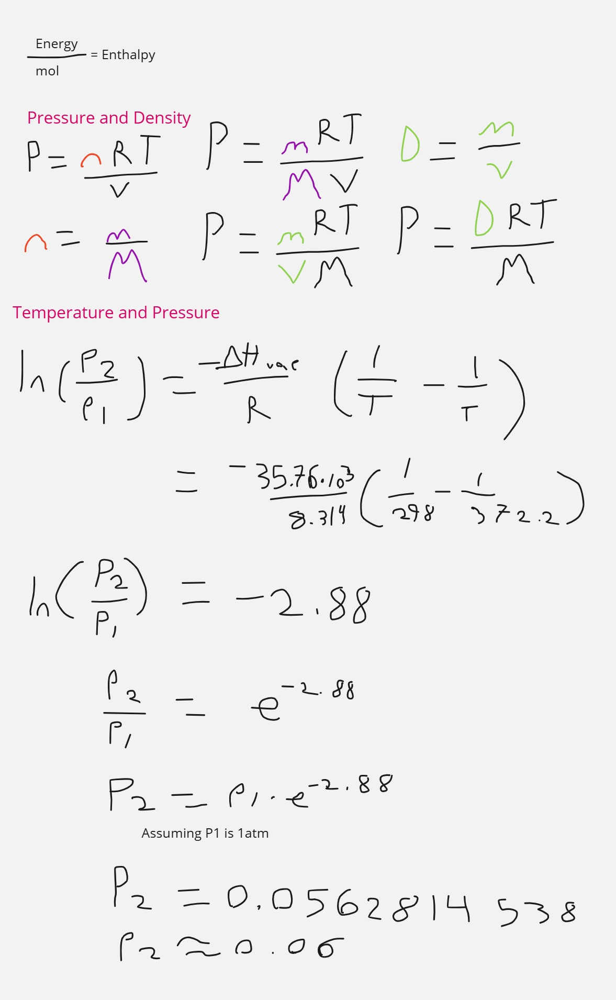
Math in chemistry
Then I ate at my grandma's house, I ate some good spinach tarta.
Date:14/03/2025
Climate:Normal
Location:My Apartment - Italian hospital
Title:Mr Lopez's Birthday
I woke up terribly, without an alarm, I don't even know how I woke up, but I did it. And I took the bus. Everything was going pretty well until I decided to get off at the wrong spot. So I had to walk a little bit and take another bus, causing me to be 30 minutes late to my first Cellular Biology class. Pili looks at me funny realising that this is not the first or the last time I am going to be late to class.
So I sit next to this person that I've never met, and I don't know her name because I was too tired to hold a conversation. The teacher gives us ricino seeds and he proceeds to explain how ricino has several medical uses. He also tells us that if we eat the seed we will die from a poison, and he explains how this poison was used in a pressure gun to kill someone, it was also used to try to kill obama. The lesson of the story is that stuff can be used to aid or to hurt, and this career will help me learn how to use stuff to aid.
Then we make groups, I join a group with Pili and other girls. They gave each group two germinated poroto seeds in a cup. Then they told us that we should ask deep questions about it. Here are the incredibly deep biological questions we had
- What is inside the seed
- How does it create a micro ecosystem
- How does it interact with other life forms
- Why is it green and could it be another colour
After that, all the groups shared their questions, Fernando was by far the one that had the most quantity and quality of questions. He is a knowledgable man and he likes showing that off by doing things such as calling DNA deoxyribose nucleic acid(or whatever the spanish equivalent of that is). Then we try to answer the questions even though we were not instructed to do so. Later comes a 10 minute break. My group was composed of Pili, me, Rosario, Milagros, and someone else. This group followed Pili in her quest to get some coffee from the several coffee machines scattered around the floor of the hospital. However none of them worked to Pili's misfortune, so everyone goes back to the class. I then go to a cafe alone where I buy 2 empanadas, they where quite pricey but I was really hungry.
When I came back the teacher instructed us to try to answer the questions we had. We had already done this so we jusst sat there trying not to fall asleep for 30 minutes. The reason we couldn't just sleep in class was because we were in the front seats since that's Pili's prefered sitting spot. We all shares some answeres the answers that we induced without using phones.
Then something really unfortunate happens. The docentes come to give a presentation about lab reports and how to do them. They call lab reports "trabajos practicos" and they basically go through all the details of how to make a lab report, something I have already done 20 times. Safe to say that I was having a lot of trouble not falling asleep. I wasn't the only one though. Towards the end of the presentation, I noticed they made a mistake with the emails, I pointed it out which hopefully gave the appearence that I was paying attention throughout the entire presentation. Then they anounce that there are still 3 hours left of class and I kinda just wanted to end it all right then and there.
We had a small break that saved us. Pili and I went outside and we saw mica waiting for the elevator. We chatted about how that lesson just now was really bad and we would never want to go through it again. mica, Pili, Rosario, and I went to the cafe that I bought empanadas from. The cafe has a sign that says "cafe" which mica found funny since she thought that was the cafe's name. The cafe's actual name was manana and it has a guy that has some kind of burn mark on his eye, he looks really similar to zuko from avatar: the last airbender.
We all bought coffee in order to survive the following hours. After going back to class, the teacher taught some chemistry, which I am very proficient in so I just decided to do some math. I also answered some questions every once in a while to not raise suspicion that I wasn't paying attention. A noteworthy thing is that zuko and the teacher both told me to speak more loudly so I should probably do that more.
Then we all started going home. I usually stayed studying in the flex space equivalent that this hospital has. They call flex spaces "zooms" here, so i'll call them that. However this time I just went straight to the bus stop because I was really tired. A group of students was walking the same direction, they were talking something about bullying. We walked for a while and apparently mica and I actually live really close to each other in recoleta. We talked about how hard it was to stay awake during class today.
Once I got home, I did some math. I also texted Alex asking him if my sister could talk to him because she is considering taking IB Math AA HL which is a really touph class, alex said that there was no problem. I was getting all the math problems wrong because I was so tired. So I try to get on a call with ethan so he could teach me how to download ableton. While I waited 1.5 hours for Ethan to get ready, I ordered a shwarma. I tried downloading ableton by follwoing Ethan's steps but it took too long, so we talked about how are lives are going. I told Ethan about the friends i've made and Ethan did the same, we are both really advanced for our classes. Then we decided to play super smash flash 2. It was pretty fun, I played mostly as the dark mage and Ethan played mostly as goku, I also ate the shwarma. And then at 17 I had a class with Mr Zarsky.
Zarsky gave me some useful information about how to solve several forms of quadratic equations. And in cases where the equations weren't quadratic, he taught me ways of making those equations quadratic in ways where I only needed to find the real roots. We also briefly went through properties of logarithms.
After that I went to say bye to my grandma and also to get my moms charger from her house. I came back to the appartment. Ethan and I played some more super smash flash 2 until he has to go. Then I practiced playing the guitar for a bit, I finished my shwarma, I texted milla, and I went to sleep.
Date:15/03/2025
Climate:Normal
Location:Argentina->Uruguay
Title:Return
Today I woke up early, and I returned to Uruguay for this weekend in order to visit Milla. Everything went fine except I forgot a mastercard in my apartment. When getting home my sister informed me about her math situation. Basically my sister is considering taking IB Math HL but she isn't sure because Orrico described it in a very scary way. My sister asked Alex about Math HL and Alex says that she should only take it if she likes math. My sister also wants to ask him how he balanced volleyball and math since orrico told everyone that if they are taking math HL they would probably have to quit some after school activities.
Also my mother informed me that apparently Ms Coyle and Mr Amaral called my parents multiple times to recommend that I shouldn't do the IB because it was too hard and too structured and I was going to fail. So it feels extra good to have passed the IB now. Sebs also told me about how he went dancing with Sofe, Bruno, and Sofe's british friend from her university, her name is Marina and Sebs decribed her as "Eitokuesque".
After that, Sebs came. We tried to reserve a court for paddel but the next available time was at 19:30. So sebs started playing minecraft on my laptop while I played my guitar. Sebs was playing on a server that was created during the timeskip. When the server was created Sebas played in my laptop with Ethan and created a base with a farm while I returned a manual car to a car rental. After that, I decided to play in this world aswell and I went really far. Now today Sebas is going to try to get back to the base
Sebas finding the most useless ore in minecraft
After that, we went to eat pizza while talking about how shoes control a lot of the world and what shoes believe in. Timo also came up with a new way to call jews(shoes). We also talked about all the religions and we concluded that the best religion is christianity. In my opinion specifically the christianity represented by Dante's Inferno.
After that we went to play paddel and Sebs suffered for an hour because nothing he was doing was working. He was really struggling. So we struggled for like 2.5 hours until we decided to go back. We went through an alternative route where I showed Sebs the first house that I inhabited in Uruguay as a child and the place where I took my first music class. It's really strange how everything is so close to everything else, as a kid everything just seems bigger and farther away. Then I took sebs home.
I talked to Milla and Sebs, tomorrow we are meeting up at tristan narvaja at 10.00-10.30
Date:16/03/2025
Climate:Normal
Location: My house - Tristan Narvaja - Rudy
Title:
Milla Day
Today I woke up quite tired for some reason, and I drove towards the Tristan Narvaja Fair to meet up with Milla. It's a fair where people sell random things. And there is no official price so you can barter the price sometimes. When I first arrived I called Sebs, and he came to me. He told me that he was leaving towards his home since he couldn't find milla. He tried calling her and texting her but she only replied with emoji's. So I called her and she told me that she would come to us. Sebs and I walked for a short while and I started writing down things I might want to buy in the future. Then we stopped to check on Milla's progress towards us. The Table Tube Gang has a life360 group, basically we can all check each others locations, except Sebs, he deleted that app. So we checked life260 and milla was surrounding us, she was somewhere amongst the people. It turns out she was taking photos of us.
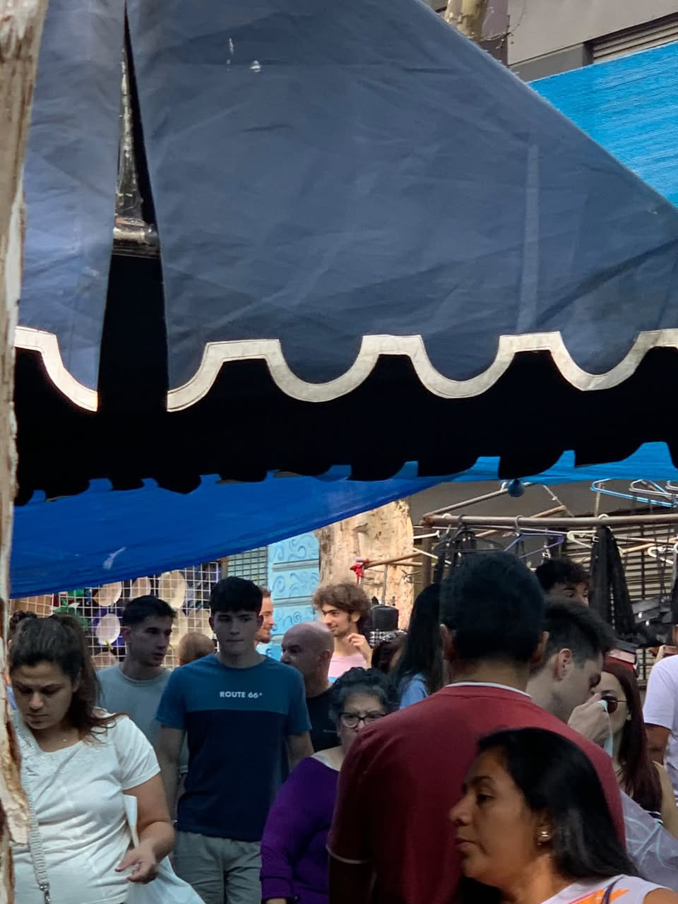
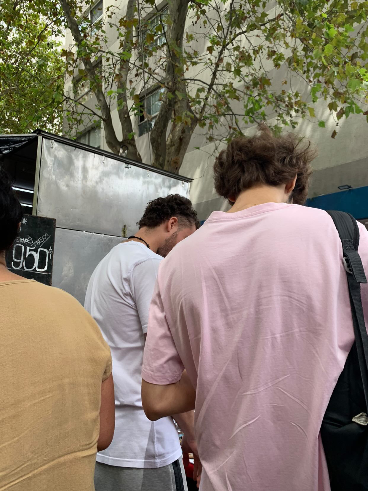
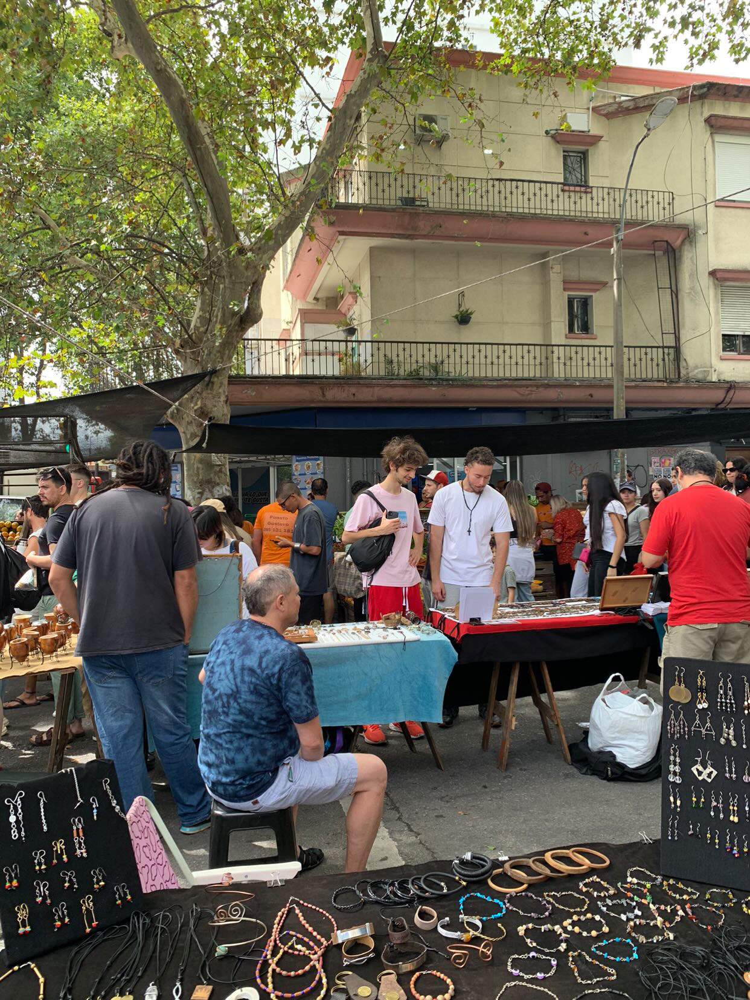
Milla secretely taking pictures of us
We walked there for a while. We went to a bookstore where we saw a lot of interesting books such as a book about flies, a book about batllismo, and the new testament(mini version). Sebs bought a book about punta del este. Then we walked further into the fair but nothing peaked our interests so we made our way back.
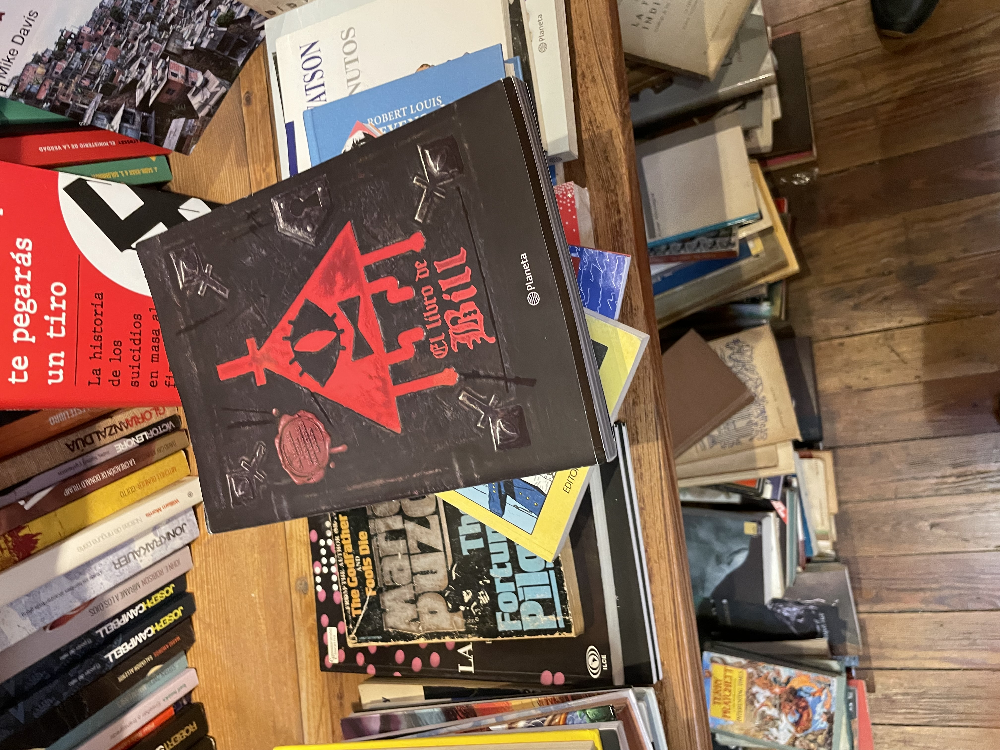
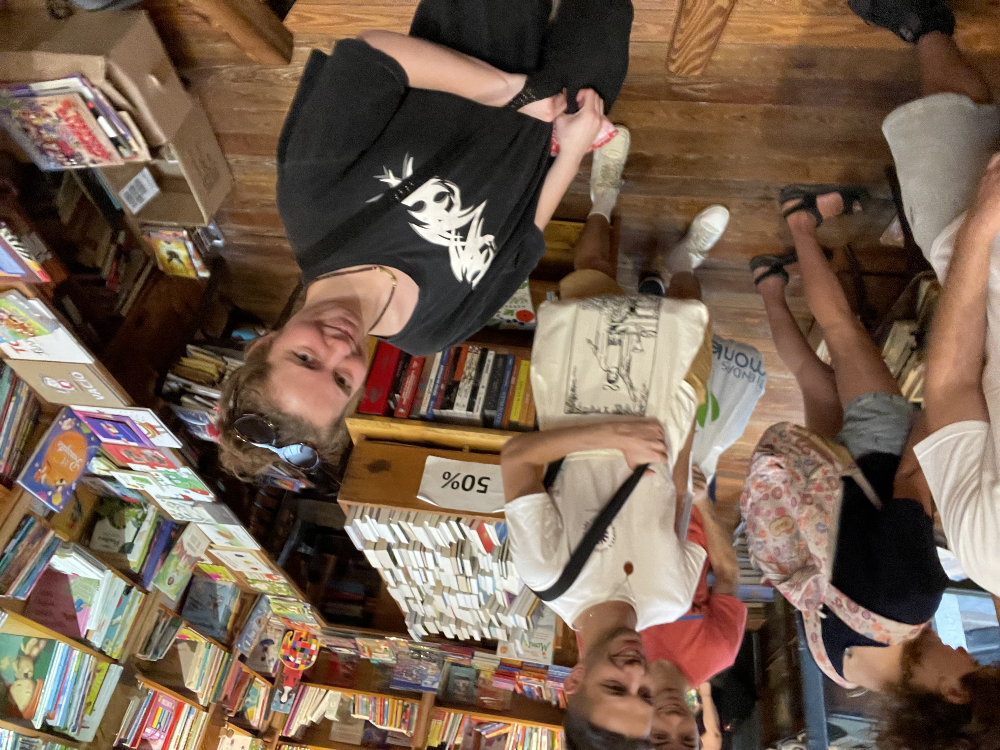
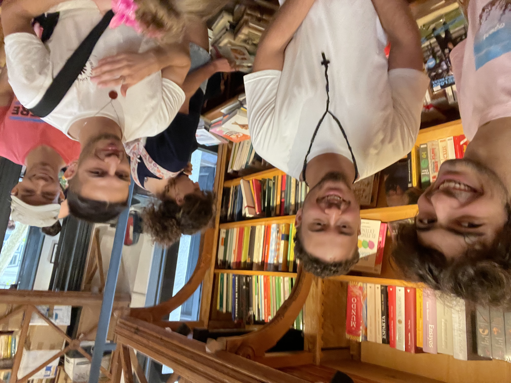
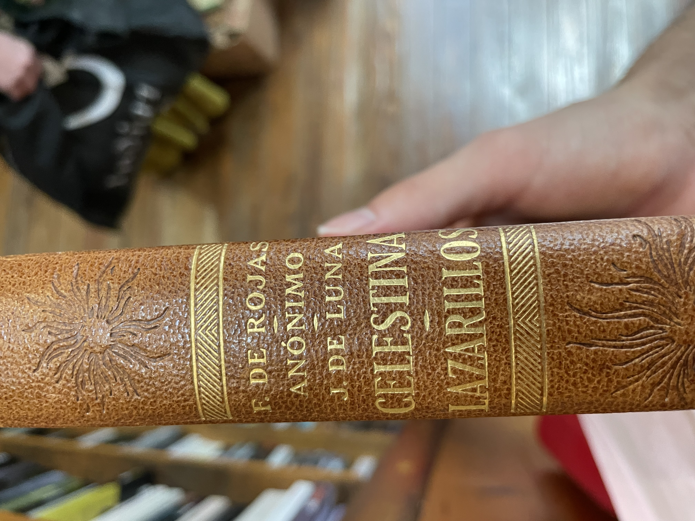
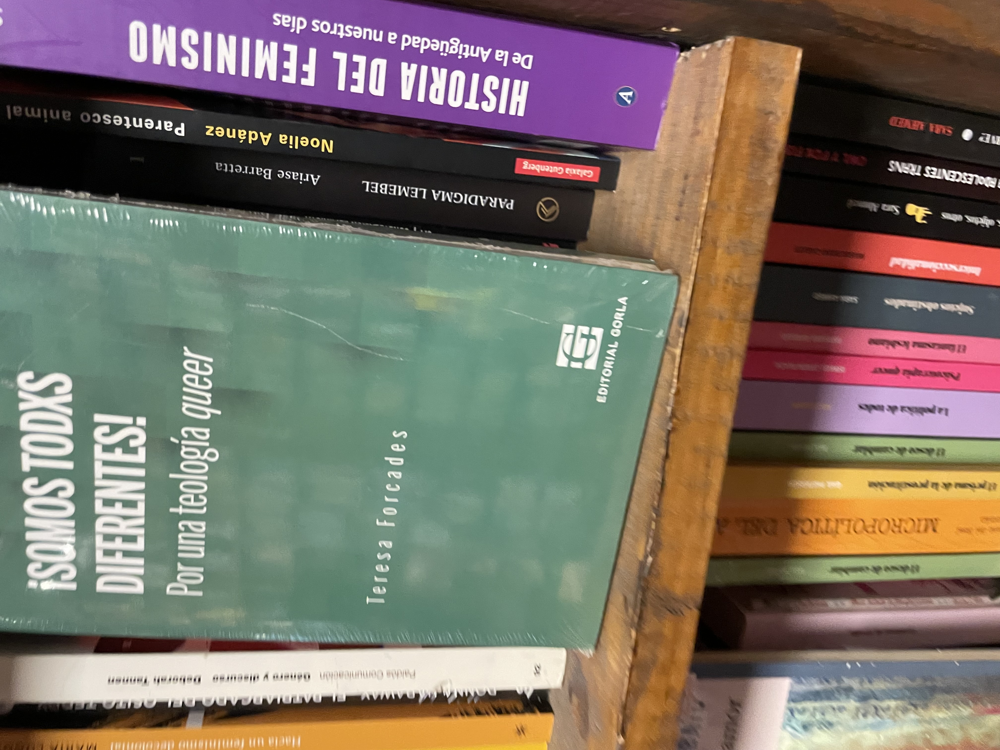
Library Adventures (Milla tried to dodge selfie time and she was partially succesful)
At this point I had written a bunch of things that I might want to buy in my phone. So I went to a nailcutter that I thought was cool. But it turns out it was low quality so I didn't want it. Then there was this cool sweater that was made of wool. The man was willing to sell it to me for 1500, so I was about to buy it until I tried it on and I found it too itchy.
Then Milla left on her search for a good uruguayan sticker. Sebs was really tired at this point so we grabbed some chairs from a chair-stack of a restaurant and we sat down while Sebas drank a bear. I talked to Sebas about how I wanted to buy at least one thing from this place since I won't be coming back to it any time soon. So we explored a bit until I settled for a cool yellow shirt that had my favourite art piece from Torres Garcia called "La America Invertida".
Fun Fact:The America Invertida art-piece represents latin-america as the center of the world and it being on top of the united states instead of the other way around. It's torres garcia's way to remind us that everything is relative and south or north are just 2 orientations that we made up, from a different perspective we could actually be on the top. This art-piece was suggested to be used during an international art festival t-shirts in a school but it was rejected because it might have been offensive towards Americans.
Anyways, we found milla a little later whom has succesfully aquired a sticker. We planned to go to eat something after the fair but apparently Milla had to leave because people were wating for her... in piriapolis. Before she left we asked Milla if we should have lunch at a really good Korean restaurant called Araryio or a really good burger place called Rudy. Milla suggested the korean place before leaving, we aren't going to see her again in a long time.
So we started heading to Rudy, and Sebs made a comment on how elusive Milla was. Sebs also informed me that he used to be a model as a kid and his parents put the money that he made as a model into a savings account and now he has 4 million dollars. I don't know how much of that is true but yeah. He plans make even more money out of this money, he is interested in entering the real estate buisness in Uruguay. He is also interested in buying a house soon where he can stay and live with his girlfriend. Pretty epic stuff.
Eventually we get to Rudy. I paid for Sebs burgers because he paid for my pizza yesterday. They also got my order wrong so they gifted me a salchichon de chocolate.With Sebs we talked about how its funny that we usually only talk about the same people. Ethan, Dani, Sofe, and Bruno. Sebs also likes to talk about shoes and her girlfriend, and I like to talk about trump and how we should reset the world.
Sebs eventually leaves via uber and I go to the bus station. This was a tiring day, I fell asleep in the bus station, when I woke up I saw the 109 bus in another station, meaning that I was in the wrong station. So I ran towards it but it was too late. I had to wait 26 minutes for the next bus. Eventually I did get home. Fede asked how was it, and we all told him what we bought and stuff. I also asked him about the meaning behind Torres Garcia's America Invertida. Fede also informed me that the president Argentina sucks a lot. Very unfortunate. Tomorrow I have online class and i'm also leaving to Argentina once again.
I forgot my salchichon at the bus station :(
Date:17/03/2025
Climate:Hot
Location:Uruguay
Title:First Online Classes
Today I woke up at 10, and raelly tired. I was supposed to wake up at 8 because I had online classes of Biophysics. But for now its only physics and we are learning about errors. So it's safe to say I didn't really miss anything important.
Same thing can be said for math. During Math I made some cool advancements on my website. I implemented some JavaScript and I also made it more accesible through the phone. I also texted the Sunday groupchat. It was a groupchat formed during the timeskip. It's a group of Sofe, Sebs, and I. So I invited everyon in the sunday groupchat to go to crepes like around 14:15. But Sebs and Sofe found that time too early so it was changed to 14:30.
Sofe arrived really well, and I arrived a good 20 minutes late unfortunately. Eventually i did get there and I got a crepe. Crepes has a card that you can get which gives you a free crepe every ten crepes. This was my 9nth crepe which means that the next time I go to crepes I will get an extra free crepe.
Sofe asked if she could have the extra crepe coupon. I thought about it but then I realised that it would be really epic to come back and be able to eat and extra crepe for free so i had to say no. Sofe told me about how she started university and met this new friend called Marina. She is from britain and she does dancing. Marina had gone with sofe, Sebs, and Bruno to a music thing and Sebs said that she was chill.
Then I updated Sofe on all my life, it was pretty cool. I told her about how we went to Tristan Narvaja yesterday and I got a cool yellow shirt. She said she liked that shirt and it had her favourite torres garcia artwork there(it's my favourite too!!) Then we saw on our phone that Sebs wasn't coming which was really sad. Our crepes came and we devoured them because both of us hadn't eaten yet. Then I suggested going to Rudy since I wanted to eat a salchichon de chocolate to compensate for the fact that I lost mine yesterday.
On the way there we talked about tiktok/reel news. TikTok news could either be true or false, no one knows with so much misinformation flowing around these days
- La Roche Posay is cancer (Sofe uses La Roche Posay a lot)
- Fried things are worse than ciggarettes(Sofe was going to Rudy to get french fries)
- Milei is a terrible person(That one isn't really up for debate anymore)
On our way to Rudy Sofe commented to me that the waitress from Bar Arocena had a massive ass. I responded saying I hadn't noticed and she said that one of the reasons she wears sunglasses is so that he can look at people without others knowing. "So that you can look at their asses" I said. Sofe then says she is a very observative person.
We eventually get to Rudy, Sofe has been her several times, but she remarks how this is the first time she has been here. She later clarifies that it's the first time she has been here under such awesome conditions(weather, sunlight, stuff like that). So we order a salchichon of choclate and Sofe orders french fries.
I tell her about the paddel incident with Sebs the other day. Me and Sebs tried playing paddel for 2 hours which made me tired for the next day where we walked around tristan narvaja for a while. This tiredness caused me to fall asleep in the bus station, miss a bus, rush for the next bus, and forget the salchichon that I was gifted from Rudy. And that is why I am ordering one right now.
Sofe has a very shocked expression in her face, I am guessing she was surprised I didn't get robbed. She then mentions that Lara asked to see some of her short films but Sofe doesn't want her to see them. I ask why, and this leads Sofe to go on a whole tangent about Lara being evil. This is quite curious because I've never heard anything bad about Lara. Her constantly cheery and over-expressive attitude might come off as fake but that's just about it when it comes to things that could be considered bad about Lara. However Sofe has offered me the first "evil" perspective of Lara.
If you are actually curious you can read by hovering over this text
So it all started like 5 years ago when Sofe dated Lara's boyfreind, Agustin. I am using the word "dated" very generously because they barely kissed twice. But then Agus cheated on her and they never saw each other again.
It turns out that Agus never forgot about Sofe, and has basically been obsessing over her?? That part is unclear to me. According to Sofe, Lara told her that Agus talked about her when he first met Lara. Sofe found that strange since it's been 5 years. But for some reason now, Lara wanted to invite Sofe to be with Agus which is kind of insane?!?
Sofe obviously rejected this invitation several times since it would've been very awkward. And one day Lara jabbed at Sofe about how Agus cheated on her in the gym. Juanma and Ale heard that and inquired about the situation. Sofe instigated Lara to repeat what she had just said, knowing that she wouldn't repeat it infront of the others.
So yeah, my best guess, if any of that is true, is that Lara was trying to get rid of any attraction that Agus had towards her by inviting Sofe to be with Agus and having them discuss their feelings???? It completely beats me. Also apparently Sofe was really awkward at my birthday party because Agus was there so Sofe if you reading this im sorry.
So anyways Sofe was stranged out by all of that and decided to not share her films with Lara. We checked the time and we realised that I totally had to leave like 30 minutes ago. We both walk towards my car.
I thank sofe for giving me this new perspective. I tell her that I love hearing different perspectives of stuff, specially people. Because I only have one perspective of everyone, and that perspective tends to be good since I think I am a very forgiving, always-looking-at-the-positives kind of person. So hearing about people talk about the negative qualities of others gives me a lot of insight, and its just so interesting. Sometimes it's like they are descrbing a completely different person to the one I know.
We get to my car, I'm taking Sofe home, and since we are on the topic, Sofe talks about Fede. Now if you have read my epic chronicle you know how annoyed I am at the fact that Fede and Sofe hate each other. They both share so many ideologies and if you knew both of them you would think that they would get along really well. But the contrary is true. They get along terrible, so bad, its actually insane. And I've tried to make ammends between them, I was like the peace negotiator between them during an art festival but I only made it worse. And every interaction they have ever had only made it worse which is a shame because they are both people that I respect a lot.
You might be wondering, what is the origin of this hate. Nobody knows, it's a complete mystery. But Sofe brings this up because she recently found a note that pertains to this. Allegedly, during the first week of school, Fede called Sofe a whore. Sofe retaliated by giving Fede a very insultive note essentially calling him fat. Sofe admits this wasn't her proudest moment but she was just mad that Fede called her a whore barely having known her. Sofe theorizes that perhaps this was the start of their hate-hate relationship.
And this a staisfying-enouph conclusion for me
Trying to find out why exactly they hate each other has become a meaningless task, and don't get me started on how immposible it is to have them get along.
But from my years of expertise in the area I think that I do have a theory about who is more responsable for the animosity between the two. It's Fede and there are really no surprises there.
Fede is very selective with his friends and it's very possible that Sofe just rubbed him off the wrong way. Maybe Sofe's efforts to be Fede's friend made her annoying to Fede.
From all the evidence I have gathered from both Fede and Sofe, Sofe is the one that has always given me more concrete and specific answers while Fede's answers have always been subjective. Like "sure I get why you might have been insulted by that" instead of "oh yeah that is indubitably bad".
That could be just Sofe being better at convincing others. But I don't think so because Fede is known for being very selective with friends and having stored feelings for many peoples. I don't get that from Sofe at all, she is really open about how she feels.
Sofe then adds that she had never tried as hard to be friends with anyone as she had with Fede. She went to like a charity event and stuff. Also, she found it weird how Fede wanted to hang out with Angie even though she was clearly homophobic. Fede sometimes says that Sofe is transphobic but Sofe argues that she has trans friends.
Then I leave sofe at her house, but not before she rates my driving. A 5/5 ;)
Then I went home, packed my things, and moved to Argentina
Date:18/03/2025
Climate:Hot
Location:My Apartment, the streets, Daily Coffee
Title:Filler Episode
It's Nata's Birthday today. I said hi to her through instagram which reminded me that I had a hanuka wallpaper in her chat ever since I accidentally changed it while I was walking with my phone in my hand.
I woke up with closey eyes, but I couldn't fall asleep. I was realyl sad about missing Math class but then I realised that what I actually missed with Inorganic Chemistry, which is good because I am already quite proficient in chemistry. Tomorrow I have math and it's going to be epic. Talking about Math, I decide to try to do some math myself, but I am actually so tired, I can't concentrate it's so hard. So instead I start cleaning up my room, tyding things up so that it looks better, and now it does.
I also order myself a pokebowl which was pretty nice. Then Pili set 17 as the time to do some biology group work that we needed to do. So I spent sometime trying unsuccesfully to do math.
Then I walked really far to get some plugs for my stuff since I didn't have Argentina plugs. On this walk I also bought a manual shaver and a vegan burrito. I was also trying to buy an electric shave but I ended up buying a normal one.
I get home at 17, just in time for me, Pili, Rosario, Milagros, and someone else to start working for Bio. So we do some work, I find really cool resources from perplecity which we can include in the document.
Then I leave at 18 to have a class with Zarsky, I learned about inductive differentiation, which is not in the syllabus. It's just that Zarsky has such a good way of explaining things that it makes me want to learn more instead of practice what I already know.
Then Milla sends a message through the table tube gang groupchat asking for recommendations of restaurants in Punta Del Este. Fede googles some restaurants and Milla tells him that she can obviously google them if she wanted to but she wanted to know if anyone had gone to a specificly good resaturant. I suggested Rex which is a burger place that is really good. Milla wanted stake so she probably didn't go there.
Then I went to have dinner at daily coffee. I ordered some spaghetti and then a man came to talk to me. He asked me why I looked so thoughtful and I just said I was tired. Then he lectured me about how being a nice person is something that is really tiring some times and that is why not everyone is a good person. He also taught me a new phrase "cada dia tiene su afan". Then he asked if I wanted to buy socks. To his surprise I actually didn't have socks because I forgot them all in Uruguay so I bought a pair. And that's the last interesting thing that happened.
+ 1 Sock Pair
Date:19/03/2025
Climate:Hot
Location:My Apartment
Title:Unsure about everything at this point
I wake up tired today. I couldn't really sleep well for some reason I don't know why my body just doesn't want to sleep at night it's so retarded. I drink a concentration pill anyways and I make my way to the bus. I ask an AI doctor what is wrong with me and it gives me some probable causes. The most likely cause is stress.
So once I arrive to the class, there is no one. I ask around but no one seems to know anything so i text pili. It turns out that Math actually starts at 9:14, not 8, because Math can never actually start at the time it's supposed to. I do some math, I get some empanadas.
People start arriving slowly. Fernando sits next to me and we talked about a bunch of stuff while the teachers talked for what felt like an eternity. Fernando was helping me with certain syntax that is used in spanish math. He also kinda mocked me for speaking a lot of spanglish which is fair.
I also meet Martina and Nacho and us 4 start drinking Mate. This happened for quite a while. We talked about stuff a lot of stuff. One of the things we talked about is how Martina is also living alone for the first time. Eventually Biophysics came, but it wasn't any different.
I went home, I didn't see Mica on the bus, maybe cause she left much quicker than me, or maybe cause she took another bus. Once I arrived home I did a lot of math, I also gave my grandma some alfajores, a mate cup, and some pants to wash. It was nice seeing her. Then I went to eat some wok at daily coffee, it was delicious.
But on the way back my mother informed me that i had missed the Maastricht interview that was yesterday and that made me so sad. It's so hard to keep track of so many things, specially when I can't sleep because of some stupid reason. I don't feel like I'm getting into Maastricht now. I gotta try my hardest for AUC and Groningen, I believeeeee.
I actually went to sleep at 21:00 but I couldn't fall asleep in the next 3 hours so I started doing math annnnnd
Date:20/03/2025
Climate:Normal
Location:My Apartment - Italian Hospital
Title:Diluted
I did math till 4 am where I fell asleep, and I woke up at 10, debating weather to show up to class or not. I then went to Le Pain Quotidienn and I got a Hot Chocolate and a Cacao and Berries Muffin. I texted Pili and they said that they were investigating how to dilute things. I decided to go because it would be fun to hang out with people.
I said hi to Fernando and Martina and I met Juan. They asked me why I came just now and I said that it was because I decided to stare at the ceiling for most of the night instead of sleeping(except I didn't "decide" to do that). I entered the class and then I went to the chemistry lab where Pili asked me the same thing, so I answered the same thing. Pili says that she often drinks melatonin, otherwise it's really hard for ehr to fall aslee.
In the class we dilute some salt into some water. In the last lab, we weighed some salt using a scale and then we encased the salt in a paper envelope. The teacher(Ms Suseya) did my envelope because apparently I had done it wrong. However she also did it wrong because some salt fell out of my envelope, and also Pili's envelope. So we had to quickly re-weight the salt in order to make some saline solution. After that We diluted a solution of copper. I took some extra time because I wanted to be really precise. I was the only one in the class mixing copper with water at one point. But then I finally finished.
Later that day, I ate at daily coffee and my mom informed me that I missed
Date:21/03/2025
Climate:Hot
Location:My Apartment - Italian Hospital
Title:Back to Home
So today i'm going back to Uruguay, but first I have biology class. I didn't pay attention in biology at all. I just did stuff in my computer for most of the class.
Then we had a break where I went to buy some cool orange juice. Martina, Juan, and Fernando where there. Fernando and Juan were waiting for Martina who was buying a coffee. While Fernando explained where they were to one of his friends, he called Martina "la lesbiana", I don't know if that was a joke or she is actually lesbian. Then Fernando decides to also buy a coffee, the rest of the group hesitantly abandons him because they don't want to be that late to class.
So we all arrive a little bit late to class, and Fernando arrives a little bit later. The teacher explained some stuff that I tried to pay attention to but I failed.I do remember that he went through a lab that me, pili, rosario, and others created and it was the one with the most amount of information so that's cool. Them the docentes came to talk and I actually fell asleep here.
Then we went to the lab in order to look at blood and bacteria through a microscope. We were all seperated into our groups that we formed last biology class. My Biology group is Pili, Rosario, Milagros, and someone else. The lab was pretty cool, I am pretty sure we need to write an entire lab about it which I am not really excited to do. After that the docentes told us that now we have to go to a second lab where he will show us something.
I had to leave early because I had a bus to take, and so i did that. Pili told me that Miguel showed us something about optical illusions, it sounds cool but honestly i'm too tired to care about anything anymore.
I take the boat back to Uruguay, I didn't study any math today :( Through the speakers, they anounce that cars can't leave or enter the boat all at once because of some technical problems
Date:22/03/2025
Climate:Normal
Location:Chinese Store Wantan
Title:Chinese Episode Part 1
I'm just going to skip to the interesting part. At 19:30 I met up with Sebs, only with sebs since Ethan and Sofe couldn't make it. I asked them both seperately because they don't really get along that well. This is cause Ethan supports Israel and Sofe supports Palestine. Sebs also made a joke about how Ethan was short for Ethanol
Also Fede chats with an old friend of his from a very long time ago. He was in UAS so he has this amazing picture of what everyone wishes to do in the future.
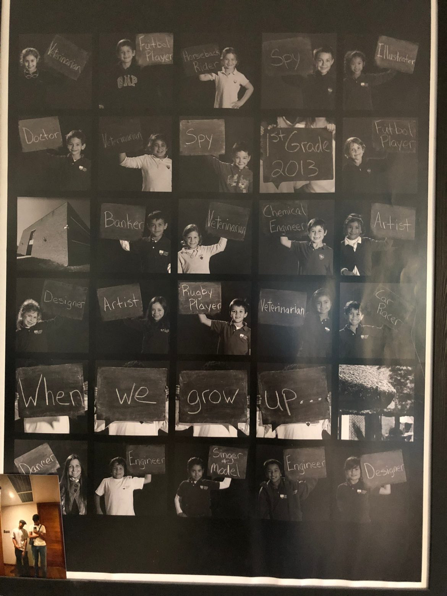
I said a Doctor, now I'm doing pharmacy, close enouph
I also complained about mosko because I will never lose the chance to do so. Mosko almost failed me, but as a result of that, this interaction occured.
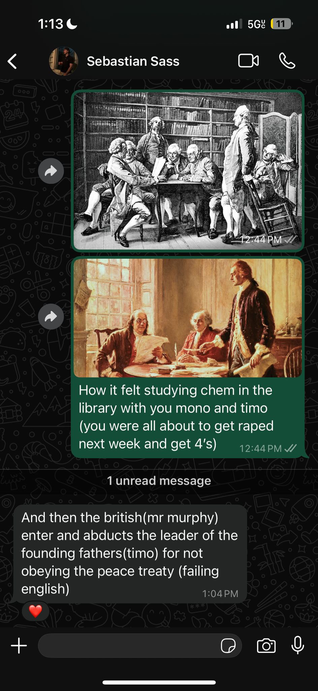
Epic Dani-Sebs interaction. This slightly makes up for Mosko's behaviour
I drove the manual car here, and my sister joined us. Our plan was to go to a Food Fair called D'Gusto, it's a fair where I once talked to Sebs about the salem witch trials and sebs caused them. I also once bought a normal green mug there. So we walked towards a church looking thing in arocena, and I greeted sebs. Then we went to the entrance of the food fair because for some reason it was surrounded by gates.
It turns out this wasn't D'Gusto, it was Burger Show, and an entrance fee needed to be paid. After walking for a while, they both decided to go to "El Escondido" A place that has been only visited once by Constan, Sebs, Fede, and I went to once. It was pretty good so we decided to re-visit it after 4 years. It was closed, unsurprisingly. but there was a nearby chinese restaurant that didn't look half bad.
Eventually, Mateo (my sister Paula's boyfriend') arrived. After I took a while to order, we started playing the games in the table cloths, Sebs was the best at tutifrutti.
Eventually our food arrived, Sebs got some chicken, Pau got some dumplings, I got soup, and mateo got rice. The best food was the one Sebs got, chicken. We talked about weather or not Paula should chose Math HL for IB, and we also talked about teachers like Ms Moskovicks and how she was the worst english teacher in that school. Except Sebs disagrees, he says it was Ms Coyle.
Then we all go to eat ice-cream. On the way there we encountered Luis who quickly catched up with us. Luis was a friend from UAS who joined the school for like about a month and a half. During his time there, he didn't care about academics in the slightest, he did some pretty epic stuff like win a cookie from teacher Erin Mills, ignore Mr Cadenas while he was shouting at him(luis) and sleep in chemistry. He also once invited everyone to a party, but only Fede went. Overall he was the mont nonchalant being of all. He dedicates his life to soccer.
Sebs was baffled by this encounter, he said he would've dressed better if he knew he would meet luis. So we go to the Ice-cream shop and we eat some real nice ice-cream. It's called La Madriguera, it's a cafe that also has an ice-cream shop, and they ahve very interesting flavours,and also black ice-cream cones, because they have carbon or something.
Then everyone goes back home.
Date:23/03/2025
Climate:Rainy
Location:My Parents' house in Uruguay
Title:The Mock Exam (Good Ending)
I woke up and I started studying math, I studied ways of finding higher roots than just two, now I know how to find the roots of some cubic functions. Quite epic. I also studied trigonometry things but I can never seem to memorize the tangent rules. So i went down and my mother told me that studying before a test is a bad idea because you can get nerveous and mess everything up. Maybe she is right. My father went to a glider championship recently so we had to rent a car, a manual car.
Fun fact about me, I love driving manual cars, I find it really fun to use the shift gear and stuff. It's much less boring than automatic. So I go for a walk and then I drive around with the manual car for a while because I just love to do that. I thought about getting mc donalds but i forgot my credit card so I literally did just go around for a drive and come back. Some people might call that a waste of gas.
When I came back I did the test, and I felt much more confident this time, I felt like I knew what I was doing, there was no question I saw that left me paralysed, except every tan identity question but we don't talk about those. There was however questions that would have taken me way too long for me to do. But overall I answered way more questions than last time, and I am really happy about these results. The results are not in yet, in my first official attempt I got at this exam I got a 45%, in my next mock exam I got a 48%, but I have a good feeling about this one, i am guessing higher than 75%, which is the passing grade for the Amsterdam program I want to do.
I go to sleep, happy and hopeful
Date:24/03/2025
Climate:Cloudy still hot
Location:My house in Uruguay - Shang Hai - My Dentist - Paddle - Europcar
Title:Chinese Episode Part 2
So i woke up pretty bad because I had to wake up fairly early. Remember that one time that I missed my interview with Maastricht for the second time and then I re-scheduled the meeting after them telling that I had only one more opportunity, only to miss that opportunity again, and then I re-scheduled it again but I didn't send them any email or anything in hopes that I would go by unnoticed as if it was my first time scheduling an interview?
Well today is that interview, and I didn't forget. WOOOOOOOOOOOOOOOO. Bad thing though, I am not prepared in the slightest. So I wake up, drink a coffee, open OneNote, spend time trying to sync it to my phone. And then I do the interview. Some questions were asked
- Where did your passion for science come from?
- What do you think about Problem-Based-Learning
- Would you be comfortable asking questions in an educational enviorment
- What do you think about your ability to apply calculus to science
- What are your hobbies
I answered all the questions truthfully, and overall the interview went really well. I then decided to meet up with Sebs in arocena. We planned to eat sushi, however the new sushi place we were going to try was not there anymore. So we decided to go on a walk to see what else arocena had to offer. We found several potential candidates like el peaton, pizzeria popular, but they were all closed. Eventually we found a chinese restaurant, seperate from the last one, and we decided to try it out.
We talked about superpowers and what would we each have. Sebs would want to control geology and metereology, which is basically being god. I said that I would like the power to double or nothing anything. Like if I get a burrito, I use it to get 2 burritos, or no burritos. I actually like that power and I feel like it would be a great power for me if I was in a superpower show like my hero academia since it has a restriction to it, or a risk per say since it's 50/50. But then I gave an alternative answer, which is what I would pick if I didn't have any limitations. I would probably pick time travel, but not in a way where it fucks everything up.
Then the food arrived, and we ate, and it was actually quite spectacular. I ordered spring rolls and some wok and I must say that the spring rolls were much bigger than what I had anticipated. So Sebs and I ended up sharing some spring rolls. Then we both left to our respective homes.
Important News
I got news that the Papa Francisco has Broken. This means that I am unable to reture to Argentina until April Second. Quite interesting. This is the Uruguayan Arc right here.
Date:25/03/2025
Climate:Irrelevant, also I don't remember
Location:My house, Lon Tennis
Title:Tennis (You thought)
So sebs and I plan to go to the Lon Tennis to play some spectacular tennis. I go there, all is good, everything is going to plan. I even meet Lara Berman's brother, Fede Berman, who says hi to me. I also meet this other small dude from UAS whom I don't remember the name of, but he was a nice kid. Eventually sebs shows up.
I teach him the basics of tennis, basically in paddle you are always wanting to hit the ball with a downwards motion while in tennis you hit it with an upwards motion. So we go to the tennis court place where the guy assigns us a tennis court. Unfortunately my shoes are not allowed in tennis courts built with brick powder (the only tennis courts the carrasco lon tennis has to offer)
So we go to my house, we think about playing paddle, but we only think about it. We actually just watch a bunch of episodes of breaking bad. It's a good series, I really like how well Janes death was made. It was Walter's fault and it was so sad. Very well executed, her birthday was the fourth of the fourth, that's Linda Rasheed's and Carla Antonia Rivas' birthday aswell in case you didn't know. It's also the day that the minecraft movie comes out which I am really looking forward to watching.
After we watched breaking bad, sebs stayed to eat. And then he learned how to play Truco Argentino. Sebs and I won against my sister and my mother which was epic.
Also I obtained the translation for my spanish documents proof of ADHD documents. I send them to Jannette. Jannette also got back to me saying that typically this process lasts 5 buisness days, meaning I am kinda screwed if I want to take the exam this weekend. I might have to take it without extra time.
Date:26/03/2025
Climate:I forgot
Location:My House - Tennis
Title:I don't remember
Okay so I'm going to be straight up honest with you here, I have no idea what happened today. Listen because you might be saying, oh Timo, how??? I have been doing a lot of math reacently, oh so much math. I've been lacking on journalying, and I haven't journaled for like 5 days.
That's right today's actually the 29nth and I will have to re-construct the next 3 days all from memory because I forgot to record them the day I was supposed to do that.
I will tell you this, sometime ago I have submitted an ADHD form to the OMPT but they haven't gotten back to me. I need to prove to them I have ADHD so that they give me extra time. The 22 of march I emailed them directly saying that they still haven't gotten back to me through the form. Jannette replies in the 24rth that spanish documents aren't allowed and I would need a translation, she also adds that the documents must be sent 2 weeks in advance before the exam (I was planning to take it next weekend). This might be an issue.
also somewhen in this week I also sent an email to Kemal Taskin, he is the UAS's university guy. Basically I told him to send the official IB papers to the universit of Groningen. He replied saying that he sent the papers to Groningen, however he was pretty sure that I needed to make it so that the IBO sent the papers to Groningen, not the school. So I did the procedure that I need to do to get the IBO to send my exam results and diploma to the University Of Groningen, and it all worked out fine.
Also, today I got a haircut and I ate some salty pork. I also bought a flan and yeah that's all I remember
This things probably happened today
Date:27/03/2025
Climate:Rainy
Location:My house
Title:Working Hardly
Jannette gets back to me informing me that I have to turn in a signed and stamped document or the original document that the translation was from. I quickly turn in both the original and the signed/stamped translation. Additionally Maastricht sends me an email about how if I don't send them the application before the second of april they will execute me.
I also studied a lot of math
Date:28/03/2025
Climate:Interesting, Rainy
Location:My House
Title:Wokring Hardly
I wake up to some good news, somehow the process that was supposed to take 5 buisness days only took a couple of hours and I got the extra time that I needed for the OMPT-B test. This is great news. Then I also get back the mock exam that I did 5 days ago. I go through all the questions I got wrong. I do that for like 5 hours.
Then I get a message from none other than Sofe. She created a group called "idk Bar?" and she wanted to go to a bar, or some place where they have whine. I get there in time, then sebs comes in a little later and we go to this place. See I have a friend called Constan who iv'e known for quite a while now, and his family has a vineyard and they sell good whine. However Sebs didn't want to go there.
Sofe called us asking us where we were and informing us that she is very cold (it's kinda raining at this point). We start walking to el peaton, or something like that. As we head there, Sofe talks to Sebs about film while I talk to Bruno about Math. We sat down, Bruno ordered a milanesa. And Sofe started talking about her boyfriend Lorenz. Apparently Lorenz has been quite annoying to Sofe. She doesn't like how he wants her to tell him every time she goes out and does something and stuff.
What is even more surprising is that apparently this beef has been going on for much longer, and also Sofe told me about this in several ocassions. According to her anyways, I don't remember her telling me that in the slightest. Then Bruno gives his opinion about long distance relationships, he doesn't like them. According to the data he has gathered, 100% of them don't work. But I present some counter evidence, Alex and Nata. They haven't seen each other for like 9 months ans they are still going strong, however Sebs aargues that their relationship is made up, which I don't know what that means. Also Sebs and Sofa are distant most of the time and they are doing great.
Then I ask sebs if he is going to get a drink here, he says he doesn't know. I was asking him to make a decision myself, if Sebs had said he wanted to drink something here then I would order something to eat for myself. Sebs said he didn't know. I could still make a decision because Bruno already ordered. So I ordered a crispy sandwich. Sebs immediately got something to drink afterwards, a decision inspired by my decision to get something to eat.
Bruno's milanesa came and it was very big, it tempted Sebs and he decided to get one too. Then Sofe started talking about this movie about this guy that discorvered this other guy having relations with his sister, and the other guy tricked the first guy into having relations with his own daughter, and then he gave himself amnesia through voodoo to forget it was his daughter. Sofe thought it was a great film and she is thinking of analysing it for her film class. I obviously gave a very poor description of the movie, it's probably better than what it sounds, but it did sound pretty bad.
I then get my sandwich. I ask Bruno what his plan of action is and he re-tells me about this epic math thing that he is doing. He is doing like math animations and stuff. Pretty epic. I also asked Sofe what is her current plan of action and she told me that today they make the decision of weather she gets accepted to Khan in france.
The Sofe asked me how i'm doing, I told her I had an interview with Maastricht and then she asks me how it went. Bruno hears the word Maastricht and he interrupts me to talk about their psychadelic research. Sofe definately was not interested anyway because she immediately opened her phone as soon as Bruno started talking.
Then Sebs gets his Milanesa and he shares some with Sofe. Sofe gets some wings and we all eat some wings. And then Sofe anounces that she wants to leave, so Bruno takes her back.
Then Sebs and I stay there, eating wings. Sebs tells me that I am unreliable when it comes to hang outs. I often arrive late to things because I am a pretty distracted being. During the timeskip I once didn't set my alarm right so I couldn't go to Tristan Narvaja with Sofe and Sebs. And this other time I arrived an hour late to Sebs' house.
However I argued to Sebs that those were only 2 times where I was unreliable and the rest of the times we've hanged out I have been arriving at an acceptable time. This small discussion arised from a time during the timeskip where Sebs told me to meet up with him at around 14 at a cafe, and he arrived 1 hour later to that same cafe. I was reasonably pissed about him making me wait one hour at a cafe all by myself.
He proceeds to explain that he actually did it on purpose, he told me to arrive at 14 but sofe and him had planned to arrive at 15. He just told me to arrive one hour earlier because he thought I was going to be late. He agreed to never do that again under the condition that I never arrive more than 30 minutes late to any meeting of any sort without warning.
I did accidentally break this agreement once, but he wasn't mad about it and he forgave me. Apart from that one time I arrived well to every single time we hanged out. But sebs wasn't convinced and he still says that I am unreliable. So I decided to be stricter upon myself, I told him that I would never be more than 15 minutes late to any meeting. Maybe now I'll be worthy of being called reliable.
Anyways, then we talk about the unvierse. I talk about a theory that when you die, you simply start experiencing a conciousness from another universe, meaning that we are all immortal until every single version of ourselves from every universe has died. But there are infinite universes so maybe that never happens.
Then Sebs tells me about subliminal messages and how he has used them to change his eye colour and change other bodily features. It all sounded quite unbelievable. But it got us talking about the universe and how maybe conciousness makes the universe what it is. And how maybe future versions of ourselves have an impact on the present. It was too complicated for me to write it all down. After that we all went home, but it was a pretty good talk. An important detail is that he told me to kept this secret, so i guess I shouldn't write this here. But then again he will never read this ever so why not. Sebs if you are reading this don't worry, no one will read this ever ;)
We both go to our respective homes.
Notes:
I'd like to add a new little section to my entries. Just to give my opinion on some things. Firstly I'd like to apologise for the messiness of the last 5 entries.
Secondly, Sebs brought to my attention that during today's event, Sofe seemed like she really didn't want to be there. Which was kind of strange because she was the one who invited all of us to do something. I hadn't noticed at first but now that sebs mentioned it, it really did seem like sofe was in a bad mood. Maybe it was the place we chose or something, or maybe Sebs is just imagining things.
Date:29/03/2025
Climate:Irrelevant
Location:My Home in Uruguay
Title:Nothing
I did math today, I studied math, that's all I did
Date:30/03/2025
Climate:Irrelevant
Location:My House in Uruguay
Title:Math Time
I woke up at 3, and I stayed awake till 6 until I took melatonin. Today I have math, I can't afford to not sleep. So I re-woke at 12. In total that is 8 hours of sleep, but it was interrupted. So I am still tired, which makes me really worried about the test. I tried to rest more but I didn't want to take another melatonin.
I don't want to tire my brain any more than this, so I just watch Tommyinnit's minecraft movie stream, and I accidentally get a minecraft cape out of it. Nice. I also layed in bed, trying to sleep, but I couldn't. Until 17 hit. My exam is at 19.
I started preparing everything. I was so nerveous, my hard was beating. I had to drink some coffee to wake me up and that unfortunately contributed to my nerveousnes. But I couldn't afford feeling sleepy now. This was the moment that would decide weather I would go to the Neatherlands or not.
I tell Fede and he wishes me luck. Sebs tells me that he would have invited me to watch something if i hadn't had the test today.
Eventually I connect to the exam browser. I see no accomodations for me even though I am supposed to have extra time because of my adhd. But my supervisor fixes it, so now its all good. I do the test
This is way harder than the mocks i've done for some reason. All the questions are the same topic but they are harder versions. The first question for example is always multiplying fractions, but for some reason here it divided them. But I manage, overall I couldn't respond 6-7 questions. All the questions I did I knew how to do and I believe I got them correct unless I made a typo or a small mistake (very common in math). This means that the best case scenario is that i get a 89%. It's a good maximum score, however it is unrealistic to hope I got every question I did right.
Honestly, I believe I probably passed. The real question though is weather I passed with more or less than 75% which was the minimum for getting into AUC. I don't know, but I'm hopeful. And even if I fail, I know that I put my maximum effort into this and I did everything I could.
No more math
Date:31/03/2025
Climate:Rainy
Location:My house
Title:Now What
I did some epic math, now what. Well now I wake up at 6 AM to talk to Fede about Universities and stuff. It's quite interesting. I also got an email saying that I got rejected from AUC because of my defficiency in math, but that was expected, as soon as I get my OMPT-B test results back I will appeal that.
Today I also went to eat some lunch with Sebs, it was quite fun. We ate at a foodcourt in Punta Carretas. We talked about Dani, we talked about the bomb threat that happened at the UCU (Universidad Catolica de Uruguay), and we talked about gut bacteria. It was quite fun.
I am kind of worried about the work that I haven't done for the Italian University.
Date:01/04/2024
Climate:Irrelevant
Location:My House
Title:April Fools
April fools!!!, the joke is that I got my OMPT results and I got a nice 70% which is good but I needed a 75% for AUC. I sent this result to all the universities of the neatherlands. I also checked and realised that Groningen actually requires me to take another test called the OMPT-D. I want to die.
Turns out I am probably doing another test. This is so bad, I can't catch a break, genuinely, soon this will be over, hopefully.
On other news, I did a questionario from the Italian Hospital and Pili informed me that we have a parcial on this thursday. I am definately not going to take it. But this reminded me about the italian hospital. I'm coming back there next week.
Date:02/04/2025
Climate:I don't even know
Location:My House
Title:Minecraft Planning
On the fourth of april the minecraft movie is coming out, actually its on the third but we are watching it on the fourth. I invited Ethan, Martina, and Sebs. Sebs and I had already planned to watch it. Ethan said yes, and Martina said she couldn't on friday, I suggested to watch it on saturday but she said she couldn't on the weekend. I think she just dind't want to.
I don't like it when people don't just tell me that they don't want to do stuff and instead they look for excuses. My first instinct when someone tells me they can't go because of something is to find a solution, but it ends up being pointless if that person didn't want to go in the first place. I'd rather have them tell me "Oh sorry I'm not really interested" or something along those lines.
Also, through the groupchat, Ethan said "poggers" with the frog emoji. Sebs found that cringe. Not much more to say about the minecraft situation. Sebs and I think that the movie is going to be so bad that its actually good. I really hope its not just bad
Later that day I ate chinese, I have nothing to do tomorrow.
Date:03/04/2025
Climate:Irrelevant
Location:My House
Title:I got Accepted to Groningen!!
Today i got accepted to Groningen. This is great news because now I have the choice to officially go to the neatherlands and live there. However I am still deciding. Because the Italian Hospital really wasn't that bad, and I like the friends that I've made there. So here is the list of pros and cons both the Italian Hospital and Groningen.
| Universidad del Hospital Italiano de Buenos Aires | University of Groningen |
|---|---|
Pros
|
Pros
|
Date:04/04/2025
Climate:Cold
Location:The Movies
Title:
The Minecraft Movie
Sebs and I went to McDonalds and ordered minecraft related meals. We are both so excited to watch the minecraft movie. I got a bad toy and sebs got the fry helmet. Sebs had ordered a lava minecraft combo which included some minecraft lava sauce which was spicy and actually pretty good. I got a happy meal.
Then Ethan sent us a message saying he was at the movies. I was about to tell him that we are at Mc Donalds but Sebs told me to wait a little bit so we could meet him at the movies. It made sense instead of him coming to Mc Donalds and then going back to the movies.
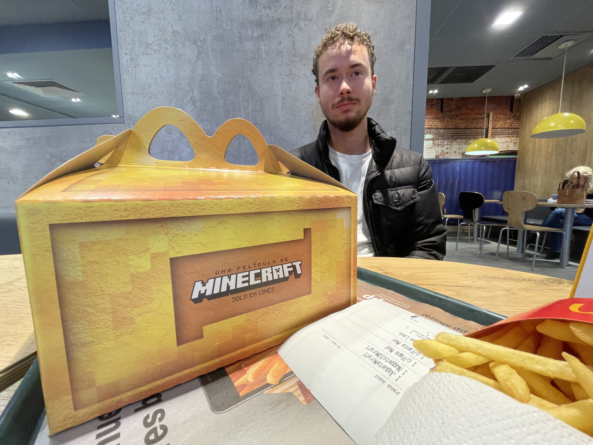
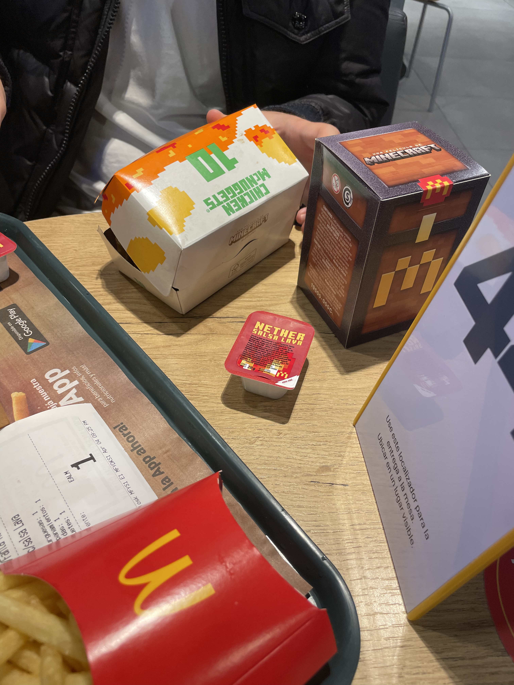
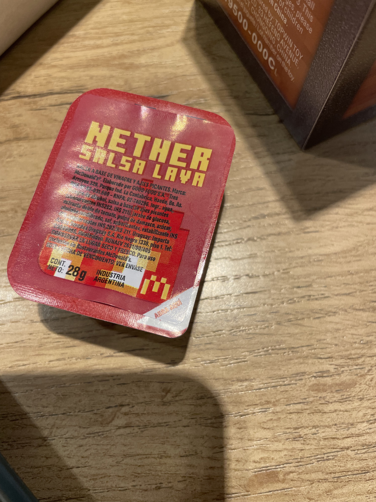
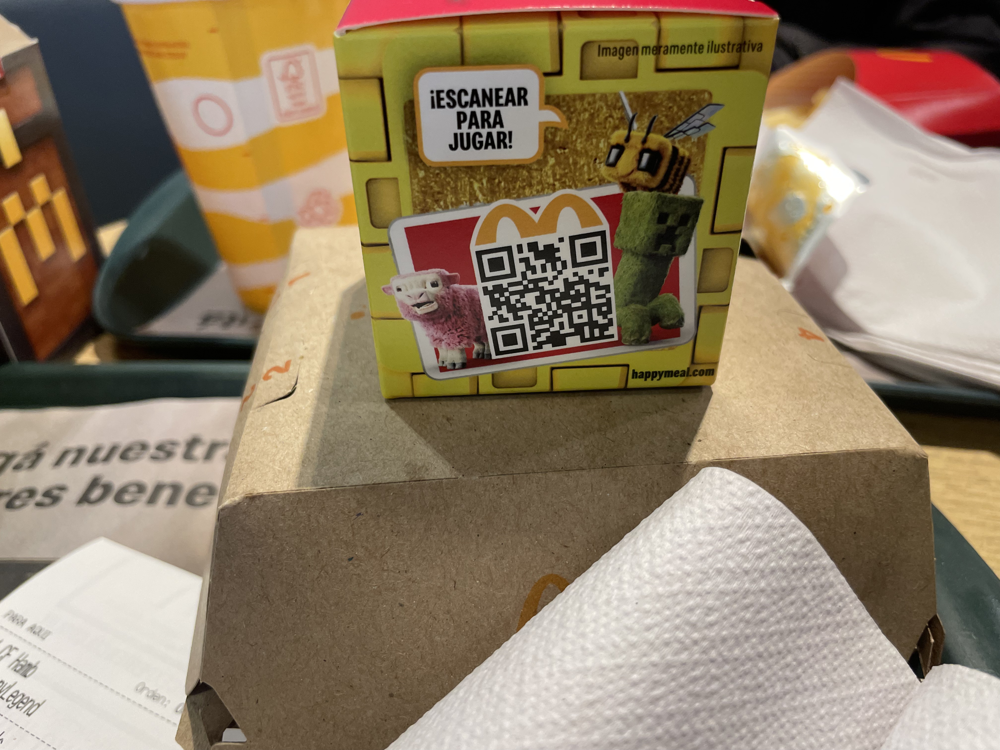
Mc Donalds Minecraft
So after that we finished our extraordinary meals we head towards the movies where Ethan was. But we don't find him for a short while because we are kind of blind. After finding him we succesfully get our popcorn and we head towards room 6. It was an amazing movie.
Movie ReviewIt was absolute garbage, but it was funny to watch with friends. The actors clearly had fun making it and that fun was also really contagious. The audience also had a lot of synergy with the movie, you know how concerts with a dull audience are kind of boring? This is the opposite effect, normally the audience doesn't really interact with movies, but in this case I would say that the audience-movie interaction was essential almost.
There was a cool technoblade reference and certain youtubers appeared. Overall it was totally worth it watching it, it wasn't good but it was entretaining.
Best Movie Ever made
We didn't stay for the last end credit scene even though I knew there was one. Overall it was a fun experience. The movie wasn't as bad as I thought, I enjoyed it more than Multiverse of Madness but less than Fiven Nights at Freddy's. We talked a bit about the movie and then we all left to our homes.
Date:05/04/2025
Climate:Cold
Location:My House
Title:Microsoft Sucks
So today the only interesting thing that happened is that I succesfully bought minecraft as a gift. I wanted to gift minecraft to sebs for a really long time. However he couldn't redeem the gift because it said that he was in another country or region even though he wasn't. We got on a call and we contacted customer support. 1 hour and 30 minutes later we couldn't make it work so they just refunded me the money. Our hate for microsoft grew this day.
While this happened we talked about a lot of things like how sebs was making tea, how I was making sauce, and how tomorrow we plan to get all the mc donalds minecraft collectibles, it's going to be really fun. Maybe Sofe will be included.
Date:06/04/2025
Climate:Windy
Location:The House of Sebas - Big Mc Donalds - Small Mc Donalds - Zoo
Title:The Minecraft Quest
The day Sebs and I watched the minecraft movie, we went to eat Mc Donalds. During this meal Sebs and I ordered some Minecraft themed meals, I ordered the happy meal which gave me some very bad toy, but sebs ordered the lava chicken combo which came with some spicy "neather lava sauce" which was actually really good. More impresively, sebs got a fry helmet toy with a fry helmet card that had a code which can be redeemed in https://www.minecraft.net/en-us/redeem to get the actual helmet in minecraft bedrock.
And that takes us to today, the plan is simple, we have to get more toys so we can have more stuff in minecraft bedrock. Sebs' goal was to get the grimace skin. So we went to the first Mc Donalds, it was a big Mc Donalds, and we also wanted to try the New Ricardito Flavoured McFlurry. So we did that, we talked about dreams and how neither of us could remember what we dreamt last night even though I remember I dreamt something cool. Sebs decided to sit outside in a balcony for some reason even though it was extremely windy and all of our stuff was constantly being blown away, I'm surprised nothing flew off the balcony.
Eventually our food arrived, Sebs got the Zombie Hamburglar and I got - the grimace. Sebs really wanted the grimace, and I was willing to change it for the fry helmet. Sebs considered this offer, he googled what each Minecraft prize got you in the game, and he was amazed to find that all of the codes get you a skin, except the fry helmet that one just gives you a helmet. After that, we went inside and I got my McFlurry that the people forgot to deliver to me, it was alright, it wasn't bad but there are definately better mcflurries. Then we went back to Sebs house where we rested for a while.
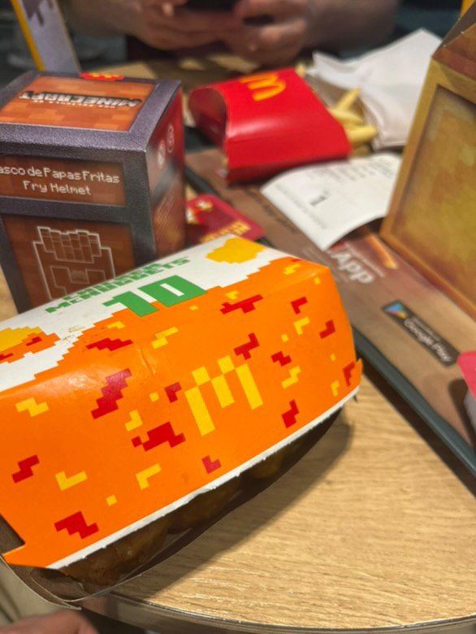
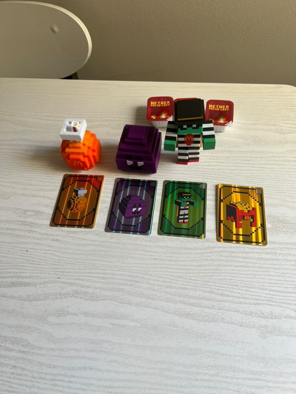
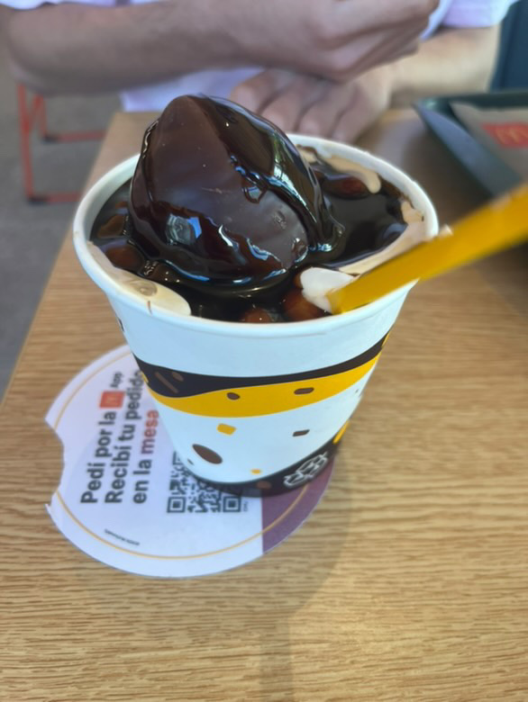
The food and the prize
We looked closer at the different mcdonalds prizes, sebs really wanted the potion prize. Sebs and I devised a plan where I would get half of the nuggets that came with the meal for free, and in exchange I would have to ask the lady to get us the specific soda potion toy that sebs wanted. And so I succesfully got Sebs his potion toy. In conclusion, I got the Zombie Hamburglar(In exchange for embarassing myself and asking for a specific toy) and the Fry Helmet(in exchange for the grimace). Overall Sebs has better cards but I payed less so it's a good deal.
Then we returned to Sebs' home and we waited a bit for my phone to charge. It was some epic waiting time. Then we decided to go to the zoo. On the way to the zoo we talked about dreams. I told sebs about a dream I had where I was in an apocaliptic world and my family was going on vacations somewhere, but I got lost. Eventually I enter this mall and apparently there is some sort of event going on where every floor of the mall is a different level. For one of the floors I needed to get a flag for some certain countrys. Suddenly I encounter Carla and Zarsky at a gift shop, they help me with the flags. Except that Zarsky is acting very suspiciously for some reason, he's got a trench coat, actually that's the only suspicious thing he is doing just wearing a trench coat. We go upstairs but everything is snow, and suddenly the whole world is covered in snow, and then i woke up. I didn't tell all of that to sebs but it was pretty much like that.
I had told sebs that apocaliptic vibes are a common thing in my dreams. Sebs told me that a common thing in his dreams was some random predator spawning out of nowhere like a jaguar, some wolves, hounds, or a bear. We theorised that perhaps it was Sebs primal instincts warning him about something, or perhaps Sebs' vast knowledge about animals came into play. Then Sebs told me that she once met a girl that claimed she would never be afraid of any animal, including lions and panthers and stuff, Sebs found that stupid. Then we started to discuss the Man vs Bear choice. Basically a bunch of women were asked if they would rather be alone in a forest with a man or with a bear. Sebs found it ridiculous that anyone would chose the bear, I argued that I would rather get killed than be a victim whatever some evil man has planned for me. However sebs made some valid points and I didn't make valid points at all.
Eventually we get to the zoo, it's a cool zoo, we saw a bunch of cool animals. The zoo tricked us multiple times with deceitful pathing. They made us walk into abandoned enclosures multiple times, making us become the animals. It's social commentary on humans. Look at all these photos
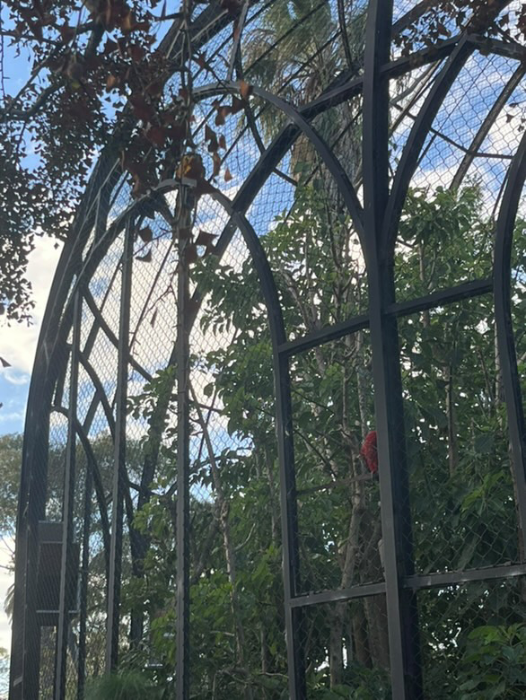
Zoozoozoozoozoozoozoozoozoozoo
Then i left, overall it was a pretty fun day.
Date:07/04/2025
Climate:Irrelevant
Location:Uruguay-Argentina
Title:Back to Argentina
So we are once again returning to Argentina, this time I don't have my own apartment, i'll be living in my grandmothers apartment. I wonder what my friends at the Italian Hospital think, might question my huge absence for the entirety of the last two weeks. In case you forgot or you just didn't read, the Francisco Boat that I typically used to travel between Uruguay and Argentina broke somehow, so now I had to wait a week for it to be fixed. But today i'm coming back. I'm staying at my grandma's house which is unfortunate because it means sometimes I might cross paths with my grandfather. I've been informed that my grandfather has cheated on my grandmother, so I don't respect him anymore, and I would like to see him as little as I possibly can.
Today I ate a pokebowl, and I tried to play minecraft with Sebs but he took 5 hours to reply to me (he said he couldn't anyways). I also informed the Table Tube Gang about the minecraft adventures of Sebs and I. It felt kind of random but I just wanted to talk to the Table Tube Gang. Lastly, I got accepted to the Maastricht Science Programme, a liberal arts and sciences programme at Maastricht University. This is good news because I have more options. I also got an email from AUC saying that my appeal was received and it was being processed.
I still haven't decided what I will do, but for now I'm going to keep going to the Italian Hospital. The Biophysics class in the Italian Hospital has been learning some new things so I have to start paying attention in that class. Unfortunately.
Today I didn't really feel that good overall. I am going to create a new thing to add to every day, a rating. Negative 10 is the worst and positive 10 is the the best, 0 is neutral.
Rating from -10 to 10: -2
Didn't do anything important and I am sad because I'm leaving Uruguay which was lots of fun :( Also the more I think about it the more I believe that the Minecraft movie is actually a good movie. The only thing I dind't like was that Henry's creativity wasn't displayed at all. It would have been cool for him to use all the items in the chests at the woodland mansion to defeat the enderman, or to have a more creative way of defeating the piglins. Still it was an entretaining movie.
Date: 08/04/2025
Climate: Cold and Sunny
Location: Argentina - My Grandmother's apartment - The Italian Hospital
Title: Expected Outcome
I woke up today, and I got ready to go to the Italian Hospital. Late as always but I got there eventually. I talked to some friends, and I explained why I've been absent lately. I chatted with Fernando and with Pili and I bought empanadas.
But then I got some news from AUC, they rejected my application. I knew this was going to happen but it's still sad to see. It would have been too good, no matter how hard a try nothing will ever go exactly as I planned. I got accepted into Groningen and Maastricht but not my top choice, AUC. In the hypthetical scenario where I got accepted to AUC, I would've immediately made the decision to study in the neatherlands, it would be epic because I'm very close to Fede, a good friend of mine, and I get to study exactly what I wanted. But that would've been too good, it would have been too easy, and life loves giving me hard choices. Now I have to pick, do I
-
Stay at the Italian
I have cool friends and honestly it's moving pretty fast. I think we are already learning new things in the biophysics class. And in the Mathematics class we are already learning calculus, at this pace I am going to be learning new stuff before the year is over, which is good. Here in the Italian I am learning Farmacy, which is exactly what I want to learn. I am also close to my friend Sebs who plans to stay in Uruguay, I don't know if he is going to be succesful at staying in Uruguay since his parents want him to leave and study at a university, but I am routing for him.
The bad parts about the Italian Hospital are that I am not really exploring a new place and hanging out at a new enviorment, it's not an exciting new experience. Argentina is definately not new to me and it's also not very interesting to me. I also have to learn in Spanish, which I am able to but I prefer learning in English.
-
Go to Groningen
I'm closer to Fede, closer to Milla, closer to any friends in Europe and Canada like Megan, Alex, and Lucio. It's also the neatherlands, an entire new experience which is pretty exciting. Also I am completely independent, my mother and my father can't reach me here at all. Also if Sebs ends up having to study at a university, (which I hope he doesn't since he doesn't want to) I will be able to see him here. I will also be capable of studying in English which I like because its my language of preference. Another advantage of Groningen is that I am studying Chemical Engineering which is a very respectable carrier
But studying chemical engineering is also a disadvantage since it's not exactly what I want to do. I wanted to do something more related to medicine like farmacy which is what i'm doing here at the Italian. I guess I'm also far from home but I don't think I mind, the only bad thing is I guess I won't see Sebs as much which sucks.
-
Going to Maastrich
The Maastricht Science Programme is still a liberal arts and sciences programme like AUC's, except that it has less courses to choose from. Still, it has several course that relate to medicine such as Molecular Toxicology, Regenerative Medicine, and Biochemistry which I do find interesting. It also has cool courses in physics and neuroscience and its overall a very epic place to become a general scientist. I think I would really find it easy to do Maastricht science programme and then do a masters in pharmacy to become a pharmacist. Maastricht also gives me the opportunity to change my direction entirely. If I start to find medicine boring I can easily change stuff to more like Material chemistry and physics.
But the MSP is not as respectable as a bachelor in chemical engineering, and it will only be of use to me in order to later do a masters degree, in my case either related to farmacy, engineering, or whatever.
I have no idea what to do, all options are equally valid to me and I have to make a decision. You couldn't just accept me AUC, could you?
Okay but on the positive side, I got accepted to Maastricht, I still have no idea where I will go but I do have a QnA with Maastrich this thursday so I will ask a lot of stuff pertaining to pharmacy there. During we learned about equilibriums and l'chateliers principle. It was pretty interesting, I liked how they inserted heat into a chemical equation as if it was an element, that's a cool way to see it.
Then I left, an when I got home I started doing nothing because I was tired. Also Fede asked me for the name of this word association game called linxicon. He succesfully connected 2 words using 1 word.
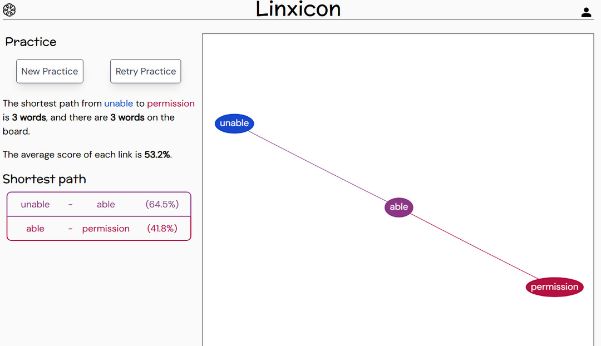
Then Megan asked for advice, which nails should she get done?
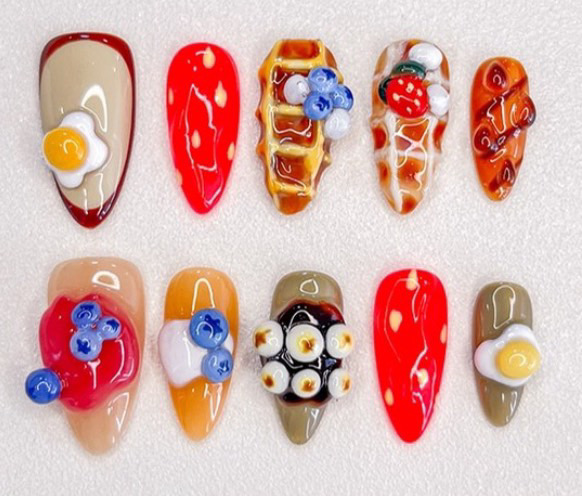
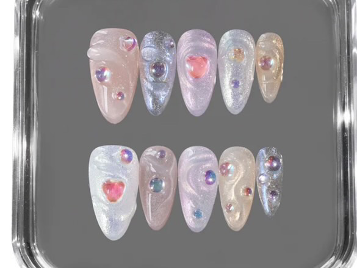
Breakfast or Whimsy
The correct answer was none of the above because they were too expensive. Milla agreed with this opinion. So Megan ended up getting some less expensive but still pretty awesome-looking nails tomorrow.
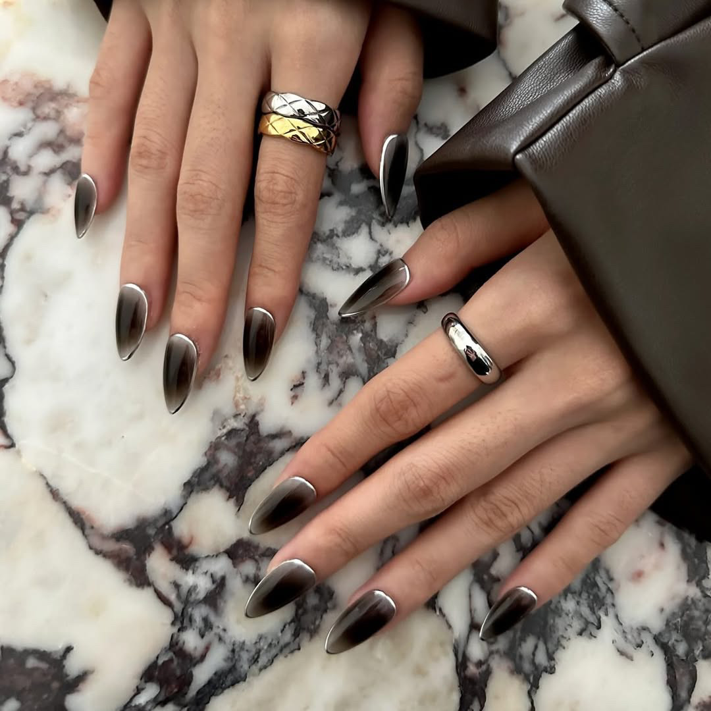
Black Nails (Cool and Cheap
Then I edited a video using this new video-editing software I found called kdnlive. I am trying to become an ultrakill youtuber. So far its going great, I haven't uploaded a single youtube video.
After that, I was unexpectedly informed that my dad was coming to my grandmothers apartment, which is where I am staying at. This means that someone has to stay to open the door when he gets here. I really wanted to fix my sleep schedule so my grandma had to stay awake, I felt bad for her.
Rating from -10 to 10: -4
Date: 09/04/2025
Climate: Warm and Windy
Location: My grandma's Apartment, Italian Hospital, Shopping
Title: Limits
Today I woke up at 4 AM and I did some stuff like take a shower, eat an alfajor, and listen to free bird by lynyrd skynyrd. Then I took the bus to the Italian Hosiptal, I think this is the first time I haven't arrived late to class. On the bus I listen to some music, and also to undertime. Pili informs the Biology groupchat that she is having some problems with the bus. Tomorrow there will be a paro of buses, but not today. Eventually her bus arrives.
At class, at first, I sit close to Fernando and his friends, but then I decide to change spots to sit closer to Pili and next to this other girl called Jazmin. Pili asks me if I know how to solve a certain biophysics homework problem but I inform her that I haven't done anything, which might have been a mistake. So I start doing biophysics until I realise that I am actually supposed to be doing math. I have skipped many classes, so I have some catching up to do. In math class, everyone has started to learn about limits. I learn that if the limit is 0/0 the way you can cancel stuff is by factoring roots using quadratic methods, and also racionalising, or whatever it is you call when you multiply by the conjugate. If the limit is infinity by infinity divide everything by the x^the highest degree. And then there was another strange rule using e.
Overall I found limits very entretaining, like puzzles, I didn't expect them to be this fun to do. Jazmin next to me on the other hand was struggling a lot, but she managed eventually. I had only done limits very briefly with Zarsky because he thought that it was essential to understand limits in order to understand derivatives. Then break came, I went to the bathroom, and everything was normal until it wasn't. A fire alarm started ringing. So I start washing my hands and I go out. The fire alarm was so loud it actually hurt. I though UAS's fire alarms were bad, but that was because I never had to suffer from whatever the Italian Hospital has going on.
Everyone is outside taling, I didn't sleep well last night so my social battery is dead, i can only talk about things that are actually interesting, and my biology group is unfortunately not interested in many things that I find interesting. So the multitude of students outside the Hospital to order a coffee at a shop.
Once everyone is back at the class, I started drinking my coffee and doing some more math when Pili asks me if I want to go get something to eat. So we went to a Cafe called Cafe Martinez. On the way I had to bring up the minecraft movie, I've gone too long without talking to anyone about this masterpiece. Unfortunately Pili has not yet been exposed to this greatness. Then we talk about youtubers, and then about games youtubers often play nowadays such as Lethal Company and the better version, REPO. Pili has been wanting to play REPO for a while now but she hasn't found the time. I tell her that i've really only played to computer games seriously in my life, Ultrakill and Minecraft.
When we get to the Cafe, they take a solid 20 minutes to give me the most average croissant ever, but at least they have a discount for Italian Hospital students. Pili and I talk about how now that we are at university, teachers don't really care if you arrive late, it's your responsability to learn. On the way back, Pili talks to me about the game Until Dawn, a choice game that she finds really cool. And also Detroit: Become Human which is a really good game too. She has played all these games but I only saw youtubers play these games.
Anyways, we get to class, and we were late but that doesn't matter. It's biophysics time. For Biophysics time I haven't really missed much. They've been looking at force problems, and honestly I am cracked at force problems. Still it's a little bit tricky. I was fine while the teacher was explaining the first problem, but by the second problem I genuinely fell asleep, I don't know what to tell you but the coffee I drank must've been some evil concoction by the store owner to sabotage my learning because it was some real nice sleep I go there. Best part was that I was literally at the front row, right in front of the professor, and he didn't care in the slightest. I love uni
So I somehow manage to clutch up and catch up. And now with a nap supporting me I start learning like there is no tomorrow. Cool physics.
On my way to the bus, I talk a little bit to Fernando who kinda makes fun of me for calling the bus a bus instead of a bondi (the argentine word for bus) and also at how I dind't do any homework at all which okay thats fair. But once I take the bus I talk to Mica there. In case I dind't mention it, Mica lives quite close to me so we take the same bus to go to the Italian Hospital and also to leave the Italian hospital, bus number 124. I am never going to see her in the mornings though because unlike me, she is quite timely and she never arrives late to class. Mica and I catch up on all the things that I've missed, apparently she had heard me explain to Fernando why I haven't come to class for the last two weeks.
She also finds it funny how I actually like math, and I explained to her that lately i've been doing so much math that I actually started liking math. It's like stockholm syndrome, I was forced to like math to survive. We also talk about how tomorrow there is no class because people are protesting, I don't really know about what, but in Argentina this happens too often, it loses its effect really.
Eventually I get home but I fall asleep and I miss a meeting I ahd with Mr Zarsky. I studied a lot of math in the past, and I had a bunch of sessions with Mr Zarsky, and I accidentally paid an extra lesson. So I decided to use this extra lesson to talk about complex numbers. But I missed the session because I fell asleep. Fortunately Zarsky was willing to re-schedule for tomorrow.
Then my prime comes to visit (my cousin) she is working for my dad. Her job is to do something with finances since that is her expertise. And her name is Morena(More for short). So me, more, and my dad go to a random natural shop to see what they have. They had maple syrup which is quite interesting.
Then we go back to my Grandmother's appartment, but it turns out my grandmother wanted ice-cream so i got to a nearby mall to get the ice-cream. When I come back, we all eat. And we actually talk about the paraguayan war and Francisco Solano Lopez's wife Elisa Lynch. A very interesting figure.
Then eventually More leaves and I go to sleep
Rating from -10 to 10: \(\lim_{x \to 2} x\)
Date:10/04/2025
Climate: I don't remember
Location: The House of my Grandmother
Title: More than expected
Today I had some online classes in which I almost didn't learn anything. Then I missed an QnA session with Maastricht because I thought it was at 19 CET but it was actually at 19 CEST because its summer there and I forgot they changed that in March.
They also gave us some talk about a big project we are going to ahve to do by the end of this quarter
Later that day, I learned how to do Math with complex numbers, it was quite interesting. I am now able to solve essentially any quadratic ever.It was a very interesting class I must say.
After that, I went to Mc Donalds where I got the final toy I needed to get, the Burger. and later at night I ate sushi with my dad while discussing where I should go to study. I also got some more Neather Lava Sauces.
Later at night I also talked to Dani. He sent me some math about finding conservative functions, and then we talked about the Hairy Ball Theorem a little bit. Then I ask Dani about the decision I have to make, where should I go to study? Do I go to Maastricht, to Groningen, or do I stay at the Italian Hospital? We talk for a while but Dani believes that Groningen is the best option.
Dani also wanted me to use ChatGPT but I don't respect that. And lastly, Dani tells me he is coming to Uruguay on may, which is great.
Rating from -10 to 10: 0
Honestly I didn't feel very productive today, but it was fun
Date: 11/04/2025
Climate: Quite hot
Location: My grandmother's apartment, Italian Hospital, some resaturant
Title: Biology sucks
Yesterday I made a mistake, I stayed two hours talking with Dani about where I should go to study. This would have been fine if not for the fact that I went to sleep at 2 am which means that I missed the first half of biology, the content half. As a consequence of this, I am ultra lost in biology.
I arrive at breaktime and I decide to get a sandwich to eat. And then I come back to do an experiment. We are going to try to identify the different stages of cell reproduction in some Onion roots. Also Pili left the group because her ovaries were killing her.
I don't usually talk to the other members of the team except pili, so today I did that and I found out that Rosario doesn't like mint ice-cream so I don't respect her that much. Mili on the other hand is very respectable, she likes chocolate mint ice-cream.
Okay but when it comes to the actual experiment, we messed everything up. We did every single step wrong.
- When cutting the thin part of the root, the root was moved around too much causing the whole slide to be wet, this made the dye spread around the entire slide more.
- Then Mili did a disaster cutting up the slice, when we looked it at the microscope, we only saw vegetal tissue and random nuclei all around because Mili absolutely destroyed all cells.
- Finally, Rosario didn't put the cover slip correctly, which caused several bubbles.
Overall we did a horrendous job and we found no stages of mitosis (we didn't even find a full cell. The other groups did however find some interesting stuff, a group even found a heart-shaped anaphase.
Then I ate my sandwich and I took the bus. I talked to Mica about instruments, art, and humanities. Apparently she isn't that interested in the humanities, she doesn't like reading. She was quite surprised at how uncultured I am which makes sense I'm only legally Argentinian. Also, she apparently took dance classes and went to a school that focused on sciences and english. She also asked about my family and I asked about hers, she has two younger sisters. These talks with Mica are quite fun
Later that day, Lucas calls me, and we catch up, he tells me stuff about life. Lucas is the best person ever. He also informs me that he is going to be coming to Uruguay in may which is so amazing to hear.
Then I don't remember what I did, but eventually I fell asleep
Rating from -10 to 10: 3
Date: 12/04/2025
Climate: Quite hot
Location: My grandmother's apartment, Paru resaturant
Title: Craft Mine is awesome
Today I woke up
Then I sent some emails I needed to send, I ate some yogurt, not very eventful I must say. I informed Sebs about the fact that Dani and Lucas are coming to Uruguay in may and he is very excited about this.
I also play some CraftMine (a special MineCraft version where you can Craft Mines) with Ethan and we had quite a lot of fun, but eventually we got stuck on a level where we couldn't find an exit out of a mine. Every mine is actually a world and you can get more powers by getting experience in these mines.
At night I ate sushi with my dad and my grandma.
Rating from -10 to 10: 1.4
Slightly better than average
Date: 13/04/2025
Climate: Pretty normal
Location: My grandmother's apartment, some restaurant
Title: Connection to others
Today I woke up and I immediately decided to help Lucas with chemistry, and that I did. We did some chemistry, learning about coligative properties, and then some chemical kinetics. We did this for like 3 hours until Lucas was too tired. We had a lot of fun learning and stuff. Even Bruno joined at some point and he started making some really rouph animations of some interesting equations. Bruno has been making these with some friends in order to gain money. But then Bruno left because it must have been pretty boring being there while Lucas and I were locked in.
I also exchanged some messages with Dani talking about how sometimes in life you gotta pick an extreme but sometimes staying in a gray area is best.
Later that day, I got in a call with Ethan who helped get ableton. While this was happening, Sebs asked me if I wanted to play minecraft, I said yes, and I told him if he wanted to play with me and Ethan. He said maybe and he never joined. Then Ethan and I started playing some more CraftMine, this time the Mines we got were quite unlucky (mines are worlds basically) however we already knew how everything worked so we still made good progress.
Im going to explain what happened in every mine, but before that, let me explain a little more about this update. Basically, every April fools, Mojang releases a minecraft update involves a very convoluted or bizarre feature. Last time they made books you could throw into portals to make infinite new worlds. This time around, Mojang made it so that you always spawn in this sort base in-between worlds, and in the center of this base there is a Mine Crafter (a World Crafter). You can put different items into this Mine Crafter to create different worlds or "mines" as the game calls them. In this mines you can find new objects to create new mines and find new objects and create new mines and so on.
But the most interesting part of this update in my opinion is that at first, they take away your ability to craft, to hold things, and even to use a shield. You have to unlock all of those abilities yourself by gaining experience. And once you get enouph experience, you can even unlock some abilities that you wouldn't normally have in normal minecraft.
Finally, if both Ethan and I die, the mine is "lost", meaning we get nothing from it. If only one of us dies the other can still "save" the mine by going to a mine exit and leaving. When you "win" a mine, you get a lot of experience corresponding to the items you were holding when you left the mine, you also get the mine memory in your hand which allows you to visit the memory of the mine, but you can't edit the mine so you can never really go back.
The Mines
Mine 1We spawned somewhere pretty good, but then I died of fall damage. Ethan then went to the mine to save this mine and also so that I could play.
Mine 2We couldn't really find food and it was hard to find stone. But we managed eventually. This mine had a deep dark biome. Experience in this update can grant you interesting abilities. So Ethan and I went to the deep dark to get experience. Unfortunately, I couldn't see anything, so I tried using lava as a light source but then I burned myself with it. Ethan returned to the base in-between mines to save the mine.
Mine 3This world sucked, it was a cave world with no trees. Ethan died immediately, but once he died he became a spectator, meaning he can see through walls. This means he was capable of locating a mine exit and leading me to it. There were a lot of skeletons and spiders, and the mine exit was deep underwater meaning that I almost drowned. But with half a heart, I manage to exit the mine and thus save it.
Mine 4This mine had the deep dark biome in the surface, which was great because the deep dark is great for experience. We started gathering experience, but we then noticed that trees were really scarce. Not only that, but we also noticed that even though cows were an ingredient for this world, there were no cows to be seen. Also, I had thought that wardens (the deep dark's invencible and highly aggressive monster) couldn't spawn with high light levels, but apparently mojang changed this in the Craft Mine update, which was a huge surprise for Ethan and I.
I started builgin a base, and Ethan went in search for cows, and suddenly... Lupi joins the call. It was really nice to hear from Lupi after such a long time. Lupi said that he hoped on discord hoping to play something and he saw us on a call. Unfortunately the session was concluding just now since both Ethan and I had to go eat. Lupi asked me how my studies were and I told him that I was studying Farmacy at the Hospital Italiano de Buenos Aires, he was surprised that I stayed in Argentina and I told him that now I needed to decide weather to go to the Neatherlands and study chemical engineering or stay here. Lupi gave me some information to consider, firstly, he has heard from many people that engineering has a loooooooooooooooooooooooooooooooooooooooooot of math and that if I wasn't interested in doing that much math, I shouldn't do anything close to engineering. He also told me that the first year in which his sister went to Europe, it was really hard for her to adjust, it was a huge culture shock and she ended up going to study at Argentina. Finally, I also remember him saying that from his experience, the IB covered a lot of things he saw on college, but in college he always went deeper into the topics which aligns with what i've been seeing in the Italian Hospital. This is some valuable information, thanks Lupi.
Then Ethan talked about what he was doing and all, and then unfortunately my father barged in to the room cause apparently he called me like 5 times telling me to go outside se we could go eat dinner. So I said by to Lupi and Ethan and I left. My dad an I ate dinner and he told me that I should start concluding my decisions. Neatherlands or Argentina, I have no clue, all the options are equally valid. I am very lost.
Then I came back, and eventually I went to sleep.
Rating from -10 to 10: 6.3
Today was actually so great. I talked to many of my friends
- I studied with Lucas
- I saw Bruno's animations
- I texted Dani about extremes and gray areas
- I played minecraft and got ableton with Ethan
- Sebs asked me to play minecraft (he didn't really follow up on that but still)
- And I had a chat, even though brief, with Lupi whom I hadn't talked to in a long while.
Very epic
Date: 14/04/2025
Climate: Normal
Location: The Apartment of my grandmother
Title: Online Classes, the Lagrange-Euler Equation, and Sheldon Cooper
Today, went to some online classes and I tried learning stuff. However I slept for most of the biophysics class because I was simply too tired. I did pay attention in math though and I even asked some questions.
Then I decided to do some of the Math problems. But I didn't understand something about limits so I went to youtube. Then I saw a veritasium video which lead me to watch 3 other veritasium videos all related to something called the principle of least action. A principle created by physicist Pierre Louis Moreau de Maupertuis but he wasn't taken seriously because he didn't have rigor in his calculations and everyone criticised him. But turns out he was right, Leonhard Euler and Joseph-Louis Lagrange teamed up to make out of this equation the most powerful and dynamic thing ever. Capable of deriving any physics equation from it.
I learned about that all day. And as an extention I learned some more properties about derivatives and integrals that were essential to learning about the principle of least action.
Later that day I talked to Dani, he asked me what I thought about Sheldon cooper. I told him I thought he was annoying and he said that he thought Sheldon cooper would be me if I had his ego. Then he asked me what things he should avoid doing to seem less like sheldon cooper, he said that sometimes he felt like he acted a little bit like him. Then I sent him this
I found it great that Dani himself realised that he might have some tendencies that are seen as annoying.
Rating from -10 to 10: 0
Date: 15/04/2025
Climate: Normal but hot in buses
Location: The apartment of my grandmother - Italian Hospital - The streets
Title: Pretty bad day
I woke up at 4 AM and I just stared at the ceiling for 2 hours, at least I'll be early to school this time. I eat some breakfast, I get to the bus, and I start making my way to the Italian Hospital. Once I get there, I wait for the class to start, not doing much. This lesson we learned about Chemical Kinetics, and everything got so much harder now. They started doing some derivatives, some integrals, different graphs for different orders of reaction, I was quite lost. I tried to understand an integral and I believe that I succesfully did, which was surprising to me.
Then I went back home, and then I went to pick up a credit card that my father directed to this Galicia Mas bank, but the card didn't get there. Then I have to go to the Italian Hospital because my dad found this cool group in the Italian Hospital that has been researching inflamatory diseases like Crohns (I have crohns by the way) so he signed me up to go today. So I go there alone since my father couldn't go.
I try to pay but I can't because my they don't let me use my father's card, but I convince them. Then I go to see the doctors, they ask me some questions, tell me what I need to do to start getting monitored by them, and then I leave with the papers for the medical examinations I have to go through. Then i go to a cafe to eat a sandwich, the sandwich wasn't good. Then I decide to feed one of the pidgeons there, the wind decides to blow my medical papers to the floor, and a pidgeon decides to shit on them. Stupid ass pidgeons. I want to take a second and ask you to think how would you react if this series of events occurred to you
So I go the bathroom to thoroughly wash the pidgeon waste out of my papers, and somehow I manage to. Then I went to the bus, back to my grandmother's apartment. Marta my grandmother tells me that Martina's(my aunt) dog died after 15 years and she was really sad. This is quite upsetting because personally I have known that dog as far as I can remember.
Then I decide to go to work on some Italian homework. I text Sebs and turns out that he is willing to sacrifice an hour of his precious time to play minecraft bedrock with me. SO we start playing. I die many times because I am not used to minecraft bedrock. I then finally get to his house after a lot of dying and we decide to speedrun the game. I went to find Iron but instead I found an underwater cave which is kinda useless, except there was iron there. So we drown a bunch but eventually we find iron. Then we found a gigantic cave below us and I decided to try to do a water bucket clutch but I failed. Then we spend the next 30 minutes trying to do a water bucket clutch.
WATER BUCKET, RELEASE!!!
After that I ate some empanadas. My grandfather and my aunt came. I don't like my grandfather because he has done some bad actions in the past, and my aunt was just really sad. After that I go to sleep.
Rating from -10 to 10:0
Even though it was a bad day, I was on an optimistic mood, so it canceled out
Date: 16/04/2025
Climate: Hot
Location: My Grandma's house - Italian Hospital - Boat - Uruguay, home
Title: Semana Santa Begins
So today I woke up a few times and I fell asleep some other times. Overall I slept pretty well somehow. Specially because today's class started at 9 as opposed to 8. Today I decided to sit down next to Fernando Lemos and also Mica. But I said hi to her and she didn't notice so I just didn't talk to her for the rest of the lesson because I was embarassed. We saw derivatives in math and you just know how much I love derivatives. It was really nice because I got to help him which was good. There was an intersting derivative where I needed to use the chain rule twice and I could succesfully explain that to him.
I also helped Pili understand the power rule (I'm kinda scared for her). During break Pili got a coffee and I accompanied her while she talked to me about coffee.
Then Biophysics started and I actually did pretty well, except we did mecanics problems instead of hydro static problems which was what we were supposed to do. I did well on the mechanics problems.
When the class finisehd, I went towards the bus stop and I encountered Nacho along with someone I don't know. I talked to them a little, missing the bus as a consequence. And then they left. But this actually turned out to be a good thing because Mica arrived and we took the bus together while takling about the class. Apparently she was really lost with Math and Biophysics, I told her that she could ask me for help if she didn't understand anything in particular. Then I we talked about our carriers, it turns out she wanted to do something medicine related, but she didn't want to spend 10 years studying so she did pharmacy. I explained to her that I spent a lot of time thinking until I decided to go for something pharmacy related because I thought it was the best choice.
We also talked about the weather, she is from Ushuaya (litterally the bottom of the conventional map of the world) and she likes the cold more than the heat, a trait she shares with me. All my friends like the heat more than the cold so this was a nice surprise.
Eventually I got to my apartment, then we took a taxi to the buquebus but the taxi was kinda lost so we got off and walked the rest of the way towards buquebus. And we took the boat back to Uruguay.
Rating from -10 to 10:
Date: 17/04/2025
Climate: Unkown
Location: Uruguay House
Title: Not much
Today the most exciting thing that happened is we played Truco at night, I lost :(
Rating from -10 to 10:
Date: 18/04/2025
Climate: Perfect
Location: Ciudad Vieja
Title: Eating
We went to ciudad vieja to eat some really good paella, and then we walked around. After that we went to crepes to eat some sweet crepes. I got a oreo crepe which was really good. I couldn't hang out with sebs but tomorrow I surely will.
Rating from -10 to 10:
Date: 19/04/2025
Climate: Perfect once again
Location: My House - McDonalds - Shopping - Cafe - Sushi Restaurant - The Burrow - Rudy - Gas Station Church
Title: The day before easter
I got out of my room, my father and I are planning to go to see if I can get my cedula (uruguayan ID) done since its about to expire. So we go there, on the way there a homeless guitarist plays the electric guitar in the streets, pretty cool. Anyways our mission failed and we have to come next monday to schedule it for next - next monday.
Once I get back home, I fall asleep for a big while. When I wake up me and my sister decide to go to Mc Donalds to get the Neather Lava sauce combo once again. However Mc Donalds has unfortunately ran out of this combo. This is some devastating news. I also decided to go get my bother some banana bread since she wanted some, and on the way we got food for Capu(my dog).
Upon arriving, I see the messages that Sebs and Ethan have sent me. Ethan had a headache, now if you haven't read the chronicle, then you wouldn't know that my mother's mother bestowed upon me miraculous healing powers, capable of healing headaches with the use of oil, water, and knowledge. I have tested this on my mother, on my sister, on a random person my mother knows, and on Milla, and so far it has worked 100% of the time.
Sebs also asked me when he wanted to hang out today. I didn't want to hang out today, but I made an effort to make it happen anyways. I told him that at 20:00 we were haging out, we meet at stella maris. We both arrived 15-10 minutes late. I did some very bad parralel parking.
Honestly I am very glad I decided to come, it was a good time. Sebs first went to eat a pokebowl. While this was happening Dani sent Sebas a picture of an unusually large banana along with the text "What would you do if you woke up and your dih was this big"... Dani is a very interesting being if you couldn't tell. Then we talk about some whatsapp message that Dani sent me about how if I was a natural phenomena I would be a geyser because I sneeze a lot (allergies) Sebs and I started assigning natural phenomena to our friends. Lupi is a typhoon or a whirlpool, Chad is a lightning, Sebs is a heatwave, Eitoku is an aurora, and we picked a special one for Dani. See Dani was making fun of me for my sneezes so I told him that Dani he was a dust devil. Dust devils are "tornadoes if they were lost and confused" or something like that is what sebs said.
Dani started questioning but I didn't want to be mean so I didn't elaborate that much. Then I explained to Sebs some details of my current decision situation, should I stay or should I go. Sebs at first says that I should totally stay because the Italian Hospital has what I actually want to study, pharmacy. I tell him that Groningen is overall more prestigeous and all but he says that if I truly like more pharmacy then I should do that, even if its in spanish. But then I talk to him a little more, I mention that the title of "pharmacist" from the Italian Hospital only applies in Argentina unfortunately. Upon hearing this sebs recalculates and tells me that I should go to Groningen because it's a new experience and it's overall the more serendipitous option.
Then I decide to go get some ice-cream, on the way there we talked about Sebs' masterplan to become independent before june. It's really possible that he might not make it, but at least he will be assured that he did everything in his power. Also apparently Sebs and his dad had a fight recently because Sebs had a meeting and he didn't tell his dad. Sebs establishes that every time he tells his dad anything, his dad lauphs at him saying it will amount to nothing. I also tell Sebs that I have a secret of my own now, I won't tell the secret here just in case Sebs reads this for the first time in his life. But you will soon find out, maybe.
We get to the burrow ice-cream, it's the best ice-cream place in Uruguay in case you were wondering. But then I realize that I don't actually want ice-cream. Sebs and I take a brief visit to the burrow small shop. It has a lot of interesting things like bags, coated ceramic pots, plants, bread bags, necklaces of stones, and much more. Sebs says that he is going to buy one of these things for his girlfriend. Then I decide that I want to go to Rudy to get a salchichon de chocolate, and it was so worth it. I ate it at the Gas station next to the stella maris church.
Then I took Sebs home, we talked about how great it was that Mono(Lucas) and Dani were coming here in may. I told him that an epic group would me Lucas, me, Sebs, and Mono. That was a group that hanged out quite often near the end of the chronicle and it was really fun. Then Sebs said that the best group ever was Chad, Lupi, and Alex. Kind of random to say that, but sebs says that they are a phenomena because they are all good at everything. I also mention that Sebs and I are a pretty good duo but Sebs disagrees :(
I disagree with his disagreement though, out of all duo's we are one of the best i'd say. Sebs some more about Lupi, Chad, and Alex. Apparently they have a whole group and they are often on a call playing clash royale, which reminds me of the time that Lupi joined discord while Ethan and I were playing craftmine. That must have meant that Alex and Chad weren't available at that time.
Then we pass by a spot were Mr Turner once hosted an art exhibition, it was really close to Sebs' home. Sebs explains how he doesn't like his past self who always said no to coming to juntadas and all sorts of stuff. For some reason he used to really hate hanging out with the class in general.
We say bye to each other, tomorrow its easter so I will probably not see Sebs, however we could probably play minecraft for a short while. Also, I have to inform the Table Tube Gang about my current situation so they can assist my decision.
Then I went to sleep
But I couldn't fall asleep, so I started thinking, and thinking, and I came up with an idea. If I could somehow change my University of Groningen carrier from chemical engineering to chemistry,
Rating from -10 to 10: 5
Date: 20/04/2025
Climate: Perfect, three days in a row
Location: My house in uruguay
Title: Easter
Today is easter, me and my family did an asado, a really small egg hunt, and we also ate paella at night. Overall I really liked today.
I also played some minecraft with Ethan, unfortunately Sebs couldn't join us. Here is some minecraft lore... I mean craftmine
CraftMine
Remember that epic place we had found with a ton of experience? due to it being a deep dark biome? Ethan died so unfortunately I had to return in order to save the mine, truly unfortunate
After that we went to a mine that was a cave and a boss level mine where we needed to defeat some skeletons. We failed that mine
Then we went to this mine that had a lot of mushrooms. This was epic because I have a lot of knowledge about mushrooms, we stayed in this mine gathering some experience for quite a while. Ethan told me about this game he has been obsessing about. The Coffin of Andy and Leyley... Now I've heard of this game before, and I watched some gameplay of someone once, and perhaps a couple summaries. But I pretended to know nothing about it just to see where this was going.
It's a really strange game often hated because of its incestuous tones. It's often seen as just really emo, but also really disgusting too. However Ethan believes that it is actually a very meaningfull story that discusses the global issue of toxic codependance and how it can be created. And I actually agree. When I first saw this game I actually did think that it was a very conspicuous way to explain how bad parenting and (more interestingly in my opinion) a cold and cruel society can lead to horrible things like this happening. The explanation behind the incest would be that in this cruel world Ashley could only count on Andrew to help her, and similarly with Andrew. This means that they grew up to be codependent, and both of them would now do absolutely anything to keep the other by their side, even if its morally wrong.
Here are all my thoughtsSaying that the siblings are a product of only their enviorment could excuse all the horrible things they've done. In my opinion there is always a choice to either be good (help others) or be bad(the opposite) and even as children Ashley was always particularly bad, and although Andy had a stronger moral compass, it wasn't that much stronger because Ashley always convinced her to do stuff like killing and burying people. Sure the parents neglect could have hypothetically caused Ashley to become codependent of Andrew at a young age, but the flashback barely shows the parent. This can only mean that the game is clearly stating that Ashley was orn a bad person, and a bad person in a worst circumstance simply creates a monster of a human being. So I am glad that the author very clearly tries to establish that Ashley is a horrible human before her unjustifiable behaviour.
Also there is a cool play with the names. Andrew's childhood name is Andy, and Ashley is Leyley. Ashley constantly insists on using childhood names, but Andrew wants to get away from that because in their childhood Ashley forced Andrew to do some suspicious stuff, like killing people. But Ashley clearly thinks that by getting away from all this horrible stuff, she might lose her connection to Andrew. There is definately some part of Andrew that wants Ashley by his side, but there is also another part (very weak) that cares about what is morally correct, this part of him dies as the story progresses.
Pretty interesting stuff, Ethan also had some thoughts, but I also shared stuff I dind't like, specially the lack of juxtaposition. Normally in these stories there should be at least one good person, but here there seems to be a lack of someone virtuous. I guess Andrew's girlfriend from the past is a good candidate, however she doesn't appear in the present like ever. Ethan informs me that in the newest chapter (which I haven't seen) she does. Perhaps that will be better
Then we eventually realize that this world sucks and we leave with a ton of experience. I use this experience to get a little something. An upgrade called "you are the campfire: do I need to say it again? you are the campfire". As you can tell the description wasn't very helpful, but I was so interested because I love campfires. I got fire aspect punch, I can fire anything with my hands, and I can cooke meat with my hands. Then Ethan had to leave.
I started another world by my own, the 9nth world, it makes sense because nine is my favourite number. Then I went to eat paella with my family. The end, of the day of course.
Also, I was nominated for the water bucket challenge and I decided to do it and nominate Fede. Additionally fede told us he got a job which was quite epic. i also nominated alex, Lupi, and Lucio.
Rating from -10 to 10: 3
Date: 21/04/2025
Climate: Cool
Location: Going to Argentina
Title: Going to Argentina
Before I go to Argentina again, I take out a turn to do my cedula, the nearest available time is on the 30th of may so that's quite epic. I also change a shirt that my mother bought me for a bigger size because it was too small. Eventually I leave Uruguay. Not much to say except I forgot my potions, my charger, and last but not least, my keys. I ahd to wake up my grandmother for her to open me up which she didn't appreciate.
The water bucket release challenge is rising in popularity. Only Lucio did it, he is cool. But Alex, Fede, and Lupi refused. At least Alex acknowledge me though.
Rating from -10 to 10: 0
Date: 22/04/2025
Climate: Hot because Argentina sucks
Location: Argentina
Title: Back at it again
So we are back in Argentina, luckily there is a computer charger here, because I forgot mine. However the cable doesn't work, I must fix that today. I also have an QnA session with Groningen today. But it was useless because there were too many people, they barely ever replied to our text messages. It was like one big messy groupchat. If I could go to the past, I would have chosen to go to the Italian Hospital instead of staying for this dumb interview.
I spent the rest of the day slowly realising that I was going to have to do the OMPT-D in order to satisfy the conditions to go to Groningen. Remember when I said there was no more math? I lied, I once again have a lot of math to do.
I also applied for Bachelor of Chemistry, that's quite good. I've been rewatching some past technoblade livestreams, you can tell he is an english major because all his jokes are so good. How unfortunate his passing was.
Today was actually quite productive, I did get the cable I needed to charge my computer. I also told my grandmother to only speak to me in french so that I can learn more. Also for Semana santa sofe went to Argentina and took some awesome pictures. I jsut thought that you might wanna know that.
Rating from -10 to 10: 2
Felt good to be productive
I've got so much math to do :( once again
Date: 24/04/2005
Climate: Hot
Location: My grandmothers apartment, Italian Hospital
Title: Biophysics is hard
I learned nothing in Math today, we merely went over stuff that I already knew. I am excited to ask about differentials in integrals because its still unclear to me how exactly they work.
In biophysics we had some huge infodump about pressure of water in pipes. It was quite a lot of stuff. Throughout the entirety of todays class, Fernando Lemos kept talking to me. He is very cultured and he knows alot about history and stuff, he is a reference machine, always referencing stuff. I feel like that is a very argentinian thing to do. But Fernando takes it to the next level. Also I got invited to study with them on tuesday.
Honestly I disklike some of the jokes that they do. I can't tell if its wrong or not but I don't like it. However I never fake-lauph at anything I don't find funny, so eventually they'll stop doing those jokes to me, or they'll stop being my friend :) Nah but I don't think that'll happen, they seem like good individuals.
I also ate an egg bagel and a mochachino. Cool stuff.
On the way back, I realised that my Sube card didn't have any saldo on it, luckily a girl getting on the bus decided to pay the fare for me. I was delighted by the kindness of the people in Argentina, willing to pay my trip. Mica is not here today for some reason so instead of talking to her I listen to music. Then the bus decides to not stop at the bus station so I have to walk a ton to get to my grandma's apartment.
Once I get there, I go to buy empanadas for the night. Once I return, I start downloading all my VST's for ableton. I try them out and they work.
At night I eat empanadas, and also I accidentally open tiktok and I see chiara on my feed. And that reminds me of the fact that tiktok exists. Now let me explain to you my full relationship with tiktok. I never had one, I didn't like it because I knew it spied on all of us and stuff. However, once posted 2 really funny videos on that platform.
Chad fell for it twice LMAO!!!!! They did our boy dirty
So I downloaded tiktok for the mere purpose of downloading these two videos from Chiara's profile. And I never opened the app again until today. I checked out Chiara's account, and also Martina's account and I realise that now that China became the good guys and the US became the bad guys, I shoudl probably use tiktok instead of instagram. So in conclusion I might give tik tok a try. I might create myself an account with my actual name in it and see if its cool. People post more on tik tok so that's a plus aswell. It's not always legendary videos like chads unfortunately :(
Anyways, I go to sleep
Rating from -10 to 10: 0.5
Close to neutral but slightly better
Date: 24/04/2025
Climate: Hot
Location: Grandma apartment, Italian Hospital
Title: Trouble detected
Today I arrived ultralate at the hospital because yesterday I decided not to sleep, but that's besides the point. Mica and Pili aren't here, those are my two only friends apart from Fernando and his gang, so I hang out with them. Fernando informs me about a parcial that we have tomorrow, these news really hurt.
We also did a lab and stuff, I didn't understand much, it all goes so fast. Am I supposed to be doing the homework they are giving out??? It's way too much, like I know how to do it but its too much.
Later that day I eat empanadas, I was going to play minecraft with sebs but unfortunately I have to study biology. I attended a total of two bio classes, so things aren't looking too good.
Damn it, I also might have to do more work??? And I have to decide weather I got to Uruguay this weekend??? and I might have to start doing math again??? I have to somehow re-charge my bus card??? I don't have anymore data on my phone??? I am so cooked, guys please have mercy on me.
The only good thing to come out of this is that I discovered sympathy for the devil by the rolling stones and its one of the best songs ever. Also today Megan posted some really awesome pictures of her in a staircase. She said there are more on they way, looking forward to them. I think that Megan's pictures are the most interesting thing on my instagram right now, apart from the whole Nido side plot that I get pieces of. Nido is like the school I went to, but from Chile, and the posts that the people from Nido publish are fun.
Yesterday it was pancito's birthday. And I am not going to tell you who that is, but today she did the USC water bucket challenge and she nominated people
Final one, I, got conditionally accepted to Bachelors in Chemistry. I've got so much math to do. Again, why groningen. Fede said they were evil and whatever fede says is true.
Rating from -10 to 10: -3
Today I got kind of stressed but maybe it'll be okay
Date: 25/04/2025
Climate: irrelevant
Location: Apartment of my grandmother
Title: nothing much
I played minecraft with Sebs who refuses to join my discord server for some reason. Lucas joined our call and we talked a bunch. Sebs really did not want to play minecraft today.
Rating from -10 to 10:
Date: 26/04/2025
Climate: Don't care
Location: The Apartment of my grandmother
Title: Ultrakill part 3
Today I recorded an Ultrakill video that I am planning to upload some day. Also, I ate a shwarma. Ethan studies for a finance test, and my dad does buisness with Sebs.
Rating from -10 to 10:
Date: 27/04/2025
Climate: Quite hot
Location: My grandmothers apartment
Title: Minecraft with sebs part 3
So today i edited my ultrakill video. And by editing I meant I added subtitles to the parts that were unclear. I need start speaking better english.
My aunt came too, and my grandfather aswell.
Near the night I spoke to Fede and to Sebs. Fede told us all about kings day while sebs and I played minecraft. I tol sebs about Ethan's new obsession which he found pretty funny. I also cleared out that even tho sebs doesn't really like minecraft, he is fine playing it. Like he is bored, but what else is he gonna do.
I also bought a ticket for the after prom of UAS 2025. Yeaaaaahhhh, good luck with the IB's underclassmen!!!!.
I have a math test tomorrow but I ain't scared, I know math
Rating from -10 to 10:
Date: 28/04/2024
Climate:
Location: The House of my grandmother
Title: I bought some deodorant
Today I had online classes
I also bought this really good deodorant, I had to go to several pharmacies to find a non anti-transpiration deodorant. But I did it. And it smells really good.
Rating from -10 to 10: 1
Good deodorant
Date: 29
Climate: Normal
Location: Apartment - Italian Hospital
Title: Buffer
I took a bus, and listened to the Cancer moves playlist, the best playlist i have, today is going to be a great day. I also texted alex to make this day even greater.
We learned about buffers today. It was real interesting.
During the break, I needed a spoon to eat my yogurt, but I didn't find any spoons in stores nearby. Fernando tried to create an improvised spoon out of the aluminum paper. Stupid ass idea that was never going to work I don't know why he even did that but I found it really funny. I eventually found a store that had plastic spoons so I could eat my yogurt.
In the Bus, Mica decided to sit someplace else so we couldn't talk. I listened to my Cancer moves playlist. The best playlist ever, with the recent addition of Sympathy for the Devil by the rolling stones.
I ate ravioles with bolognese at Morning Coffee, which is a restaurant. Truth is a was pretty down because I had to turn down a juntada to finish some chemistry lab stuff. They give us too many labs, its confusing, I don't know what to do. I am just really thankful that I have a nice biology group. They are saving me. Also I was expecting to be able to talk to Mica today but that didn't happen :( The ravioles did improve my mood though, they are delicious. I love daily coffee.
Getting into my grandmothers apartment, I practice some billar japones tactics, you wouldn't get it. I also try to do the chemistry but I am actually so feckin lost I am so lost I ahve no idea what to do.
Fernando calls me to study some niceeeeeeeeeeeeeeeeeeeeeeeee math. God I love math, if it wasn't for math I would actually kill myself. We do math for 3 hours i think.
Then I respond to alex. Alex has had an injury from skeeing which is truly unfortunate because he is nothing but a great man. I on the contrary am not that great cause I forgot about this and I nominated him for the water bucket challenge anyways. So i apologise. He also told me that he was luckily recovering even though he can't walk yet. Finally, he is going to thailand on summer vacations.
So I tell him about my current situation, the fact that I ahve to do the OMPT-D which according to the University of Groningen, is the same level of math than Math AA HL. It really isn't in my opinion but it's definately going to be harder than the OMPT-B. Alex tells me that I got this. He's right I do. Thanks alex
I also chat with Pili who tells me about her problems with anxiety and how her anti-anxiety pills give her nightmares and nausea. I thank god for not giving me anxiety problems, he did give me crohns though so I don't thank him that much.
Then we talk a little bit about stuff. She keeps telling me how tired she is and I tell her that according to psychological studies, its better to sleep well than to study more. My mother says this is true (she is a psychologist)
A good thing is that I ate empanadas, I like those.
what a disappointing day to be honest. Finally, last night I had a dream and in the middle of the night I decided to write it down and tell sebs about it. Sebs proceeds to insist that I tell him the dream so I sent some notes. Then he complains about having to read so I send him an audio through the voiceBags voice capturer (a recorder) but I do it in the lowest quality possible, enjoy.
My Cool Dream (Audio version)
Rating from -10 to 10: -3
I had high expectations for today, it left much to wish
Date: 30/04/2025
Climate: Normal
Location: Aparmtent - Italian Hospital - Park Workout thing
Title: Mathematical
We have a math test today. I wake up, and I go to my bus, everything is going good so far.
I arrive at the Italian Hospital, listening to breezeblocks, really good song. I cross paths with Martina in the elevator and she is kind of nerveous for the test. My math level is higher than everyone else's here so I'm not really that worried. What I am worried about is the OMPT-D, but that's a story for another day.
Anyways, I ask some final questions about limits, but it turns out that we never even used limits so no one cares. Maybe they did use limits but I didn't use them at all. Yesterday Fernando told me that I should justify many things through the use of limits but I didn't justify shit so I hope they only look at my answers.
So the first question was a cubic, I love cubics, they are simple and cool. I found the domain, the range, the positives, the negaatives, the roots, all fine and dandy. But then the next question gave us a second function g(x) and we needed to say if the composite functions f(g(x)) and g(f(x)) were possible. Now I don't remember how to proof if a composite function is possible or not. So I just put them together and in hope that was enouph proof(it probably wasn't
Then the second question asked us to analyse this function's asymptotes and discontinuities. It had a removable discontinuity but I couldn't find a way to remove it. I ended up using l'hopital to probe that the function approached 8, however I couldn't remove the discontinuity. Turns out you needed to rationalise, and then expand a difference of squares at the top, and then factor out a two at the bottom to make two terms cancel out. Unfortunately I didn't see that. I probably didn't get those points there, shame about that. I guess
Then the third question asked me to find the tangent line to a function. It was pretty cool and I did it all succesfully, not much to say. The only thing is that they asked me to find the coeficient of increment, or whatever. I heard some people say that's just the derivative but I don't really know. I hope it was just the derivative because I definately did that.
Finally the last question was calculating a derivative by definition of a function x^3/3-2x+5 It was really long but that one I am sure I got 100% right. I had a problem because I had accidentally turned one - into a +, but I eventually found it and fixed it.
Overall I probably passed, but I did do a lot of dumb mistakes, that's usually how my tests go. Honestly I hope I got a good score because if you get good scores in tests you get the chance to skip the final exam. Except in Chemistry.
Everyone else seems to have done way worse than me, like way worse. Either that or I believe I did better than what I actually did. Pili and the rest of my biology group used quite a vulgar description of how the exam treated them. This is a common thing to do in Argentina. Pili got destroyed so hard by the exam she just left and went back to her apartment. Yesterday I told her to go to sleep instead of studying, I blame myself for her downfall.
Rosario talks with the other girl that I don't remember the name of about how hard the exam was.
Mica talks with her friend group about how hard the exam was
Everyone is complaining about the exam
And I am deciphiring new ways to solve cubics that have real solutions. Really cool stuff.
Eventually biophysics is about to start. Fernando explains to me how to solve the second problem, all that rationalising and expanding and then factorising stuff that I didn't do.
Then biophysics starts and I actually try to lock in because i've never seen this topic before and it actually seems pretty hard. I hate how they never use SI units, these bastards. Fernando asks about some unit which is like pounds per meter squared or something. But he says it in english, so everyone kinda lauph at him for speaking english.
I've been really containing myself from talking spanglish or saying any word in english because people will immediately make fun of me for it. There is a term when you are humbled in spanish, "cuando te descansan" means "when you are humbled" or something similar. So they descansated Fernando.
So I do understand quite a bit about physics but I don't do any work because I dind't know enouph to actually do it. i need to study, yeeeyeyeyeyeyeye I love studiyng.
Then, the class ends, and we all go home. On the way there I talk to this guy, i forgot his name which is reaaaaaally unfortuante because he seems like a good man that has taken this class in the past, he's quite knowledgable.
Then on the way there Mica talks about the test, apparently she did horribly too, that is really unfortunate. In the bus to home we also talked some more about the test, there was a girl that was crying because of how hard the test was which was sad. Also in the middle of the test the teacher "Rita" told off Mica and her friend for talking to each other during the test. And in a seperate occasion, on some class, Rita was explaining something, then she suddenly stopped explaining at looked directly at Mica while Mica was talking to her friend. THe teacher interrupted the entire class just to embarass mica.
This reminds me of the time where the SAAC Fine Arts Manager of 2023 in Roosvelt stopped talking every time anyone in a 100 person auditorium started to speak, wich was really funny because at first no one knew why she made these sudden pauses.
We also talked about teachers, apparently she doesn't like any of the physics teachers, which I understand. She also doesn't like the math teacher Rita because she seems to have a bad rep with her. She likes the chemistry teachers however, they good.
She also lauphs at me every time I use an english word because I don't remember how to say it in spanish, like value, research, and sources. I still don't remember how to say research. But I am more comfortable talking spanglish one on one. You'll never hear me say anything in english while asking a question that the entire class can hear like fernando did, he brave like that fr.
After that amazing talk with Mica, I go to my apartment and I play japanese billiards, cool game, really entretaingin, 10/10. Then I play ultrakill, fuck the mindflayer its actually so annyoing why did hakita add that shit to the game.
Then I got to a cool workout with my prime more. It was cool, nice exercise. We go home, we drink mate, we talk about how someone crashed into my mother with a car. And then we eat spaghetti. Overall, I really like this day, this was a good send-off since now I am going back to Uruguay. Tomorrow a big day awaits, big day ohhhhhhhhhhhhhhhhhhhhhhhhhhh
I have a secret to tell sebs but I reaaaaaaally don't want to. So I won't tell him unless he remembers and asks me about it. Which I reaaaaaally hope he doesn't. Also, today I used one of my 4 NEATHER LAVA SAUCE packets from mc donalds, I have only 3 left
Rating from -10 to 10: 1
Neather Lava Sauce Packets: 3 Remaining
Date: 01/05/2025
Climate: Normal, but colder at night
Location: Argentina -> Uruguay - My House - Stella Maris - Otero - Chivito Arocena - Rudy
Title: Exhausting Topics
I woke up, my alarm didn't sound because I setted up the alarm, but I forgot to click the okay button. Today I am returning to Uruguay and I am already late for my cabify driver. I rush everything and go down. Im tired
I do the stuff, get the ticket, get some hot chocolate, go through security, stand in line, go to the boat. And then I die for four hours. I found a good method to sleep, with your head against the seat.
So I slept for four hours until I get home, i actually slept quite well. Sebs had told me that Sofe and him had planned to do something today and I am planning to join them. However Sebs told me that they hadn't really planned to do anything, they just said they were going to do something. So I give them a list of things we could do.

This list was made while I was half at sleep in the boat.
So my sister and my mother are waiting there and they pick me up. My mom has to go to the police because someone crashed her the other day so she had to report them. So that happened. We also went through arocena and we saw how Chivito Arocena was opened, and also crepes. We also bough some empanadas. By the way it's the first of may so it's actually quite surprising that so much stuff is open.
We also bought some empanadas. When I got home, I went to my room to rest some and also to take a bath. Then I ate some empanadas and I went to Stella Maris to meet up with Sebs. This time I dressed better than what I usually dress, and Sebs noticed that which was pretty good.
We went to sit at Obra, which is a place that has like a pizzeria with refuerzos, a pokebowl place, and a good cafe. We talked a lot about a lot of things there. From the juice, to Ethan, to Dani. We also kind of slandered sofe for not hanging out with us and always saying no to hanging out with us. Turns out our complaints were not justified.
We talk about how epic its going to be when Mono and Dani get to Uruguay. It's going to be truly legendary.
Sebs also gets a call because he has to figure how he is going to get health insurance, because currently he has no insurance. That's touph. Sebs also told me about the time where he got disrespected by someone in one of his job meetings.
I told him my dream from the other day since he obviously didn't listen to that atrocious incomprehensible audio.
I also talked about how I talked to Dani last night and that's why I was so tired right now. We spent a good 4 hours talking, we exhausted pretty much every topic of conversation. 4 hours earlier I had asked Sofe if she was able to come to do something with us. And after 4 hours of waiting for a response, she says that maybe she can. At this point we have headed towards Chivito Arocena, a nice bar with exceptional Chivitos.
You see, every time I've gone to chivito arocena, we had to go to the counter to order and to pay because the waiter would just never come to us, I don't know why, but I decided that today was the day when that changed. It took an hour, but the waiter eventually did get to us.
So during that whole process, I asked sofe why she took 4 hours to respond and she said she was taking a shower... and watching the lion king. Then she asked if we were on a hurry because she wanted to arrive kinda late. I told her that Sebs was leaving tomorrow so he couldn't stay really late. She then decided to come rather quickly.
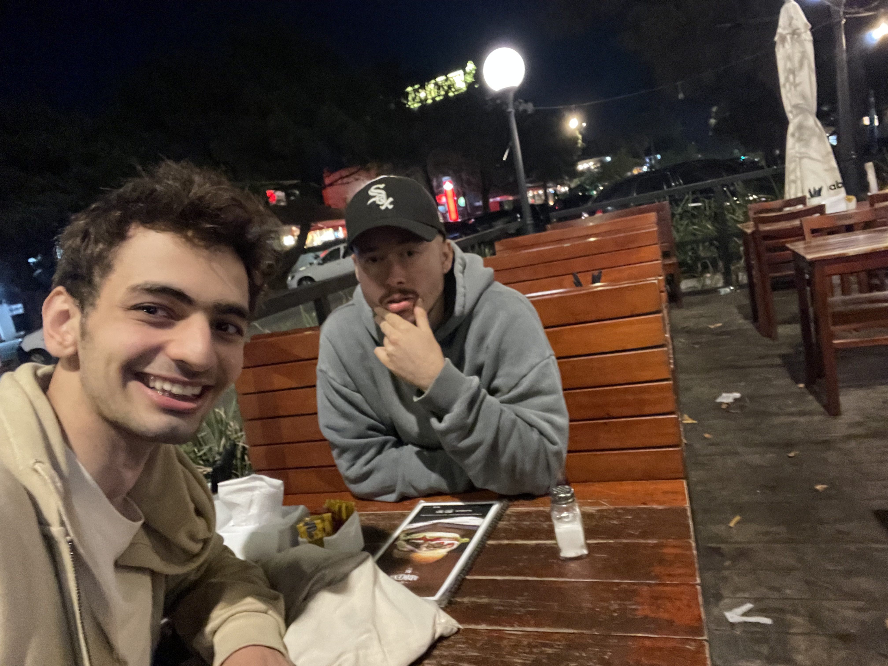
We sent this to sofe
We complain a little more about Sofe's insane response time, but eventually she comes and tells us a little story.
Sofe's CircumstancesEver since I've known sofe, she had a boyfriend, until she broke up with him because he was terrible to her father. So then he got back with his previous Ex from switzerland(Lorenz "The Wind Tunnel Man"), and I guess things went pretty well until they didn't, because apparently long distance is really hard for people that aren't as talented as Nata and Alex. So Sofe came to the realisation that she had to break up with him.
Sofe had told me multiple times that she wanted to break up with him. And right now she told me that she broke up with him two months ago. But that doesn't make sense since on 28/03/2025 she seemed to still be with him, and she was complainign about him. But that's besides the point.
She broke up with Lorenz but Lorenz was so devastated that he told sofe he was coming to Uruguay. Sofe by this point had gotten over him so she insisted for him not to do this. But he did so now he is in Uruguay and he doesn't speak spanish or anything. He was crying at the airport, sofe had to deal with him, comfort him and all. And he even kissed Sofe against her will.
Sebs and I stared at each other in shock :0, we honestly don't understand how Sofe managed to be so tollerable towards Lorenz despite his utterly disrespecful moves and actions, I guess sofe knows him better and she thought they could stay friends but this was too much. SOfe is also paying for his apartment, which is wild.
Both Sebs and I agree that if it were up to us, we would definately not see Lorenz again. But sofe felt responsible for Lorenz, so she forced herself to accompany him and sometimes eat with him, even if it was awkward and stuff.
Now comes time for my opinion, Sofe was definately being too nice. I mean sure love does crazy things and all, but you still have to be responsible for your emotions, just because I hate Clarencio's guts doesn't mean that I get to travel all the way to Cambodia and punch him in the face, the same way Lorenz doesn't get to travel all the way to Uruguay and kiss Sofe because of how much he loves her. It's irresponsible and disrespectful, it's a very childish move for an adult, and sofe shouldn't have to parent him around and comfort him. Nevertheless she did because she is a good person, and I respect that
Luckily, tomorrow she is having her final dinner with Lorenz and then she is freeeeeeeeeeeeeeeeeeeeeeeeeeeeeeeeeeeeeeeeeeeeeeeeeeeeeeeeeeeee
Sofe then says that she is done with serious relationships until she is 35. Her line of work(film) doesn't allow for non-long-distance-relationships and she is absolutely not having another one of those. Bruno had said on 28/03 that long distance never works.
So then we switch subjects to long distance relationshipts like Sebs and Sofa; Nata and Alex. We talk about how great those relationships are going and Sofe is kinda feeling miserable. She asks us how we have been
I tell sofe about all the friends I have in the italian, and also about the math test that I recently had. And finally about how I need to do even more math now to get into groningen.
Friend List- Pili
- Milagros
- Rosario
- Fernando
- Nacho
- Martina
- Mica
When i say Martina, I wanted to make sure they weren't confusing her with the other Martina, so I say "Martina 2, this one is a lesbian". And then Sofe says something along the lines of "Oh good, to counter the bad Martina". And I didn't really know our Martina was that bad, but we move on.
Sebs tells about how he is still working for my dad, and how his girlfriend and him are going to Argentina soon(tomorrow), and also how they plan on moving together soon.
Also our food arrives, it arrived way before all of this but I just thought sofe's circumstance was more important. I ordered a chivito with some rabas. And I pulled out one of my epic Neather Lava Sauce packets to use them on the rabas. SOfe had apparently tried them before and she didn't like it. I don't respect that
Then we talk about ice-cream, and suddenly I come to the realisation that both Sofe and Sebs hate chocolate chip mint ice-cream. It's my favourite flavour, this was really interesting. They said that they would maybe like a less artificial flavour of mint ice-cream, and I respect that.
I go to pay, I almost didn't tip them because of the amount of time they took to give us service, but it ultimately worked to our favour, so I did tip them
Then Sebs tells the story of how his parents got together, I only hear the last part, where Seb dad travels to a country where he doesn't speak the language and all, and he somehow manages to get the girl, Seb mom. It's kind of reminicent of Sofe's situation except she said no.
I tell the story of my parents too. My dad sent an email to my mom, Email rizzzz
Then I ask why Martina is evil and both of me look at me like im retarded, and even though they aren't fully wrong, they definately expect too much of me. I don't know where people get information, how everyone gets their chisme, their gossip, no one ever tells me anything, and yet somehow im just supposed to know stuff like this. How, no one ever tells me anything. Unless I have concrete evidence, I will never think someone is evil, because basing your opinions solely on other people's opinions can lead to some crazy self manipulation. You can end up having very stupid damaaging situations if you completely let go off any evidence and use only what other people think.
Like the monkey experiment where monkeys are sprayed with water for climbing to get food and stuff and the monkeys get replaced. google it.
So Sebs claims that he told me before, but i only remember something about kim. To be fair the kim stuff was pretty bad but I don't think it was born out of evil.
At this point we are headed to the madriguera heladeria in order to see if it was open. But it wasn't. However Rudy was open and Sofe was craving some fries. Sebs leaves, so Sofe and I wait for fries. Meanwhile, she finally tells me what Martina had done to drive Eitoku to his downfall. If you don't know what I'm talking about then just read the chronicle.
If you don't want to read the chronicle, in sum, Martina and Eitoky were together (yeyyyy) then they fought and Eitoku jumped his 5 story balcony D: but he lived and recovered really fast. It turns out that Eitoku had suffered from false sexual harassment accusations from Martina, and then she came out to say it was all false after Eitoku's downfall because of how guilty she felt.
It's been so long since that, honestly I don't know what to believe. Why would she even do that. I'm not going to question that, it's the past. Sofe then asked if anyone had ever said anything bad about sofe.
Everything anyone has ever said about sofe (negative version)- Too excited (can be annyoing)
- All the time with her boyfriend
- Doesn't go to any class juntadas
- Transphobic (According to Fede)
- Genrally a bad person (Claims by fede)
- Manipulates Bruno (I don't think this one is true)
In a moment everything bad anyone has ever said about Sofe flashes through my mind. But none of it is serious, except Fede but after a lot of asking, Fede never really gave me some concrete evidence that Sofe was ever actually bad. Any bad thing sofe said could have just been interpreted as a joke.
So I tell sofe she is in the clear which she is glad about, nothing as bad as rape allegations against her. Sofe's father then arrives, before her fries. So she impatiently waits for them for like 10 minutes and bolts as soon as she gets them, as to not make her father wait.
Rating from -10 to 10: 6.75
Overall really good day. It was very interesting to know about Sofe's suffering and it was nice she got to hang out with us and complain about her problems. I also got new Martina/Eitoku lore which I've been dying to know about. I know I shouldn't delve into other people's stuff but I'm just such a curious guy.
Neather Lava Sauce Packets: 2 Remaining
Date: 02/05/2025
Climate: Don't know
Location: my house
Title: Minecraft PVP
I played for the first time in a long time. Pretty good, I am so good now.
Also my mom is leaving to Argentina tomorrow, and so is my father
I invited Sofe to a nice and rare festival that I really like. I once went to this festival with Megan, Milla, Sebs, and I think Fede might have been there too. It was so epic.
Pili also texted me while she was drunk. She said she met Nacho from the Italian.
Lastly, Sofe has her final dinner with her Ex boyfriend Lorenz the wind tunnel man. Bye Lorenz, I might never mention you again.
Rating from -10 to 10: 0
Date: 03/05/2025
Climate: Perfect
Location: Degusto Festival
Title: Quest for something to want
I went to Degusto at 18, just as Sofe and I had arranged. However Sofe says that she is going to be late because something came up. You won't believe what kind of cataclysm came up that forfended Sofe from arriving on time, it was truly terrible and I wouldn't wish it on anyone. So I wait for an hour, I cross paths with some UAS people, and I eat a shwarma.
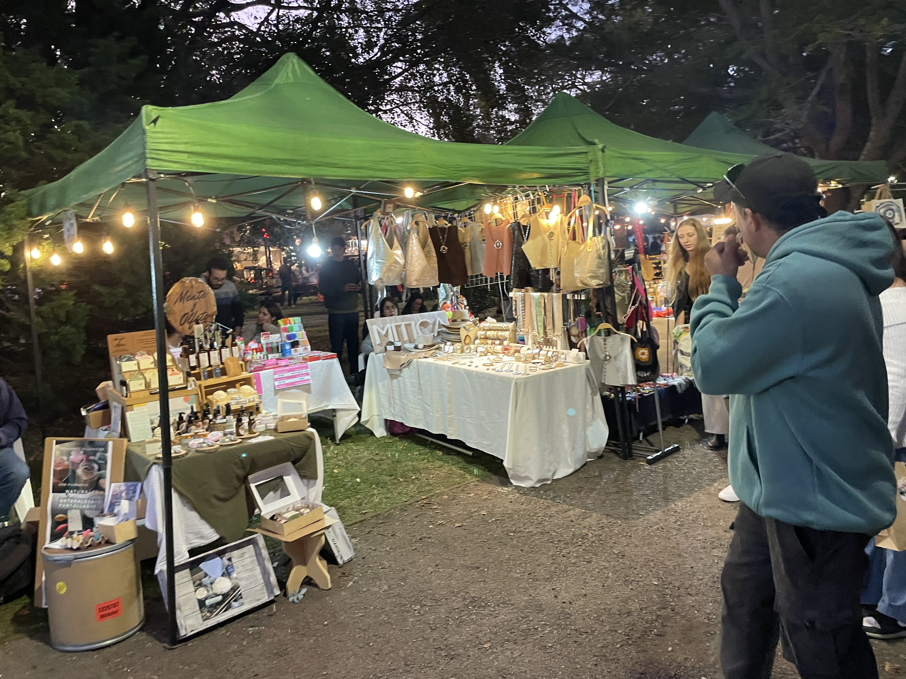
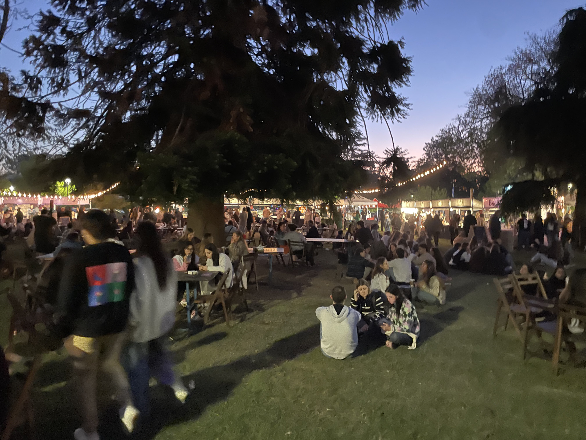
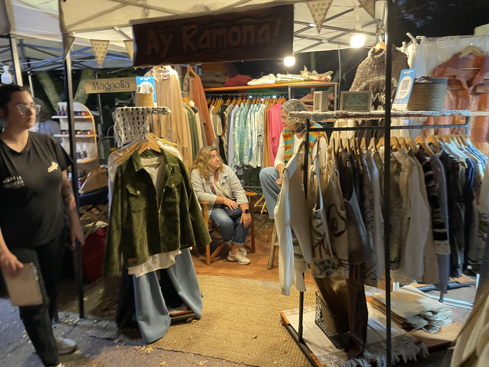
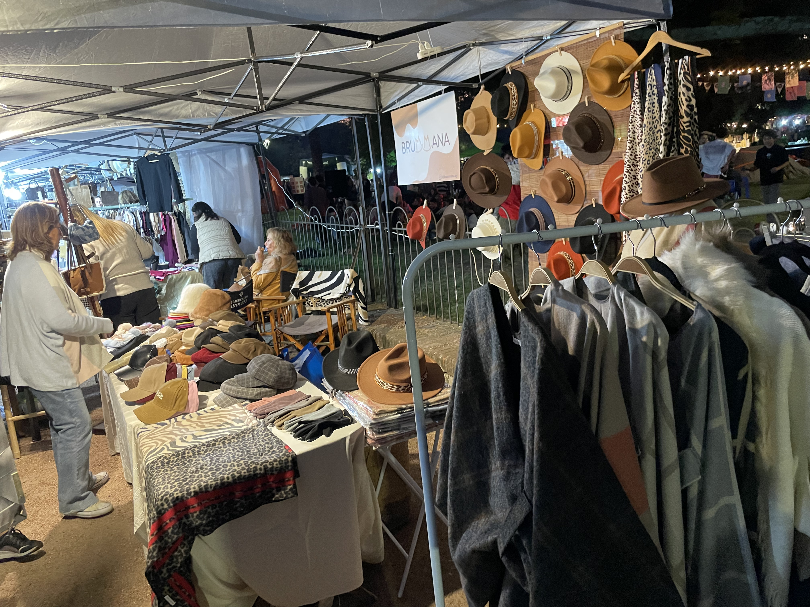
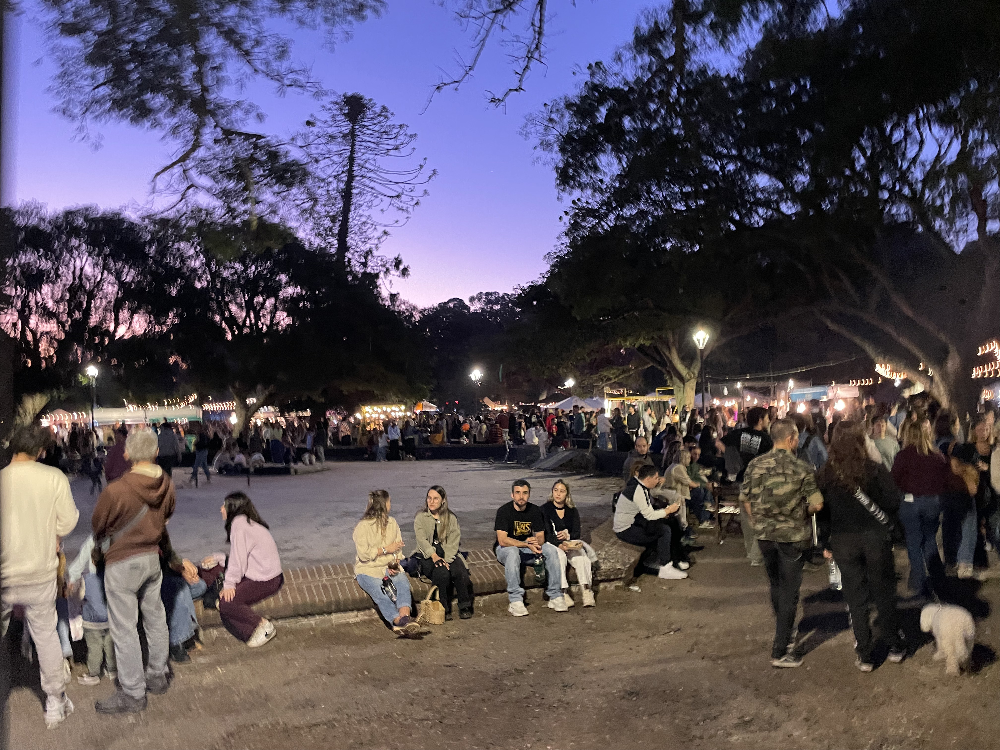
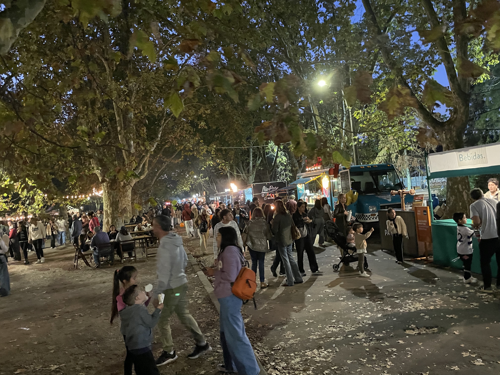
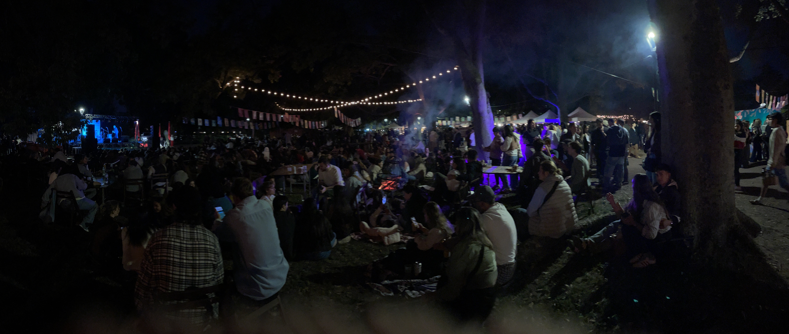
The Fair (pretty cool fair)
Then sofe finally arrives at 19, an hour late. Turns out she was having trouble picking an outfit. In all honesty her outfit wasn't really that good, but who am I to say, it's just a matter of opinion. I would never make anyone wait 1 hour just so I can look good. Sofe has some strange priorities, but I'm not in a bad mood so I don't get that mad about waiting an hour alone.
Turns out Sofe ate 4 ravioles so she isn't hungry. Bruno (he is here too) isn't hungry either. So sofe gets some alchohol to drink, and this makes her want a cigarrette. So she starts looking for people that are smoking, in case they were willing to share some. Bruno then gets a call from Ruch, ex-UAS student, ConstantinoZ, this guy supplies us with money and tells us to go buy a cigarette for him and for ourselfes.
Sofe is very excited about this sidequest. I inform Bruno about the yellow car game, basically if you see a yellow car you can hit someone. I extended it to yellow boats too. I just happen to see a parked yellow car so I attack Bruno.
Then we get to the parking station, we buy cigarrettes, and we leave. Sofe had sat at the front at first, so I sat at the front on the way back and she was mad about that. Also I got a voice bag recording from bruno.
When we got back Sofe kept talking about how she wanted to fuxk someone. Then she started playing a pokemon game in her phone. Ethan played this very same game which was kind of funny to me. Then she got called by her best friend called Mateo, he was on a date and Sofe informed him of her desires.
I asked Bruno if he had tried the neather lava sauce, and it turns out he hasn't. Sofe says that she didn't like it, but her opinion is wrong. I give bruno one of my Neather Lava Sauce packets. I also asked Bruno if he watched a minecraft movie, he hasn't so i insist that he must watch it. He says some of his friends told him not to watch it.
Then we went into the mercado Arocena to get some napkins and stuff. We went back to sit down, and sofe got hungry so she bought a crepe, and I bought a brownie. We went to see a song that the band was playing. While Sofe was getting a crepe, I chatted to Bruno about the current state of the world, it was pretty bad. Then we went to some swings, and we swung. Bruno thought he swung high, but I swung higher. Bruno and I talked about the dryness of my brownie and Milei's thoughts on abortion.
Then, we finally found a good place to sit. I started having a little bit of a therapy session with Bruno. I pulled out my notepad and everything while Bruno was just smoking there. And Sofe was playing pokemon, I felt she wasn't on the same wavelength to me that night, but then again I feel like Sofe and I are constantly out of phase with each other.
-
What is the worst thing you've ever done
BrunoHe stole money from his mother to buy cocaine
SofeShe lied about getting robbed to get attention from a guy she liked
TimoI lied about having a crush to get a pillow during a sleepover. And then everyone thought I had a crush. After that incident I vowed to never lie again.
-
What is your favourite animal
BrunoThe Siphonophorus, it's like a jellyfish but composed of many microorganisms
SofeBlue Coral Snake, very venomous and pretty looking
TimoThe Pine Marten, the only weasel with retractable claws
-
What is your favourite colour? (I've been trying to figure out Bruno's favourite colour for a long time but he says he doesn't have any)
BrunoDoesn't have any
SofePurple (The Gayest Colour)
TimoCosmic Latte
-
Hypothetically, if you were to have a favourite colour, what would it be?
Bruno*Refused to answer*
Sofe*Won a match in the pokemon game she was playing*
Timo*Thinks of a new question*
-
What is a person you like a lot
BrunoSebas (not sebastian Sass, another sebas, probably less cool)
SofeShe didn't respond but I'm guessing it's not Lorenz
TimoSebs
-
If that person were a colour, what colour would he/she be
Bruno*Refused to answer*
SofeShe said Sebas would actually be a kind of orange
Timo*Concludes that Bruno's favourite colour is orange*
-
What is your favourite element
BrunoThorium - Hardly ever used as Nuclear Reactor fuel
SofeUranium - Commonly used as Nuclear Reactor fuel
TimoFluorine - The most electronegative element
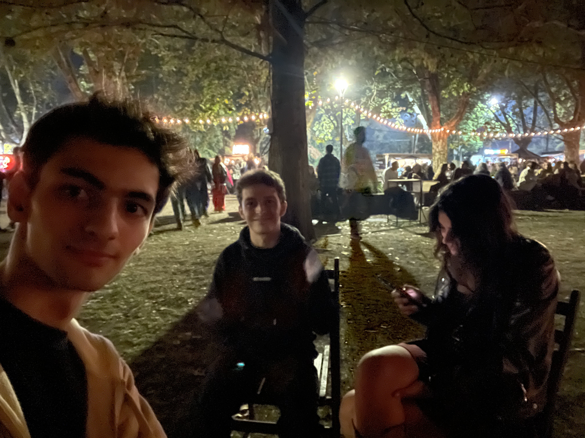
I also took this picture because I realise that I should start taking more pictures to add to this diary
Sofe didn't know we were taking a picture because she was playing pokemon
After that, Sofe said she was sleepy so we started walking towards Bruno's car. I showed Bruno my lethal weapon. I call it the birdy bird. It's a metal bird-shaped candle-holder that is suprisingly massive given its tiny size. I call it my lethal weapon because I carry it with me at all times and it could definately kill someone if you smack them in the head with it.
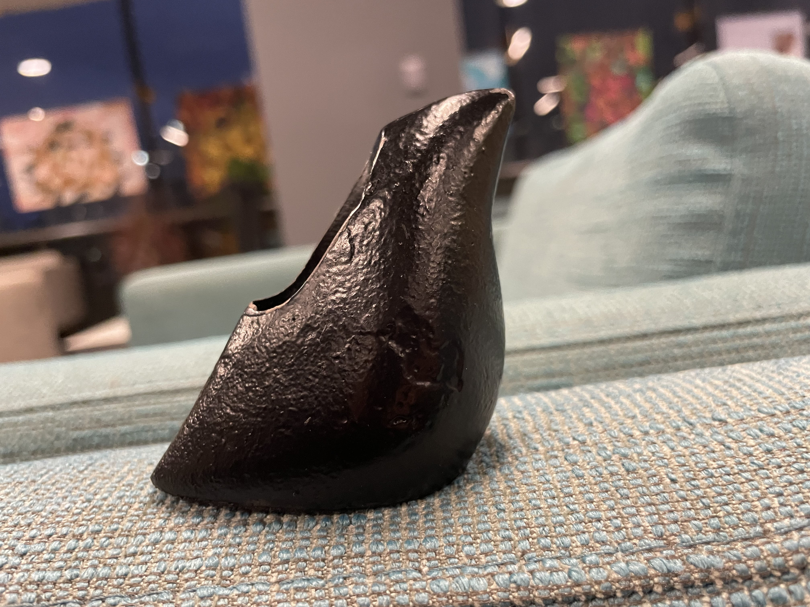
The Birdy Bird/The Candle-Holder/The Lethal Weapon
Bruno leaves
Then I decide to look around to see if there is something nice to buy, there ain't much but there are these cool ceramic mate cups. Unfortunately they aren't for sale, they are just displays for leather mate holders which is unfortunate. My sister is also here, she is watching the movie "School of Rock". I join her and her friends and they all said that the movie was really good.
Then they all go to get Cake Pops so I get a cake pop, and then my father comes to pick us up. Once we arrive at home, our father leaves to the United States of America
I'll leave you with these cool jams from the bands that were playing
Cool Jams
Rating from -10 to 10: 3
It was fun but I didn't like how I had to wait an hour for sofe to get dressed
Neather Lava Sauce Packets: 1 Remaining
Date: 04/05/2025
Climate: Pretty Cool
Location: My House - McDonalds - DeGusto Festival
Title: Aquiring Goods
I woke up at 8 to take my sister to volleyball, and then I slept again. And then I went to McDonalds with my sister and her boyfriend. I saw how there was a family that had ordered the Minecraft meal, so I ordered it in hopes of getting more Neather Lava Sauce. Mateo said that his brother collected all the figurines from McDonalds in hopes that they might sell well int he future.
My Minecraft Meal arrived without Neather Lava Sauce because it turns out they didn't have any, what a Scam. I got the worst toy too.
Then I went home, did some chemistry work, enrolled for the OMPT-D, played some minecraft, walked my dog, cleaned my room, stared at the ceiling. One thing that I didn't do was open up ableton to make music, I gotta do that soon.
After all of that, later in the afternoon, I took my sister to another volleyball game, and then I did something wild. I went to DeGusto, alone.
So last night with Sofe and Bruno was fun, but for some reason the energy was off, I don't know if it was because of Sofe's constant horniness and need for smoking (it was probably that) or because of Bruno's presence (it was definately not that). But I didn't really feel the good vibes I was searching for.
So I ate some ramen, listened to some good music, left my phone in a seat, got my phone back from a security guard that found it, my dad had called during this time so the securit guard talked to him for a little bit. Then my dad asked me some things that are kind of irrelevant to the story.
I also bought a cool Mate, that was a really nice investment. What wasn't a really nice investment was on a briochet. It was ice-cream in bread, what a terrible idea. But hey, at least now I know, never order briochets.
Rating from -10 to 10: 1
Better than 0
Neather Lava Sauce Packets: Still 1
Date: 05/05/2025
Climate: Moist
Location: My House - The Dentist - Boat - Argentina
Title: Back to Argentina
I woke up and I did some chemistry. Real nice stuff, I play some minecraft too.. Then I prepare my bags. I look at the ceiling, it's a pretty good ceiling I must say, it's white and it has this light that I use to see. Then I go to the dentist, I set up appointments, pay the stuff I need to pay.
ANd then my mother drives me to Buquebus. I get my grade for Biology, I got a 7 which is good considering I haven't gone to a single biology class in like 4 years.
I get in the boat
Rating from -10 to 10: 0
Nothing good, but nothing bad either
Date: 06/05/2025
Climate: Terrible
Location: Apartment of my grandmother - Italian Hospital
Title: Argentina is so bad
Today, I woke up, went to the bus stop to take the classic 124 bus. But it never came. So instead I took a taxi. But by the time I got there, I realised that the man didn't have the credit card payment method available. I had to call my mom so that she can use Mercado Pago in order to pay the man(i don't have mercado pago). The man was impatient and very angry, he was definately getting payed, like I gave him the little amount of cash I had, 4000 pesos. I ahd to pay him 11000 pesos but like, I gave him a good portion, and I went through all the trouble of calling my mom and writing down the mercado pago bank account. If I was interested in not paying him I would've just left the car right there instead of going through all that trouble. Even though he knew that I literally arrived yesterday, and I'm not from argentina, he was untrusting and impatient with me. I feel like if it were up to me I wouldn't have payed him just because of how badly he treated me. But at this point my mother had already payed him.
Also turns out I didn't need to go to the Italian Hospital today, it was online classes because of a bus drivers' strike. I took the online class while in the classroom and Fernando asked me what the hell I was doing there, and probably lauphed so hard at me.
Then I went home and I did stuff.
Later that day, sebs had some time to kill after his girlfriend departed. He was in Argentina with his Sofa all this time. So he decided to pay me a visit. We went to a nearby cafe. He had some jam and cheese sandwiches and I had a chocolate milk. He talked to me about how people here get pissed off easy. Like how an old lady got mad at Sebs and Sofa for being to loud several times. I told Sebs about my epic taxi story, and I had to agree with him. He left after paying for my chocolate milk :D
Rating from -10 to 10: -3
Absolutely devastating, but I saw sebs so it wasn't that bad
Date: 07/05/2025
Climate: Not that bad(still pretty bad though[hot])
Location: Apartment - Italian Hospital - Cafe
Title: The biophysical adventures of TIMOTHY
During Math, I understood limits. I spent all the class understanding limits, I locked in. And the wildest part, I didn't even take my adhd medicine. I have a rule where I only take my ADHD medicine when I slept at least 8 hours(or 9 interrupted hours[or 7 hours if I slept soundly]) However today I have slept a good 5 interupted hours so that was not happening. This is because if I drink my ADHD medicine while tired, I have a headache, and I can't concentrate anyways so it's just a waste of medicine.
But turns out that I was able to concentrate without the need of my medicine. Furthermore, during Biophysics, I started learning about all the things that I should've learned in the past, but didn't, because I wasn't there. All about pressure, and fluids. Little by little I'm understanding everything.
Nacho always sits next to me but we don't talk that much because my demeanor is always really awkward because of how much "in my own world" I am all the time. Really social and talkative people who are also a little bit alternative such as Pili and Fern still find ways to talk to me. Nacho on the other hand probably won't ever talk to me unless I talk to him. But today I locked in so hard I actually forgot about his existance.
On the bus back home, I couldn't find a sit to sit down. At first I didn't talk to Mica who was besides me because I felt like talking while standing up would be hard and probably annoying for the other people around us (the bus was quite full) But once more people went down, I asked her how she had done on bio. Then she complained about all teachers except the chemistry teachers. She feels like the Math teacher rita hates her, the physics teachers suck at explaining, and bio i don't remember but she does have something against them.
So for Rita, I feel like she is right. For Physics she is definately right, there are two physics teachers, Guillermo and Gustavo. Guillermo is the boss, but he only teaches online classes. Guillermo also provides the answer keys to the practice questions he sends out. But it turns out that today he got a question wrong. He calculated the tension of a string by substracting the Force of gravity by the force of friction like what????, Im not going to explain it, but here is the picture if you are curious of how I did it.
So Mica says that overall she spent the entire class talking with her friend, I wish her luck on biophysics because I had the advantage of already knowing physics and even I'm struggling
Rating from -10 to 10:
Date: 08/05/2025
Climate: Hot
Location: Italian Hospital
Title: Lab of Buffers
We did a lab today, buffer solutions. It was quite interesting. Pili wanted to do everything, however she messed up sometimes which was unfortunate. I didn't get to do much, I only got to test two buffer solutions while Pili did the rest of them. At the end, Pili accidentally put acid on tha batch buffer solution instead of the dilution. So I went to ask another group if they could lend us a little bit of their batch. This was against Pili's advise since she said they would kill us. They didn't, luckily
Rating from -10 to 10: -1
Pili didn't let me do much in science :(
Date: 09/05/2025
Climate: Normal for argentina
Location: Italian Hospital
Title: Chloroplast Moves
I arrived late to the biology class, but I did arrive, and that's ultimately what counts. It's my first bio class in a while, and I am tired. We are learning about RNA replication, and I arrived halfway through the entire explanation so I'm kinda lost but I'm trying my best and all.
We also did a lab where we spent a nice time seeing how chloroplast moves. Also some other stuff but mainly how chloroplast moves. Pili wasn't here today, apparently she has been feeling really bad lately. I think she should definately attend more classes, but I ain't her so I won't judge
Rating from -10 to 10: 1
Chloroplast moves :0
Date: 10/05/2025
Climate: Interesting
Location: Apartment
Title: Dissapointment
I had plans to visit my primes(cousins["primos" in spanish]) but I coudln't because my grandmother changed the plans, instead I studied a little chem, and I basically did nothing. Until the end of the day, where I played some minecraft with Sebs and told him how I did nothing.
Rating from -10 to 10: -1.5
A day that left much to be wished
Date: 11/05/2025
Climate: Sunny and Shiny
Location: The house of my primes
Title: Prime Time
I went to visit my cousins today. I played a little clash royale, a little football, a little tennis. Overall it was really fun. We also talked about movies and books. Turns out my cousin Lucas he read the book "El Tunel" by Ernesto Sabato. I got destroyed at tennis because it's been a big while since i've played, I gotta play more often honestly. Overall great day, we ate burgers and all.
Rating from -10 to 10: 2
Date: 12/05/2025
Climate:
Location:
Title:
I honestly don't remember anything of what happened today. But i did ask Pili if she wanted to study for the chem test tomorrow and she never replied :D
Rating from -10 to 10: 0
Date: 13/05/2025
Climate:
Location:
Title:
Turns out... there is no chem test today. I woke up ultra early and I couldn't go to ultra sleep so I ultra took the bus and I ultra missed the stop so I had to ultra walk like 5 cuadras to get there.
The teachers started a review for the exam. And I was just there, dying, from sleep depravation. Then the class shifts and now we are learning about redox???? I ask Martina if the test is actually today. No, it was on thursday.
Rating from -10 to 10: 0
I'm kinda lost
Date: 14/05/2025
Climate: Normal
Location: Italian Hospital
Title: Math Results
I got a 7, but it got elevated into an 8, which means that I still have a chance to not take the final exam. If both of your exams are an 8 or more then you can skip the final exam. Also physics was kind of just there, didn't really affect me in any significant way.
Later that day I talked to Lucio. Lucio is a friend from the UAS, and long time ago, I stayed at his house for a month. During that moneth we always stayed up late eating ramen and watching one of the best series in the world. The series was called The 100, and it's about how earth got destroyed by an AI and then surviviour were shot up into space, but now the soace station is running out of oxygen, so prisioners were sent back to earth so they can test if it's safe. Howerver it turns out earth already had some inhabitants in it, some of them are savage, others are rich, and one of them is an AI capable of killing the world(again), so once everyone realizes that earth is safe(after many trials[and tribulations]) they all return to earth. At some point the AI takes control of a lot of people, however Clark(main character) stops it with the power of black blood(no time to explain). Then earth gets visited by meteor miners that were sent on a mission to mine meteors a long time ago, and now they came back. These people are also prisioners, but more evil, and they actually take quite the control over the. So then the fire comes and the world ends(part 2) but the used the meteor miner's ship to escape into another planet. 2 of the people in that ship decided to have a baby, live their life, and cryofreeze the baby when it became a teenager. Then they go into another planet, one that already has people in it somehow??? They were sent here a long time to mine meteors or some shyt, and when the moon goes red, the plants release a toxic that makes you go fakin nuts. Jake Murphy is the best character by the way, and he didn't go nuts somehow. Turns out that the place is ran by a bunch of guys that stol other people's bodys through the use of microchips. Clark was infected by someone, however the AI from like a two seasons ago had hidden a part of itself in the brain of Clark, and now it helped her fight the intruder trying to take over Clark's mind. So then they somehow manage to dispel the illusion that these people are gods and everyone goes a little bit mad. Then someone goes into a storm that sends them into a world where time goes by faster and they live their life and have a baby and literally what not. Then through some portal magic they discover a higher society that wants to solve a puzzle left behind by some other higher beings, once solved, the puzzle would take them to an ultimate test where the humans would have to prove themselves if they are worthy of ascension. So after many trials, and oh boy some tribulations too for sure, the leader of the higher society encounters the leader of the higher beings, but then she gets killed by Clark because of the trials and tribulations that I forgot to explain. The higher being(after witnessing the human-human murder) decides that humans are not worthy of ascension, so they will be all killed. But then Raven(the engineer who has been here since the beginning) arrives and she somehow convinces the higher being that humans are worth peresrving, all of them except Clark. So clark is left alone in the world, the last human left ever. But no because surprisingly, all her friends (Octavia, Murphy, all the others that I don't remember) decided to stay after learning that Clark wasn't ascending.
Hoped you like my essentialy summary.
Rating from -10 to 10:
Date: 15/05/2025
Climate: Normal
Location: Italian Hospital
Title: The Chemistry Exam
It wasn't that bad honestly. But I decided to waste a good portion of the exam not doing anything which meant I had to rush at the end since I was running out of time. Overall I did quite well still.
Rating from -10 to 10: 2
Date: 16/05/2025
Climate: Rainy
Location: Italian Hospital
Title: Proteins or something(no clue)
So today we studied proteins or something. We studied how they denaturalise and stuff. Except that I got late to class because I couldn't find any socks, im supposed to have a shit ton of socks, I don't know where they all went.
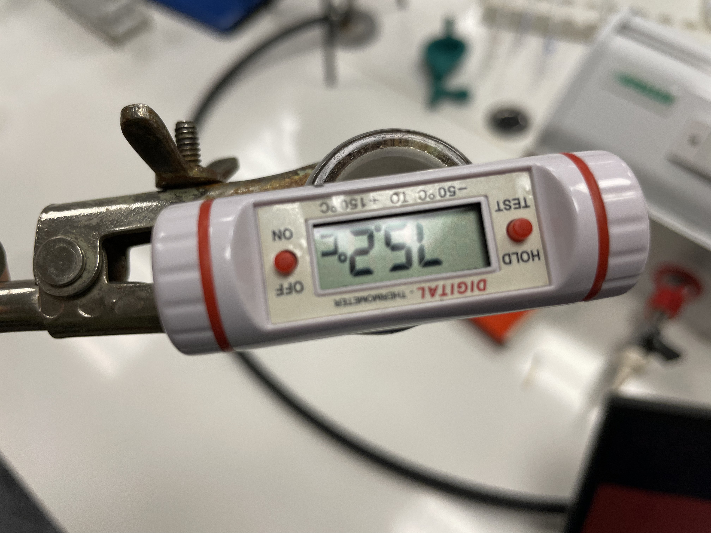
i won't pretend to understand what this even meant
So I only got to class in time for the lab. In the lab we basically denaturalised proteins in several different ways. But I can't say I understood much of what was going on. It all seemed kinda random.
I was also really tired all throughout, and the worst part is that I have a boat ride today.
When I got to Uruguay, I met up with Sebs. Sebs tried to get Dani and Lucas to join aswell but he was unsuccesful. Sebs and I walked to Chiara's house and then to Dani's house, we took this picture
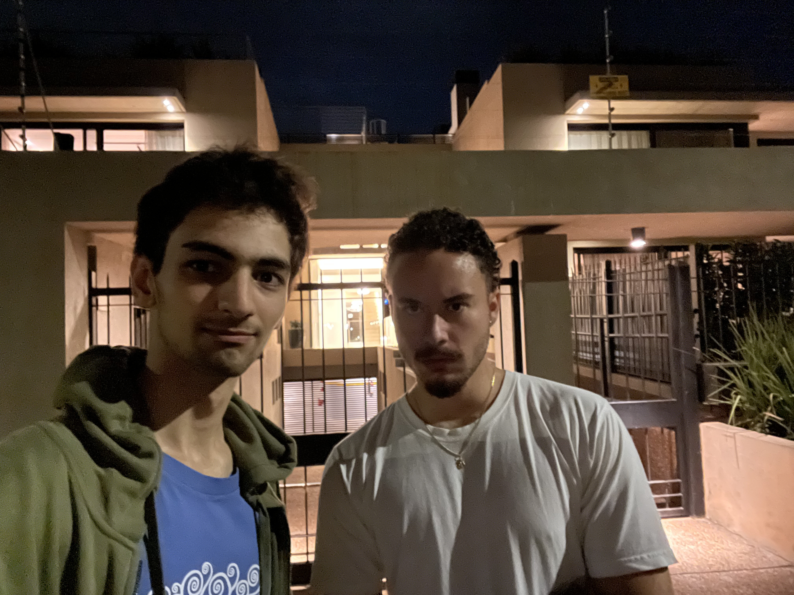
Then I drove sebs back home. For some reason Sebs has been really into the Mafiaverse lately. He has been watching the Sopranos and he said that I was similar to a guy from the Sopranos. He does this were he speaks with the Italian accent which is pretty funny.
Rating from -10 to 10: -1
Sebs' Mafious adventures were funny so they made up for a big part of the bad things today.
Date: 17/05/2025
Climate: Sunny
Location: The House of Lucas Fiandra
Title: Asade
Lucas is in Uruguay, and he has invited several people into his house for a barbacue/asade. Luca, Sebas, Fabri, San, Dani, and I have been invited, and we all arrive... except san. We start talking about stuff, pretty fun. I cut bread, then Dani criticises by bread cutting, then Luca cuts bread, and Dani starts criticising his bread cutting, and then Sebs starts cutting bread, and everyone criticises him.
Lucas told us all to bring drinks or something. Everyone brought glass coke bottles but there was no bottle opener. I tried to with my hand, but then my hand got scratched, so then I tried with my Birdy Bird(a heavy metal bird-shaped candle holder I carry with me). And I got it to make a sound that signaled air went into the bottle, but I couldn't fully open it. Also I scratched myself again. Fabri tried my same tactic but with a spoon which turned out to be much more effective and much less harmful. Then Dani came back from Lucas house with a bottle opener.
We talk about how the IB was bad, I don't know when we are going to stop talking about how bad the IB was, but it doesn't look like it's any time soon. They also talk about their adventures in USA. Luca says that frats often bully others for no reason, his roommate insists in getting bullied by a frat for some reason. This roommate always comes mid-night and destroys the bathroom which Luca has to fix up every single time. Also Dani payed a lot for storage in his apartment which he didn't know he had to pay.
I get to tell my classic story, I don't know if I told it here before, so I'll tell you a little IB story. Basically, near the IB exams, Sebs and Lucas always studied chem and I always tried joining them. However everytime I joined them, I would get constantly roasted by these guys, and if Dani was there it got even worse. And I always brought music to the setting through my speaker which they also made fun of. So it was a day like any other, were mono and sebs were studying chem, and I join them. Naturally they make fun of me, but then Mr Murphy(Director[Father of Chad]) enters the scene to tell me that right now, in this very moment, I am not passing school since I am failing english. Urged by Murphdog, I immediately go to see Moskovicks(an english teacher that I dislike) to see what was wrong. She informs me that I was missing an assigment, but I inform her that I actually never received the assigment.
The assigment was to re-write an essay from the pravious quarter using some corrections she did. However she forgot to give me corrections and she said that she would give them to me next class. She didn't, and it obviously slipped my mind since I was too occupied trying to finish my IA's and my dreaded extended essay, and literally everything(this was the IB finale after all) So she just gave me an F because she never got the re-written essay that I needed her corrections to do. At the end, we ended up on an agreement, it was half her fault because she never gave me the corrections, and half my fauly because I didn't remind her to do the corrections. Now obviously I don't personally take any blame for what just transpired, however I do realize that this by itself was already a very ambicious deal, and surprisingly Mosko accepted it. So she changed a 0% into a 50% percent giving me just enouph to pass english.
I returned heroically to the library and Murphy was happy to hear that I solved it. He said "For a moment I thought I was going to have to pull out one of these in the graduation" and he gestured a "sike" handshake where he pretended to give me a handshake but then siked me in the last second.
So yeah pretty interesting. Fabri is very impatiently waiting in the table for the asado without helping to set up the table at all. We do eat asado eventually and it's actually amazing, Lucas is a great asader. Then they start talking about football for a while, and a bunch of stuff that I know nothing about, this happens often with this group of people, so I just sit there doing nothing for a while. Dani tries to include me in the conversation but he failed.
We also eat ice-cream. Fabri brought some dulce de leche ice-cream which I enjoyed. Lucas had told us all to bring things but I actually didn't bring anything but my presence. We enjoy the ice-cream and it's all good. We also talk about Luis briefly, he was a guy that joined our school for like 2 months and he couldn't care less about academics which was really funny.
After a while, we all go outside and we start talking about something else. We talked about places in Uruguay we could go, like Artigas, and Badly Donated(Maldonado). We also talk about the possibility of organising a football 5, and the fact that Santino never showed up.
Then I start playing clash royale before I leave. It was a good time
I get home and Sofe invited me and Sebs to some parties with friends from other places like Japan, and France. It sounds fun so I want to go. I pack up my bad with all the essentials and I took a bus. I realised I missed a stop so I quickly get out on the next one so I could make it in time, but this was a great mistake because immediately after, I realised, I did not have my waller. I must've dropped it during the bus ride in my haste.
This was a huge problem, my documents are there, important credit cards are there, everything that matters ever is there. I call my mom and she immediately starts reporting all the cards and then she hang up on me. Then I ask her to come pick me up, maybe we can catch the bus. So after a good amount of time, she comes by and we start heading to the bus terminal. But the bus had already gone back. So I try to reach the opposite terminal as quickly as possible. Mom is still cancelling all cards, and I had to pretend to be my dad in order to authorize her to cancel a card.
It was all very terrible and really bad. But suddenly, my mom gets a phone call from the bank. A man tells her that the bus driver has my wallet, the man gives me the bus driver's number. I arrange a quick meeting with and he returns my wallet. Everything is safe.
Rating from -10 to 10: 2
Good day but I was tired and stressed
Date: 18/05/2025
Climate: Humid
Location: Armenian food
Title: God help us all
I woke up early to go to church, I gotta thank god for giving me back my wallet through that angel of a bus driver yesterday. The Priest talked about how jesus said that everyone should love each other how he loved them. I gues it's the classic "love thy neighbour". I've always lived by that philosophy, and I am glad that bus driver does too. It was a pretty good mass, 4 children got smacked by wet plants.
Also my dad came back from the US. He gave to me a notebook, some pens, and an incredible backpack.
Later that day, I went to eat shwarma with Sebs and Sofe. I tried inviting mono but he didn't seem too keen on joining in. I met with Sebs and we talked about the chances of people actually showing up.
- Sofe:50%
- Bruno:9%
- Dani:2%
- Ethan:-0.5%
We also talk about how Sebs is getting payed next week. Sebs is getting payed because earlier today, my dad was talking about his work and my sister randomly asked "when are you going to pay sebas" and that probably reminded him that he probably should pay him soon. Sebs found that funny.
But suddenly Sofe and Bruno pull up. We found it pretty cool that we predicted Bruno was going to show up since he was the one with the second highest probability. Apparently Sofe forgot to tell us that Bruno was invited too.
Sofe then explains a little bit of a situation. She quit uni like 2 weeks ago, but some of her fellow classmates put her name in a piece of art that they made. This is a big deal because according to Sofe, this project was garbage and she didn't want her name to be associated with it, specially since she was hoping the teachers at that university would hire her. SHe insisted that her name be taken out but her classmates were adamant on not doing it, which pissed her off. I suggested sueing for deffamation. Eventually after a lot of insisting, she manages to get a "ta si te importa tanto te saco" which translates to "fine if it's that important i'll take your name out". It's passive agressive but it gets the job done.
I also told my wallet story, and Sofe said that I was really lucky. I know ;) I had told the story to the table tube gang today aswell so Sebs knew all about it. Megan said that it's good how the story had a nice ending, and then Fede told us about his great new boyfriend and how not-toxic he was and how great things were going with him. It seems that life is goood for everyone. Anyways back to MY life, the best one
We start talking about women, apparently sofe doesn't like women that are too "women" because they apparently tend to be too passive agressive with things. She ends up concluding that straight women are (most of the time) passive agressive and they hold a lot of resentment for people. I've seen this many times, however this would imply sofe was a lesbian. But Sofe countered saying that she was a "Straight lesbian" since she behaved like a lesbian but was straight. I guess it makes sense since Sofe didn't really get along with any of the girls in our class.
Because of this, we start talking about dumb titles such as alpha female, and innevitably this brings up Dani. Sofe expresses her opinions on Dani, she thinks he has a very strange way of thinking, but he isn't hurting anyone so it's all good. That is pretty much the same thoughts Sebs and I have of Dani. He is not bad in the slightest, the only thing that kind of bothers me is that he might be a little too condecending and conceited at some times. "It's as if he went out of the box, and he created a new box for himself" -Sebs and I's conclusion about Dani (from way long ago[it still holds true])
I ordered a shwarma, and the food already came by this time. It took long but it was good so it compensated. I try drawing Sebs after asking him his favourite colour(blue). He retalliates by trying to draw me. However unlike me, Sebs actually knows how to draw and he intentionally destroyed me by creating the most devastating reconstruction of my face known to man. thanks sebs
Sofe also plays pokemon during this meeting. Sebs' favourite pokemon is torterra, and Sofe's is Glazeon.
At this point I have Sofe's, Bruno's, and Seb's favourite animal, Colour, and Element, sick. Sofe and Burno leave. Then a waitress questions the nature of my birdy bird, and I explain what it is. Sebs tells me that I have an autistic aura. Then I leave but not before a brief debate about treeswith Sebas. Also the food was really good, Sofe didn't want to eat anything because she said everything was too fat.
Rating from -10 to 10: 2
Pens: 6
Back Pack: 1
Notebooks: 1
Oxymorons: 1
Date: 19/05/2025
Climate: Rainy
Location: Buquebus
Title: Back to Argentina, math is impending
So I wake up at 6 for no reason and then I start doing nothing until 8. I go to buy the alfajores my grandmother likes, I also buy myself some dulce de leche and a kinderjoy egg. I just realised that I forgot to open the toy after eating it. I am kinda dumb.
I then went to buquebus, the boat place, with my father. We got there through uber because my father was heading somewher near, he didn't want to waste time parking. On the way there I talked to my dad about the possibility of buying a Network Attached Storage system(NAS) in order to deposit my photos and possible even run my website better.
And now, I am here, in buque bus. Truth is, I haven't been donig a lot of math. And also, I'm sure that if you are actually reading this entries, you've noticed some of them were really short. That's because my time has been taken up by many things, mainly studying for the tests I have in UNI. however, now I have to somehow find time to also Study math so that I can take the mock exam to know if I am ready to take the Online Math Placement Test Level D exam so that I can go to groningnen and get a bachelors in chemistry.
WILL TIMOTEO MARCAIDA ELISABETH OJEDA BE CAPABLE OF STUDYING AND ACTUALLY PASS THIS INCREDIBLE TEST?!?!?! ONLY TIME WILL TELL BUT DAMN, im kinda stressed. I should journal more often it's quite relaxing, but also time-taking.
Rating from -10 to 10: 0
Very neutral day overall, I do have some thoughts about this weekend though.
Thoughts: About Ethan and Math
I don't know what he has been up to recently, I don't know if he didn't get invited to Lucas' asado or if he chose not to come. Lucas has invited him several times in the past but he always had something come up so maybe he just gave up. Too be fair Ethan is to blame.
Also, lately I've been putting off math until I have time, but now I realize that's not going to happen. So I am going to make time.
Date: 20/05/2025
Climate: Cold
Location: Grandma Apartment - Italian Hospital
Title: Chemistry Terrible
I ate some nice Guiso de lenteja at the morning. Then I missed a bus stop so I had to walk, but I wasn't late because there was no traffic so that was nice. The chem teachers are kinda mad because no one did really well on the test. Honestly, I messed up in two parts for sure. Firstly, I spent a lot of time doing nothing because I couldn't figure out that the solubility could be used as concentration of the pH of a buffer henderson hasslebach equation. My second mistake might have been to use the concentration of a liquid in n equilibrium expression, that's unfortunate. However I believe I did everything else correctly, so that's good. I definatelye don't think I failed the exam
I got a lot of math to do.
We learn
Rating from -10 to 10:
Date: 21/05/2025
Climate: Cold
Location: Italian Hospital
Title: Tired
I've studied a lot for this exam because I never studied hydrodynamics before, im actually learning stuff righ now. However, I am tired. Lately i've been sleeping bad, and I think that is partly due to me not respecting my alarms. I have an alarm that tells me to eat at 18 and another alarm that tells me to initiate my "going to sleep" protocol which is just taking a bath, getting onto my pjs, and all of that. However, lately, i haven't been following that.
So we go into math, and everyone is studying for the biophysics exam. The exam itself was not quite what I expected, only 3 questions. One of them I was supposed to use bernoulli's equation, but it was a very strange situation that I hadn't seen before. There was like a punctured flask were water fell, a cylinder with a height equal to its radius, and a mass atatched to the roof with two ropes.
I did the last one well, although a negative sign was messing me up big time. The second one could be correct, but it could also not be correct. It was more an energy problem disguised as bernoulli, were I argued that the square root of the initial potential energy minus the potential energy of the liquid pouring out through the hole was equal to the speed. The argument comes from me somehow deleting the mass out of the equations, which I'm not sure I can do.
Rating from -10 to 10:
Date: 22/05/2025
Climate: Cold
Location: Italian Hospital
Title: Sodium is not a base
Today we did a lab where it was demonstrated how sodium doesn't act as a conjugate base. Instead, it forms Hydrogen gas and sodium hydroxide with water, essentially acting as a base. Also the reaction that zinc has with water is not spontaneous. Pretty cool stuff, but you know what isn't cool? The fact that I got a 5 in a chemistry test.
Turns out I did several tiny mistakes that destroyed my points, I failed the test, and I must re-take it on the 12th or re-do chemistry, which im not doing. Because of this unexpected outcome, I decided that I would not return to Uruguay this weekend, so that I could study and and improve upon my knowledge
Rating from -10 to 10: -3
Very bad news
Date: 23/05/2025
Climate: COlder than usual
Location: Italian Hospital
Title: Succesful biology lab
Today we saw some nice moving cells, some of them exploded and some of them shrunk because we put them in hypotonic and hipertonic solutions. We are evil like that.
I also inform Sebs and Mono about the fact that Im not coming to Uruguay and they are upset. It reminds me that I friends that care about me and want me near which fills me with hope for the next days.
Sebs also informs me about this asado that they are doing, and Lucas also invites me, and even the man the myth the legend Daniel texts me to know if Im coming. The fact that I am sacrificing my potential good time with them in order to study fills me with determination, and also im really sad.
I recently watched the INDIE CROSS Episode 2 youtube video so undertale is fresh in my mind. It was very epic, poor knight :(
Rating from -10 to 10: -3
Date: 24/05/2025
Climate: no clue
Location: Apartment
Title: Math again
I studied math all day
At night I played minecraft with Ethan, I also ate the meal of the gods
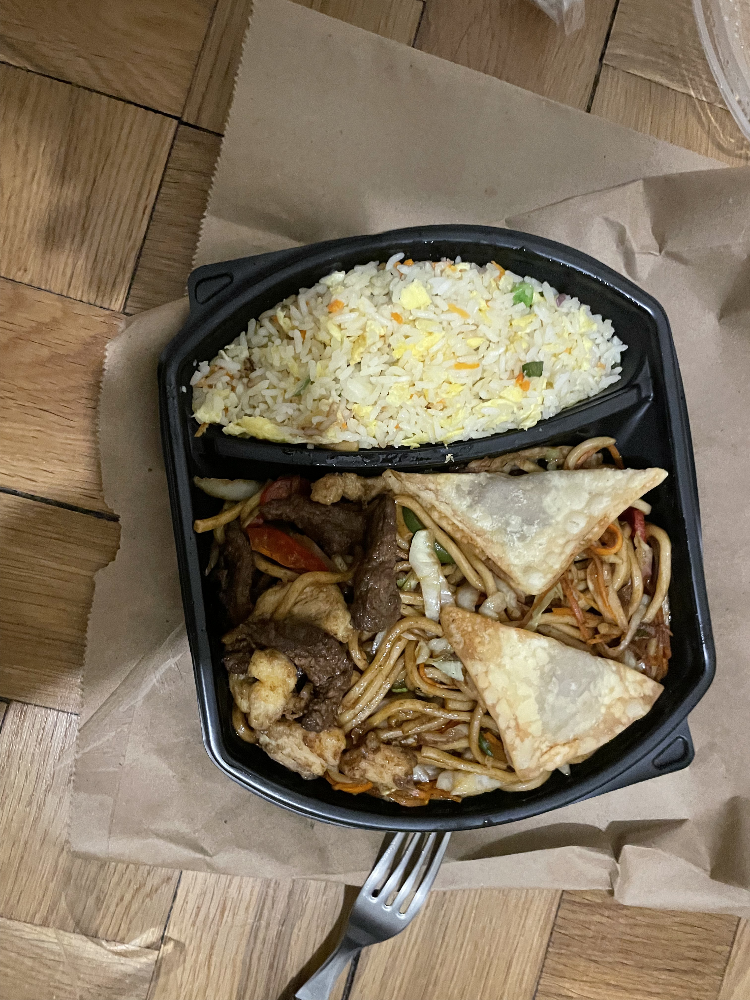
The meal of the gods
Rating from -10 to 10: 0.5
That meal was pretty good
Date: 25/05/2025
Climate: no clue
Location: the apartment
Title: Math part 2
Same as yesterday. Except I played less miencraft with Ethan because tomorrow he has school
Rating from -10 to 10:
Date: 26/05/2025
Climate: No clue
Location: The Apartment
Title: How the hell did they substract that many points from my physics test like what???
I woke up and I see that I got a 4/10 in physics?????? Immposible because I definately didn't do that bad. I narrowed down 3 mistakes that I made in the entirety of this test. it was 3 questions in total. But there is simply no way I got a 4 out of 10. I'm going to appeal this grade 100% because this is ridiculous.
I also do a chemistry lab for the first time in the Italian Hospital. I do it with Fern and Bauti. Pretty cool. Not that much math today unfortunately.
Rating from -10 to 10: -4
Apparently all physics teachers suck, its a worldwide phenomenom
Date: 27/05/2025
Climate: Rainy
Location: Italian Hospital
Title: Kinda lost
I woke up and prepared, and now its raining. That's cool cause I could sleep quite well but also bad because I think that I am too tall for umbrellas to work properly. Also i've now completely understood all about the physics problem in the test. I've been progressively losing hope about getting some higher marks in the exam. THey are just way too strict with it. I bet that they put most of the points in the first question, which is the one I got the most wrong. Now I have to do a Chemistry exam about acids, bases, and equilibrium, a test about colligative properties, and now to add to that I need to re-take this physics exam. I got this. Also I forgot to print my Trabajo Practico, and I forgot to shave.
Also I slept bad and I tried to sleep in class but the teacher didn't let me. We learned about groups 13, 14, and 15, their properties, and some special elements, also the acids that they form and such. During break I got a brownie with Fernando while he talked to me about getting a girlfriend.
Not much happened after that
When I got home, I sent an
Rating from -10 to 10:
Date: 28/05/2025
Climate: Cold
Location: Italian Hospital
Title: Physics never happened
During math, people practice math, but I wasn't interested in that. I was waiting until physics so that I could ask the teacher how the hell they gave me a four. I re-did all the problems again. In the three question, I only did three mistakes,and one of them was a unit conversion issue. I seriously believe that the grading was unneceseirly harsh. However the physics teacher today didn't come, it seems that they are avoiding me. A student came by to tell us that the professor wasn't going to be arriving any time soon. He was sick or something.
So I went home, but I wasn't about to let this stop me from sent an email with my corrections, arguing that my grade should have been higher, and now its time to wait for the response of the teacher.
Rating from -10 to 10: 0
I couldn't do math
Date: 29/05/2025
Climate: Actually good(I like the cold by the way)
Location: Italian Hosptial - Apartment
Title: Doing some nice chemistry
Today we did some nice chemistry.
Firstly, we did some stoichiometry practice problems that were pretty interesting, but nothing I haven't done before.
In the lab, we absolutely destroyed copper using nitric acid. In the first non-concentrated solution, the copper started bubbling, but in the concentrated solution, the liquid turned green and the air turned yellow. We had to seal it otherwise the toxic air would harm us. I did the work with this new person that i have never met or talked to, but she seemed nice, too abd I never asked her for her name.
When I went back to the apartment, I decided I would go to Uruguay tomorrow to visit my friends and to try to make my cedula again. I was struggling in making the decision of weather to go to Uruguay today or tomorrow, since I had the date to make my cedula tomorrow, and if I leave tomorrow I won't have time to make it. However I decided it wasn't worth it missing an entire biology class just for my cedula, i could get it later. Plus I'll still try to get it the day after, maybe they'll still let me. Thing is, decisions like these all the time stress me out, i'm never sure of anything, and all this uncertainty is constantly killing me. I feel so stressed all the time.
I tried to study, but I am way tired.
Instead what I did this lab-hospital safety course that I apparently had to do, they just forgot to add that class into my website. I basically speedran the entire thing and I got it all right which is quite epic.
Rating from -10 to 10: -1
Date: 30/05/2025
Climate: Perfect
Location: Italian Hospital - Apartment - Uruguay
Title: pidgeons
For the first time ever, after getting on the bus to the Italian hospital, I met Mica. This is rare because Mica probably sleeps and wakes up at the right times meaning that she takes the bus way earlier than me. But today she said she slept sub-optimally. We didn't talk that much in the bus. But on the way to the Italian she informed me that there was still a chance I could promote biology if I manage to do well on a lab write up and the next exam. I also told her that I got a 4 in biophysics which I was not expecting. I haven't gotten a response from the physics teacher about my regrading, I have the feeling that I won't be able to make it happen, but I do intend to most definately get answers and explanations to how the hell they managed to substract that large amount of points from my exam.
And then something really funny comes up, Buenos Aires isa city, and like all cities, it contains pidgeons. An animal domesticated and shortly after abandoned by humans who used to use them to send messages, and thus now they remain on the cities. It's actually really cool how the pidgeons natural habitat has become the city, I find it quite amazing. Mica doesn't find it amazing because apparently she is terrified of pidgeons??? I ask her if its because of the diseases they might carry but she says that it doesn't have much to do with that, she just doesn't like how they don't get scared when humans go near. This leads me to believe she might be afraid of any animal. I scare the pidgeons away so that Mica can pass, they are actually quite persistant and they refuse to fly away, it's easier to scare them away in Uruguay.
So in class, 2 higher level graduate students teach their first class to us, I feel so special. They delineat the topic of the energetics of cells. ATP created through anaerobic and aerobic methods. It was actually a good presentation. at break I get a coffee.
For the lab, we have to figure out a set of reactions that is happening in some chemical system that the teacher has set up. He put yeast and sugar in a tank, and a basic solution with phenolphthalein in another thing. Then he captured any gas produced in the yeast tank and bubbled it to the basic solution. Now you might not know this if you haven't read the chronicle, but my IB internal assesment was all about measuring the correlation between hidronium concentration and the pressure of CO2 gas exerted on water. Thus I immediately figured out most of the key reactions which was the creation of carbonic acid and the carbonate and bicarbonate ions. It felt good.
After, a teacher reviews our Biology project, we are mostly good, we just need to revise figures and sources.
Once I got home, I ate some empanadas and I doubted upon weather I should leave to Uruguay or not, but I decided to leave at the end. I promised myself that I would work on math.
Rating from -10 to 10:
It's a lot, the Italian, the Math, I can't write that much lately, it's been hard to keep track of it all.
Date: 16/06/2025
Climate: Cold
Location: Boat
Title: Apologies and summary
Unfortunately, things have been getting out of hand, i've been far too occupied, and I've also gotten sick. Nothing much happened though. Lucas, Luca, and Dani are in Uruguay now, and I've hanged out with them a little. I also went to the afterprom of the current UAS seniors, it was not that good, but it was fun cause I saw chad, nata, sofya, and cuki. You might not know some of those. Honestly im sorry. I fell off, I was doing quite well but now I have a lot to do. Maybe now I'll pick up the pace again.
Yesterday I hanged out with Sebs and Lucas, Sebs told me about a cool dream where Lupi tried hacking his computer in Digital Society, but as a result, all the computers turned into dog computers and they sucked me, dani, and Lupi in them. Later that day, Sebs, Luca, Alex, San, and Chad had a dream about how to get us out. They had to find a fast flying car that was capable of quickly going to a restaurant in latahona where they can throw the hardrive into a hole. So they do that, except that on the way there with the car they finded me, apparently I managed to escape, but i was quite rouphed up from everything and I was walking by the side of the street. Once in the restaurant, Sebs encounters several people from his past schools. While burying the hard drive Luca gets sucked into another dimension where some non-human beings try to take the hardrive out of him, but he escapes that dimension somehow. Alex burries the hard drive, Lupi and Dani get out. And everyone is happy, except Sebs who wakes up with a star of david the next day.
Cool story, we ate chivitos, we walked around, and then we went to Obra where we stayed for a while.
Rating from -10 to 10: No clue what this even is.
Date: 20/06/2025
Climate: okay
Location: Rudy and La Pasiva in Arocena
Title: The football match
So Lucas invited me, Luca, Sebs, and Dani to watch a football match and eat Rudy burgers, the best burgers ever. Dani said he would come, but now, he told Sebs he won't because he is in the gym????? it's lik 19:30 right now. So I try to use some persuasive techniques to get him to come, like saying that Sebs is leaving tomorrow, not specifying that he is leaving to chile to snowboard with his girlfriend and he will be coming back in a week.
Then Sebs sends him messages, and Luca too. Dani says that he will come if someone picks him up. Luca tells him to go fuck himself or order an uber. So dani arrives uberwise. We all kinda dislike how much he didn't want to come here, but the fact that he came despite that is till really appreciatable.
We go to La Pasiva, they eat panchos, Sebs eats chaja, they have fun, we watch the match. I was honestly jaded so i don't remember much, but it was fun.
Also, I want to add that I had ordered a Salchichon de chocolate that came very late, and that was pretty funny.
Rating
Date: 29/06/2025
Climate: Cold
Location: My Home - Crepes
Title: Math End
I woke up nerveous, because today i will take the test to decide weather or not I go to Groningen or not. Also, my family is leaving to Chile at the moment, I will join them tomorrow since I can't go with them today because I need to take the test, also my grandmother is here. Finally, Sebs just came back from snowboarding in Chile with his girlfriend. You should be all caught up now. I am really stressed about it all.
Eventually I took the test, it was really hard, there were questions I didn't know how to do, it wasn't like the last one, it had very little calculus and a lot of geometry based problems that I didn't know about. I expected much more calculus than what there was, there wasn't a single quotient function problem which were the ones that I practiced the most. Overall I think I did really poorly, which is unfortunate.
After the test, I got to pick up Sebs and eat creps, I complain about the test on the way to creps. In creps we talk about how I saw The Eternaut, a new Argentine series that I really liked. I convinced Sebs to watch the Eternaut, and also coherence although he probably won't watch any of them. When we went to order, the guy from creps said hi to us since apparently we have been there enouph times for him to recognize us with a smile which was really cool and wholesome. I ordered a dulce de leche crepe with oreos. Sebs also talked about how he wanted to isolate himself from google because there was a new pewdiepie video about how he isolated himself from google. We also talked about our favourite movies, mines were coherence, the minecraft movie, and Bullet Train. Sebs' were Coco, The minecraft movie, and La Haine. We then talked about the cow in La Haine and what it could possible represent.
Then we talked about how its stupid for a man to say he hates all women and its stupid for a woman to say she hates all men. It's overall stupid to say you hate an entire group of people, since in that group there will always be bad people and good people, and saying that you hate all of the group just because of a few rotten apples is fallacious. Using this logic Sebs probably shouldn't hate the juice as much as he does. Sebs also watched interstellar and he said he was kinda dissapointed, but at this point that movie has been overhyped, I liked it too but at this point it's kinda too much.
Then we walked for a bit, but Sebs was too cold so I started driving him back home. We talked about music, and this series or movie called Gummo. Apparently Sebs had told Milla to watch Gummo, and then Milla, a while later after moving to finland, sent sebs a picture of her watching gummo. It's about a town that got destroyed by a hurricane or something.
Finally, we talked about our future, I'll probably stay in Argentina, all comfortable and good right here. Sebs is forced to go back to Germany, his girlfriend really hates long distance relationships though, and she is also ready to have kids and all since she is much older than Sebs. But Sebs isn't worried, or maybe he is but he doesn't show it. He just says "at this point, it's up to god". He said this was the case with me too, although after that test, i'm not sure even god could help me here.
Rating from -10 to 10: 0
Somehow, i'm not as sat as I thought I'd be about not going to the neatherlands. Maybe I have something better here. I need to find a way to make a move
Date: 30/06/2025
Climate: Unkown
Location: From Uruguay to Chile
Title: Expected Outcomes
I couldn't sleep like that because I was sad about the test. So I woke up really tired, but I managed to get to the airport somehow. My family is going to Chile to ski, and I must join them now. I bought some almond MnMs at the freeshop for sustenance. I also ate a chicken sandwich so I wouldn't die from malnutrition. In the plain, I saw that I got a 32% in the Math exam, thats unfortunate.
Eventually I got to Chile, it was pretty cool, I reunited with my family at the airport. My sister bought this pilot plushie for her boyfriend and she is going to take pictures of it throughout our adventures, his name is Ramon. It's my first time being in Santiago de Chile, I was supposed to go for SAAC Volleyball but Volleyball Coach Sebas(different person than Sebs) decided not to take me since I didn't have a specific position at the time.
Apart from the smog, the place was really cool, I liked how you can see mountains all around, unless you were truly far from the since the smog would start to take effect and prevent the visible light photons reflected by the mountains from reaching your eyes. Smog probably gets trapped by all the mountains.
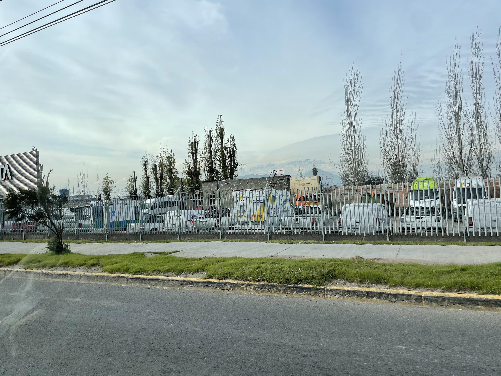
A photo of chile
We try to get our car, but it turns out that my mom reserved the car at 2AM instead of 2PM which is the current time. Now it turns out that chileans are actually the best people in the world because they don't use the stupid 12 hour AM PM system everyone uses, and they instead use the much more sensibleSo we reach the hotel, and then we go to decathlon which is like a sport store. We buy all the equipment that will protect us against the cold. I recently watched the series "The Eternaut" an Argentine series based on an Argentine comic about a sudden appearence of snow that kills you when you touch it. Since the snow kills you, the characters had to be very well protected in order to go outside, and with all the layers of clothing we had, we looked like the main character from the series. So me and my sister quoted the series a lot, actually it was only me because my sister didn't really like the series. My favourite quote is "The Compass is fine, it's the world that's broken"(In spanish its "la brujula anda bien, lo que se rompio es el mundo".
I eventually did get quite tired, we did some more shopping, I drank a chocolate milk with mint(worst beverage i've ever tried) and some matcha cookie(i don't like matcha I don't know why I did that to myself).
Then we went to the hotel and all, we slept.
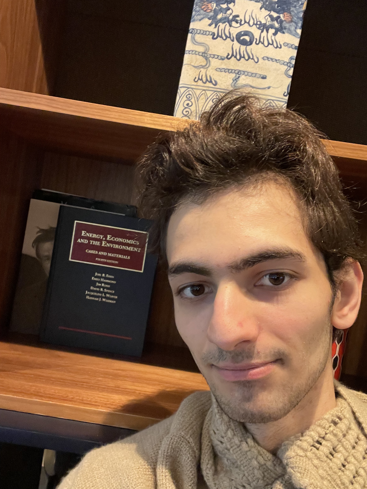
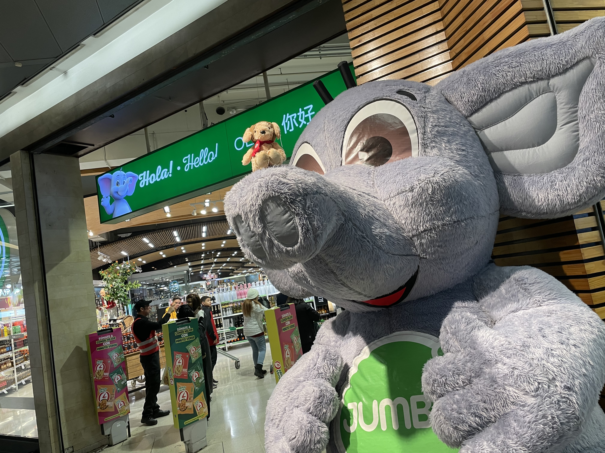
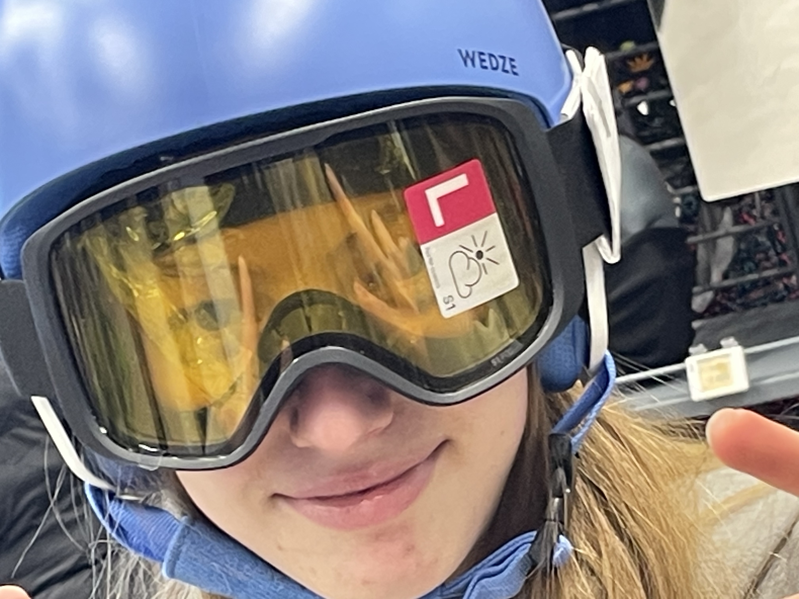
pictures of today
Rating from -10 to 10: 1
The MnMs were pretty good, the rest kinda canceled out.
Date: 01/07/2025
Climate: Cold
Location: Santiago de Chile → Valle Nevado
Title: The Snow
We woke up, and we headed to valle nevado, it was a long ride, but we got there eventually. There was a section of the trajectory that was particularly complex since a large amount of people decided to park in places they weren't supposed to park, which resulted in several drivers(us included) having a very narrow space to go through, to make matters worst, it was a two-way street. But we made it through this adversity.
We reached our rented apartment and we settled in, not much else to say. My sister started watching this series called adolescence which is about a boy that allegedly(it seems to me that he definately did) killed a girl. It had a very deep and meaningful scene where the boy is confronted by a therapist and it reveals a lot of problems that our current society has through the use of uncomfortable, sad, abd emotional interactions between the therapist and the boy. I watched squid game season three, a series were a bunch of people join the squid game and they play the squid game.
I tried going to sleep afterwards, but I couldn't, because insomnia struck me once again. So I decided to watch all episodes available in youtube of this series called "Metal Family", I am tired of explaining series I don't know if you figured it out after the amazing squid game description I just gave you, but I'll make one last effort.
Metal family, is a series, about this family.. that's metal. The father has some psychological problems pertaining to his past with his family, the mother is strong but dumb, the kid is dumb but talented at music, and the other kid is smart but not talented in music. They are all poor and they live in a world as the outcasts that they are.
Also look at this epic video, sebs is so cool
Rating from -10 to 10: 1
Date: 02/07/2025
Climate: Snowing
Location: Valle Nevado (Chilean ski resort close to santiago de chile)
Title: Skiing but I am tired.
I slept terribly last night, I had some cool dreams, but those cool dreams didn't give me the necesary energy I need function properly. Still, I gathered energy from unkown sources and I managed to get out of bed and go to ski with my family. It was quite great, I can still ski quite fine. We ate some nice soup with meat. However, there is a detriment to gathering energy from secret origins, I don't actually have any energy so I took any opportunity I had to just hit this pose and try to get some seconds of sleep in order to continue this epic adventure.
After that epic adventure, I watched squid game season 3 some more. Also, I talked to this chilean guy that I had met during SAAC Fine Arts 2024 in Uruguay, apparently he was Chilean which I didn't know until now. He was a pretty cool dude, and hopefully, he still is.
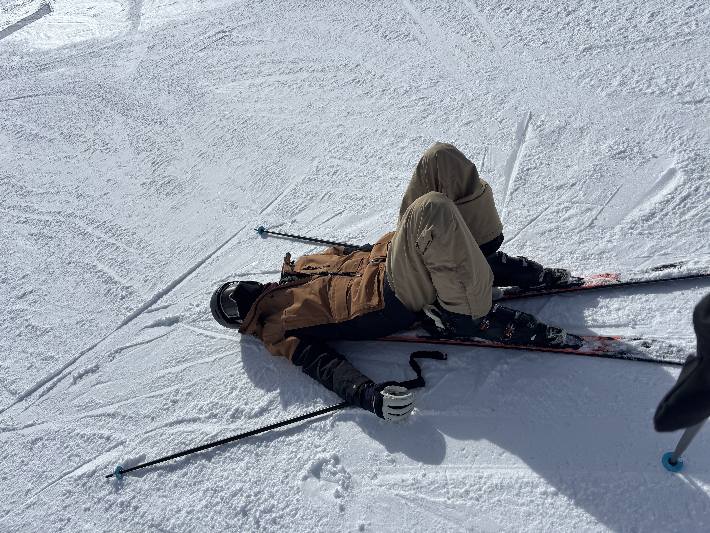
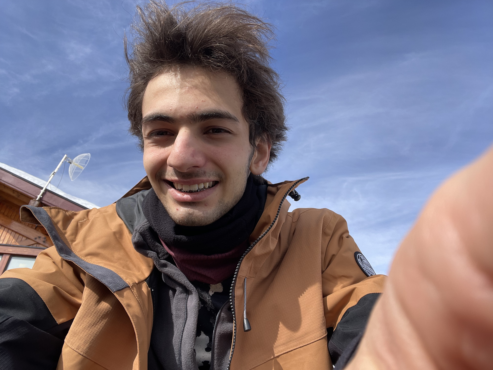
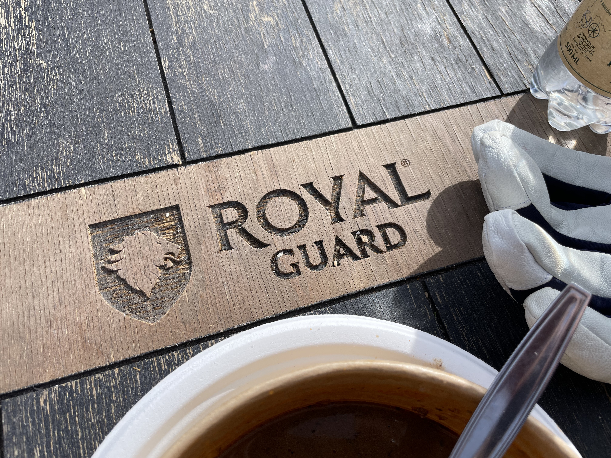
I have been thinking about deltarune so much, when I saw Royal Guard I immediately thought of undyne
Rating from -10 to 10: 3
I was jaded, but it was really funny because I kinda felt drunk
Date: 03/07/2025
Climate: Actually pretty hot
Location: Valle Nevado
Title: Rest
So I actually woke up too tired today, and I decided not to go to ski. Instead I spent some time working on this amazing website. I will soon add a second chapter
Rating from -10 to 10: 0
Date: 04/07/2025
Climate: its technically cold, but it's quite hot given that we are in the mountains
Location: Valle Nevado
Title: Ski back
I woke up late, and I went to ski pretty late. It was pretty cool that I got a text from Sebs about how he dreamt about jesus, can't wait to see what that's about. Also my grandmother texted me. So I made two eggs, and some vegetables. And then I went to meet up with my family to go to ski
I discovered this new path that we can take in order to avoid having to take a bus, our future days in valle nevado will be more efficient.
We skid, and my sister fell pretty hard against the snow. A lot of snow penetrated her layers of clothing so she was clothed, but eventually she warmed up and we went to a food truck. There was a pretty good hamburger, but our mother didn't let us drink chocolate milk.
Then we skeed more. The rides that took us up closed at 17, we tried to get one ride before the mediums closed, but we failed.
After that, we went home. My sister and I took an alternative route that used our skiing instead of the bus. And it turned out to be faster, although there is a part that requires us to use our feet, so it was sometimes more exhausting.
Also, just an update, it would seem to me that the neatherlands options are completely gone. I mean I could technically still go to the Maastricht University's Maastricht Science Programme, but to be honest with you...I ain't feeling it. I kinda like the life that i've been offered in the Italian Hospital, and I wouldn't mind continuing my study here. On the other hand, I could apply for AUC again next year, but I might feel like that's too much time lost, unless I can somehow skip some classes with what i've learned in the Italian. I don't know, I actually don't know, maybe I should just stay here, it's simpler. But I want to get to know another country too. I don't know. I guess theres a reason why the chapter's name is what it is. Who knows, maybe I will actually end up going to maastrich afterall. ONly god knows.
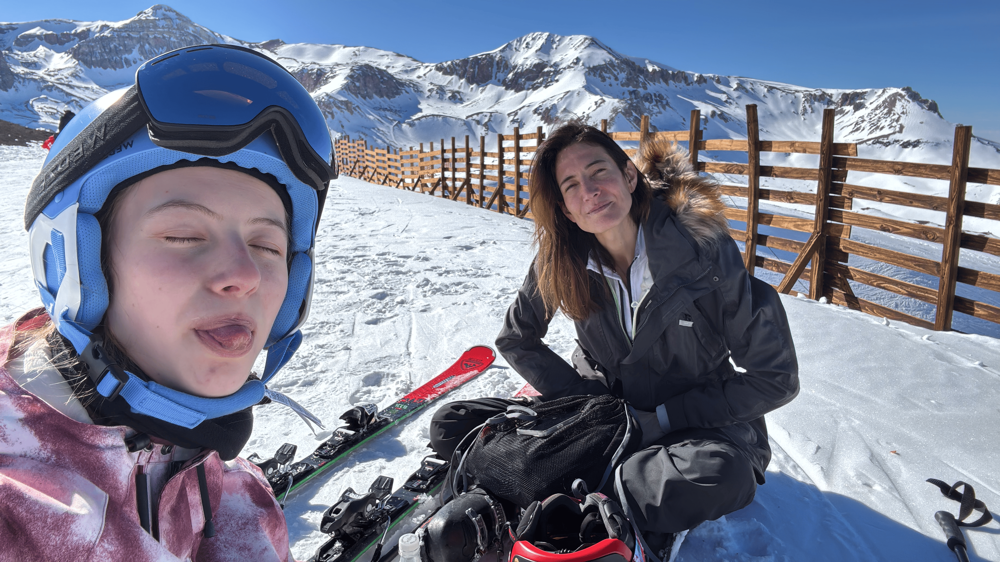
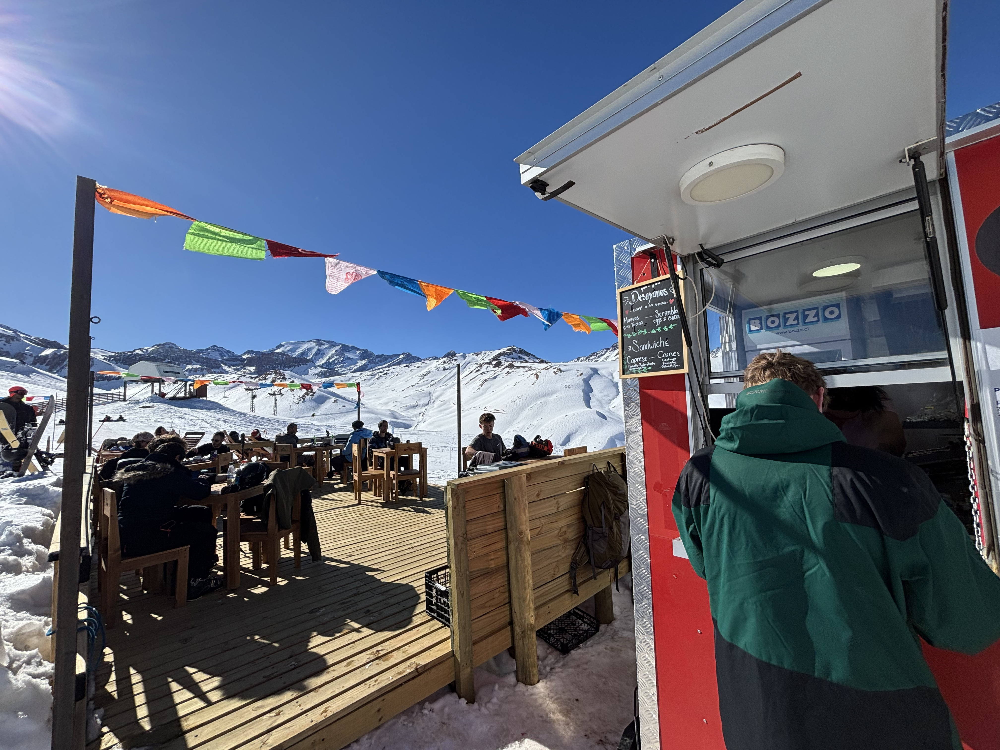
The place we ate at
Also, i am going to introduce a new segment to this epic diary journal thing.
Table Tube Gang Segment
You might have read this in some entry of this diary, but in case you didn't. but I am part of a group called the "Table Tube Gang" the most powerful group in the multiverse of madness. Composed of
- Megan(The Skinwalker)
- Timo(The Catalyst){aka:me}
- Fede(The Activist)
- Sebs(The Eternal)
- Milla(Jesus)
- Alex(The Detective)
- Ethan (The Artist)
The list is in order of activity in the groupchat. Please note that the last two are essentially honorary memebers since they almost never interact with the group unless the planets align correctly or something.
If you want to know the origins behind the name and the creation of this group, please look it up in the chronicle. But what you have to know is that we have an instagram groupchat where we talk about our lives, give each other advise, and share some secrets or updates we might have. This group is one of my favourite things in my life currently because everyone in it is very cool, except Ethan and Alex who never freaking use it unless they are bored out of their minds.
Unfortunately, most days we don'g talk through the groupchat :( So I am going to anything that happens in this groupchat from this day forward unless theres a secret obviously.
Today was the fourth of july, so I took the opportunity to congratulate Megan (she's american) and she said that she was very drunk and ready to make stupid decisions. That might sound worrying, but there is no need to worry about Megan because she is very awesome and can therefore handle any situation life throws at her.
Fede also shared that he is with his scout friends, Fede recently came back to Uruguay from the neatherlands, he saw Sebs and now he is seeing his scout friends before leaving to brazil. But then he'll come back in the 13nth and I will be able to see him and it's going to be epic.
Megan then says that he trusted a really drunk guy to drive her on a 4wheeler down some random trail and it was really fun.
Morale of the story: Though also risky, trust can be fruitful
Rating from -10 to 10: 2
It was actually pretty good
Date: 05/07/2025
Climate: Very undecided, sometimes it was cold, sometimes it was hot, sometimes it snowed
Location: Valle Nevado Chile
Title: Parva, but not
So we woke up today, it was really hard for me to wake up, but I somehow managed. All day Iw as extremely tired because of this. We tried getting tickets to gain access to a new ski resort that was close by, but we failed. So we just skied normally for the rest of the day.
There were some clouds in the sky, the clouds sometimes blocked the sun, which made it cold sometimes. Eventually, my sister got tired and she rested at a food truck in the mountains while the rest of us skied. Then I went with my sister to eat a hamburger with pickles and onion rings that was really good. It also got really cold because the sun went down.
After that we skied some more. Then we went down to the base of hotels because I wanted to eat crepes and Pauli wanted to eat waffles. I ordered a crepe with berries and dulce de leche and it was amazing. Then we skied more, and then we went back home. I immediately slept a lot. And that's pretty much the end.
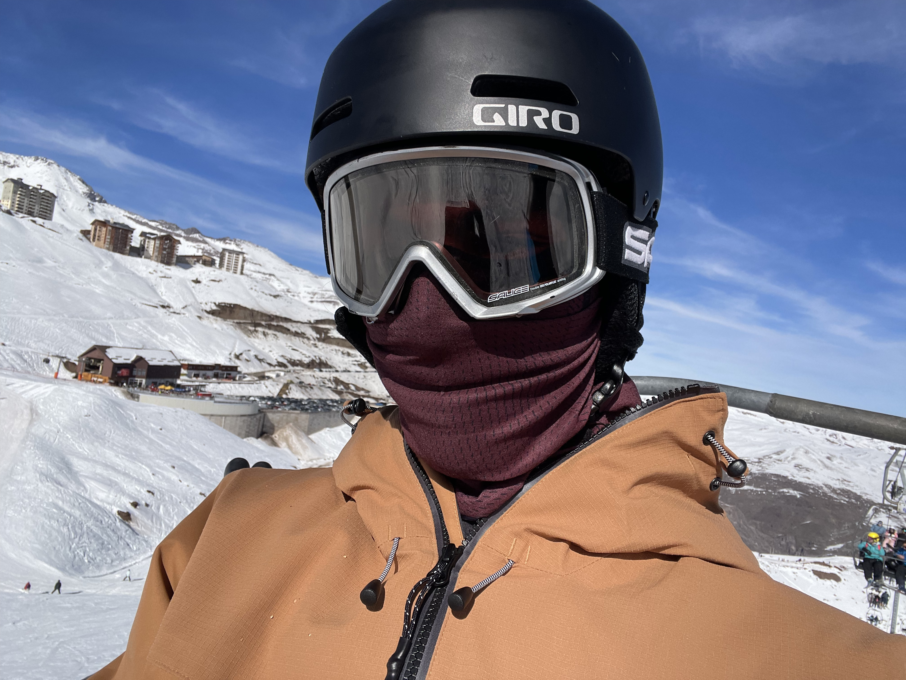
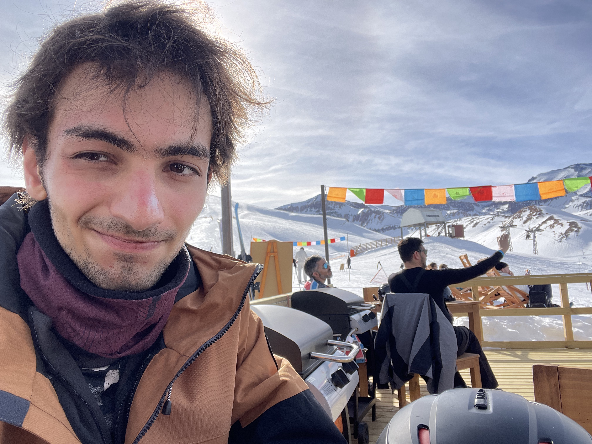
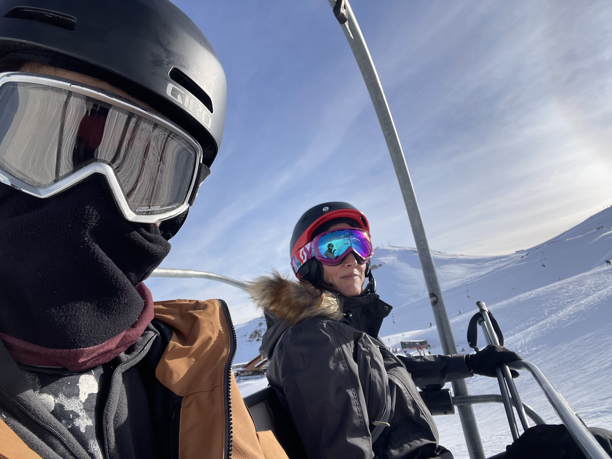
photos
Rating from -10 to 10: 1
It was okay
Date: 06/07/2025
Climate: Cold
Location: Valle Nevado
Title: The last full day
I woke up at 6 today and I prepared some toast for breakfast. Then I fell asleep again till 15. And after that. The ski chairs that carry you up the mountain close at 17. After my morningn routine, and getting ready for skiing. I go to the egg thing and I listen to Toriel's Fight theme in the egg. Then I meet up coincidentally with my sister and my father and we go down the mountain a final time.
Also, I talke to Sebs and he tells me that some interesting things have happened
Rating from -10 to 10: 0
Date: 07/07/2025
Climate: Hotter than what you'd expect at the top of a mountain with snow
Location: Valle Nevado - Santiago de Chile
Title: By Valle
Today we leave valle nevado and commence our return to chile. It's been great but all good things come to an end. After helping my mother prepare the bags, we went to ski one final time. We also ate asado at the foodtruck in the mountain, it was really good. After that we returned our skiis and stuff and we headed back to Santiago through the car that we rented.
It was a long car ride, but we eventually went to the previous hotel to get a bag that we had left there, and then we went to another hotel. The prices for the last hotel were too high this night for some reason, therefore we went different to a different hotel that was cheaper.
We had some issues with the internet at first but overall it was a great experience. I watched the series "You" with my sister, we finished season 2, I can not believe that Joe didn't stay with his sister, and I want Nellie to come back and destroy Joe. I can only hope however.
After watching you, we were going to go eat some sushi, but we decided not to since my father wasn't convinced that the place was that good. Instead we went to the hotel's restaurant I ate pasta with shrimps and onions, and my sister tried octopus for the first time. I hate octopus.
Then we went back into our room, where I tried defeating the character "Red" from an undertale fangame, I plan to buy undertale, deltarune, OneShot, and Hollow Knight once we get back from Uruguay. Except Hollow Knight because I suspect that there might be some kind of offer once Silksong comes out.
Then I fell asleep... whenever I'm tired, I get really anxious about death, that's how I usually figure out I should go to sleep
Rating from -10 to 10: 2
Date: 08/07/2025
Climate: Colder than in Valle Nevado somehow
Location: Santiago de Chile
Title: Going Back Home
We wake up, we get ready, and we leave. Quite simple. In the airport I realise that a few days ago at the coffee shop where I ordered the chocolate mint beverage, my credit card was stolen. I was very tired that day so I ain't surprised. Luckily, all of the purchases I didn't make didn't go through, so we good.
In the plane, my sister and I talk about the marvel cinematic universe. I think it's getting better now. Mica had told me that the Captain America plotline was pretty good so that's something I should look forward to watching.
After a while, I fall asleep
In Argentina, we can't leave because fog is dangerous to traverse through with boats
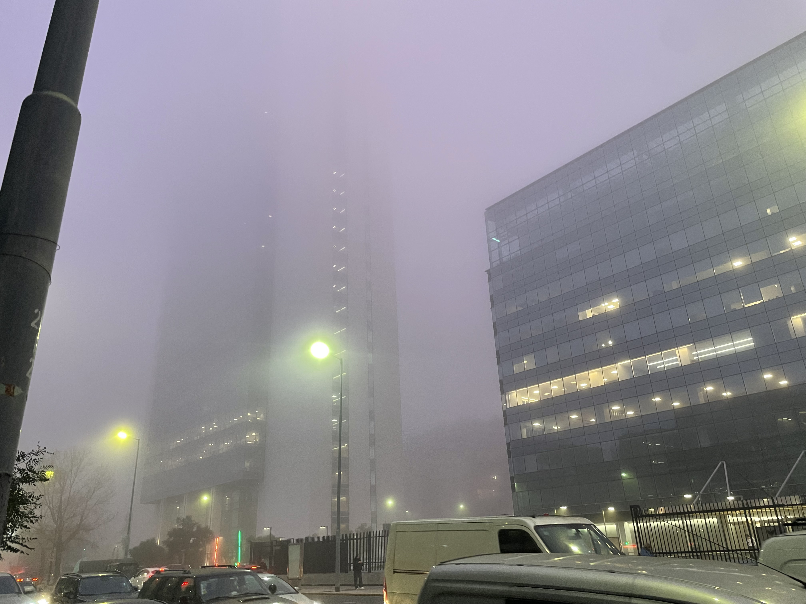
The freaking fog trapped us in Argentina
Rating - 2
I really wanted to go back
Date: 10/07/2025
Climate: cool
Location: Airport
Title: Sebs leaves to Germany
Sebs will be leaving to Germany today, I've been in chile lately so I haven't had many chances to meet this epic dude. I go to the airport and I wait for him. And eventually he comes and we start talking about some random stuff.
Now, during my time in Chile, Sebs told me via instagram messages that there have been some interesting developments.
Basically, Sofe kinda indirectly asked him out but not really. According to Sebs she said something along the lines of "we could have been something"
Now, for this, you may want some backstory. Back in 2024 at some point, Sebs and sofe were hanging out together all the time, and they completely excluded me from everything :( like they even watched la haine (Sebs favorite movie) without me. So at the time I made it all about myself in case you didn't notice, but later on, during the timeskip. Sebs told me a little secret. Sebs thought that since they were hanging out so much, Sofe liked Sebs(romantically) and thus Sebs asked her out. However Sofe said that she only saw him as a friend :/
Fast forward to a time during the timeskip, in germany Sebs got a girlfriend who's name was also Sofia, but I call Uruguayan Sofia "Sofe" and Sebs' girlfriend "Sofa" to differentiate between the two.
Fast forward further more, Sebs comes back to Uruguay and tells me and Sofe about his new girlfriend. At the time, Sofe and I were taking French classes, and during one of these classes we talked briefly about Sebs, I also remember Bruno being there somehow. Sofe says that she thinks Sofa was too old for Sebs. Sebs told me Sofa was 29, which is a lie(sebs likes to lie). He lied to me because upon telling Sofe that Sofa was 39, Sofe started bothering him about Sofa being way too old for him.
Even though she was older than what Sebs told me, Bruno and I ultimately concluded that as long as they are happy it good. Sofe kinda reluctantly agreed, which was god's way of forshadowing what would happen next.
Fast forward to this week were Sebs and Sofe are hanging out in an unspecified location at an unspecified time. Sofe tells Sebs that going for the first woman he has is a bad idea since you are limiting yourself to more experiences in the romantic world. A good metaphor would be like having a buffet of cakes, only trying one(and you liked), and then picking that cake as your birthday cake, even though you didn't try the rest.
This is a sentiment that Sofa had also expressed with Sebs, she was concerned about being Sebs first girlfriend since Sebs wouldn't have any other experiences with any girl and she felt like she was limiting him in a way.
But Sebs argued that they are both happy and both in love. And also what could he possibly be missing out on? Heartbreak? Sound to me like some unnecesary character development. Then Sofe says to Sebs something along the lines of "maybe we could have been something" which is strange line to say to someone that asked you out.
So yeah, we both kinda once again agree, that Fede was right. Fede and Sofe hate each other even though both are the nicest people ever to us. But I think that Fede has gotten the edge with this one since he hasn't asked out Sebs out while he had a girlfriend. It's kind of an unspoken rule to not do that, not because its taboo or anything, but because its so obvious.
Anyway, we also talk about Sebs' plan in germany. Basically to go to a university, do all courses online, focus as much as he can on the buisness with my dad, and get back to Uruguay as fast as possible.
He will also meet up with Lupi and Eitoku and do some cool stuff together. I don't remember anything else because I am way too tired. Furthermore, I forgot to take a picture:(
Rating 3
You will be missed sebs
Date: 11/07/2025
Climate: Foggy
Location: Costa Urbana
Title: Not Uruguayan
I have lived in Uruguay for as long as I can remember, yet I still don't have the Uruguayan nationality because making one is real touph for some reason. My parents never made me one since I always had a uruguayan passport because, for people under 18, the parents could get them a Uruguayan passport to make travelling easier. Ever since I turned 18 I do not have a Uruguayan Passport. So instead I have to get a residence permit. Today I got that thing renewed, it was epic.
Rating
Date: 12/07/2025
Climate: Normal
Location: Arocena Montevideo Uruguay
Title: The Fog and the Chinese Restaurant
Lucas wants to make a plan to do something today. He makes me chose the time and the place to do something which I don't like because I hate decisions, but it is what it is. I decided we would go at 21 to the Chinese restaurant that I had discovered with Sebs a while ago.
But before that, remember that yesterday I got my residence permit renewed, well the real reason behind that was to get my Uruguay ID renewed to, and that I did. I look like an absolute asassin. My eye-bags made the parts around my eye super dark, and combined with the fact I had a hoodie and a serious face. I look like im either on drugs or I killed someone(or both) but it could be worse.
Lucas informs me that Ethan will probably not be coming because there is too much fog and he doesn't want to drive in the fog. So I go to pick him up instead. He lives in latahona, in canelones, which is another department. Uruguay is divided in departments, much like argentina being divided into provinces and the United States being divided in states. So I go to Ethan, we recap real quick.
Basically, Ethan has been studying at the University of Montevideo in Uruguay, he is studying finance but he is starting to dislike certain parts of the career. He would much rather study something that has to do with physics or math or STEM in general... maybe even STEAM(Science, Technology, Engineering, Arts, Mathematics) since he is an artist too. However, he is afraid that his true ambitions won't provide him with any financial gain, specially his more artsy side. But I try to convince him to follow his true passions, mainly arguing that engineering is still a very respected career that will still be useful to him no matter what he pursues since it opens up many opportunities. He starts considering it, so I hope he ends up doing something he likes.
Then we pick up Lucas and we start heading to the chinese restaurant. On the way there, I forgot what we talked about. But it was probably really good
So we get there and Lucas is very doubtful about the place, he believes its a little bit expensive. I don't think its that expensive, but maybe we were raised under different economic circumstances that have shapes our perception of what is considered cheap or expensive. Or maybe he was just looking at the page that just happened to have the most expensive stuff such as "Camarones Cristalinos" which was over 1000 Uruguayan pesos. The waitresss comes along several times, she is really nice and she introduces some items in the menu that we might not understand. We take a lot of time to decide what to eat, but eventually, we land on something.
- I got soup noodles with chicken and a sprite.
- Ethan got chicken
- Lucas got rice
- And we all got some spring rolls to share (also Ethan and Lucas basically shared their meals)
While waiting for our food, I went to get a pear from my car. By the way, pears are my absolute favourite fruit, i'm aware it's unusual, but I love pears and I am really glad I got to eat one just now.
I don't really remember what we talked about while waiting for the food, but I do recall that upon obtaining the chopsticks for the food, I considered stealing them since they were really good chopsticks. And then everyone else argued that they might aswell steal all the cutlery and the plates along with the chopsticks. we didn't do any of that thoguh.
The food arrives, rather quickly. But unfortunately, my soup is too hot. I use the principles of thermodynamic equilibrium, and I pour the unused soy sauce that came with the spring rolls onto the soup in order to cool them down. I did that and waited a little until the stuff was actually edible. The meal itself looked pretty bad, presentation 0, but it actually did taste pretty good.
After finishing everything, Ethan insisted on paying everything and then we pay him back. He did this because he thought the the chinese waiter wasn't going to understand us that much. Last time with Sebs it was just fine though, but i wasn't feeling like argumenting I guess. So Ethan payed for all of us.
Then we all decided we wanted ice-cream. On the way to the ice-cream shops, we pass through the restaurant "Manzanar". A fairly good and fancy restaurant that me and my family often goes to when we feel like eating fancy. They have really good boniuelos de espinaca and faina and pizza. The barbacue ribs suck ass though, they really missed there. Lucas agreed that the place, although more expensive, was worth what it offered. Ethan said that the owner of the place was "kinda anti-semitic" (Ethan is jewish by the way), which was kind of interesting to me since my parents are good friends with the owner. I don't knwo how Ethan could possibly know the political stance of the owner of Manzanar unless the owner somehow knew his family aswell or someting.
Then, we went to las delicias to Lucas' request, but Ethan and I (the argentinian folk) wanted to go to fredo because we believed it was superior to las delicias. Both of these are ice-cream shops in Arocena in case you didn't know. Fredo is Argentine and Las Delicias is Uruguayan, and I must admit Fredo is better, even though I would usually side with Uruguay on these kind of debates.
I ordered a the chocotorta flavour with Chocolate chiped mint. I don't know why so many people hate chocolate chiped mint, but it is what it is. There is a 2x1 promotion, Lucas buys 2 ice-creams, one for Ethan and one for himself. Meanwhile I also buy 2 icecreams, one for myself, 0.5 for Ethan, and 0.5 for Lucas. They wanted the extra ice-cream, but I only wanted one.
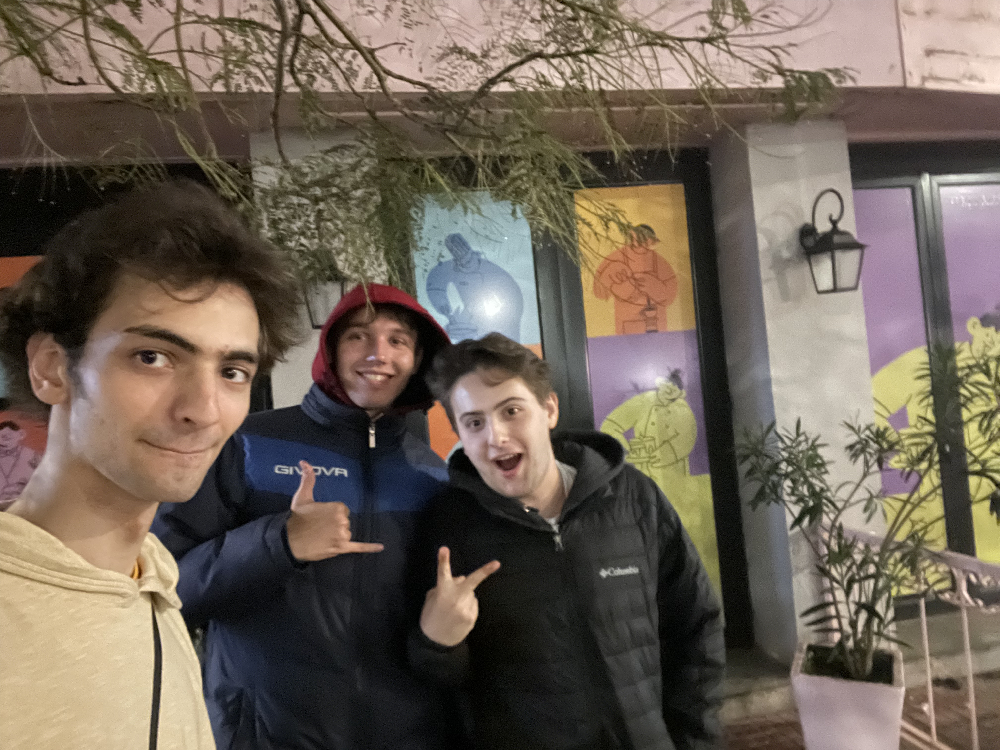
Us after ice-cream
At some point, I talked about something political with Ethan, and Lucas is not really a political guy so I intentionally asked him what his thoughts were on the sociopolitical climate of the United States and he said "it's pretty good, as long as I don't get deported"
After that, we walked around, talking about stuff. Eventaully we got to my car. I drove Lucas to his house, but he refused to leave until I shared a spotify playlist with him. Apparently these two being like my music, which I admire and appreciate. And also I apparently forgot that I told Lucas I would share one of my spotify playlst with him. So we spend a good 5 minutes listening to music so that Lucas can decide which playlist he wants. Eventually he lands in the playlist "Cancer moves" one of my best indeed.
On the way to drive Ethan back home, Ethan decides what playlist he wants. He says he likes metaphorical lyrics so I recommend some Cosmo Sheldrake classics like "Shiny is the view" it's really alternative music, but I really like it. Ethan said he liked it too, so I'm glad. Sebs and Dani would always jokingly make fun of me for listening to Cosmo Sheldrake but I really do love his music. Eventually, Ethan chose the playlist "Unspecified Direction"
I dropped Ethan off at his home. Ethan seems to have been very occupied lately. He hasn't been able to go to the hangouts like when Luca, Lucas, Sebs, Dani, and I watched a game in la pasiva. Also I don't think i'll ever repay him for the dinner, or send him the playlist, unless he reminds me too. But I guess he got 1.5 ice-creams for free, and I also drove him all the way to latahona twice
Rating 3
Date: 14/07/2025
Climate: cool
Location: Rudy and Arocena in general
Title: Encounter with Fede
So Fede is my friend that has gone to the Neatherlands to study something, I don't actually remember what, but I think it had something to do with international relations. He tells me about a lot of things that he has been through. Interestingly he tells me that he has been having trouble with an intro class which is kind of odd. Apart from that, he tells me that he has joined some club that has a fox logo, he is working for doctors without borders, and there is a hazing culture in the Neatherlands. Personally I only like hazing when its optional and consensual, like the goody SAAC haircuts that we used to do in our school, but that's not really hazing I believe, it's more like, a tradition.
So Fede also tells me about some common hazing rituals that they do, a little more extreme that what I'd like but Fede sounded like he had fun. I told him about the unfortunate math news and that I will stay in the Italian Hospital for this year. But I am considering applying to AUC again next year, we'll just have to see. He also told me that he was going to eat with his dad tonight, and he didn't like his dad that much. It's kinda weird to me because when fede came out as gay to his family, his dad was much supportive than his mother, so I asked him something along the lines of "Why do you hate your dad, didn't you get along before?" Fede then explained that he never really interacted with him that much before, but lately Fede's parents got divorced and I remember Fede at some point complaining(rightfully so) about his parents using him as a bargaining chip, and his father refusing to pay for his college. So maybe it has something to do with that. But whatever the case, I didn't insist for further information since I thought it might make Fede uncomfortable. Fede said that since he is paying for half of his rent, he has to act nice towards his father. He also told me that his father suggested for Fede and her older sister (who is also studying in europe) to come back to Uruguay and work to help the family (Fede's sister is like already 3 years into college to that suggestion is kinda crazy from any standpoint really) So fede definately didn't paint the greatest picture of his dad today.
After eating Rudy burgers, Fede remarks how much the Rudy burgers fill you up. And by that he meant that the burgers absolutely destroy your hunger, but they are really good still. We went to walk around arocena, I showed Fede several parts that have changed, and I also noticed a new ice-cream shop called Lucciano's that I haven't seen before. I showed Fede the Chinese restaurant, the cafe "Le Pain Quotidienn" and some place else.
Then Fede left, we both said that we should gather the entire group together to do something. And while all this was happening, Fede texted the UAS Class of 2024 groupchat, a groupchat that I will now be referring to as the Class Groupchat. Mili and Angie seemed like they wanted to. Fabri and San also, and Martina too, and Lucas. So everything was going well. Also another detail that I forgot to mention is that I met Fede's grandmother at Rudy and she was really nice.
Rating 2
It was real nice re-uniting with Table Tube Gang/Mr Williams Fan Club member Fede for the first time in a long time.
Date: 16/07/2025
Climate: cool
Location: Irrelevant
Title: The Epic Asado at Angie's house
To today was spent organising the Asado that is going to happen at Angie's house, if you look at the last event, Fede wasnted to see everyone again before he left Uruguay once again, so through our Class' groupchat, he suggested we make an asado or something. Angie offered her house and everything was going according to plan. I spent the day re-involving myself in a project that I started a while ago, it's a song about the class "Theory of Knowledge" that I took in the IB with Mr Turner. I also went o buy food for my dog, and I played this cool game called Dead Cells which I bought in 10/07/2025 during the last day of Steam's summer sale.
Overall it was a pretty good day, until Angie said that since she is leaving the house tomorrow, she won't be able to clean the barbacue, so we shouldn't do an asado, instead we should buy pizza. Okay, you know that's not that bad, the main appeal of the hangout was only to see everyone again so it's fine.
Then Angie says that it ain't happening, no what when no why, she just said "Oh sorry, it can't be done at my house. Now this event was planned to happen at 21:30, and she canceled the whole thing at 20:28, which is straight up criminal behaviour. I was annoyed, Fede was mad, Lucas simply knew that this was going to happen, and Fabri is fuming. So Lucas still wanted to do something, so we went to Arocena to get some Shawarma. I mean, I got a shawarma, he got a burger. And then we went to get ice-cream at Lucciano's, the new ice-cream shop that recently opened up. I payed for Lucas' ice-cream, so he owes me an ice-cream now.
Rating 1
Angie's switch up was crazyyyyyy, with probably about 30 more y's. How are you gonna just dip like that with only 30 mins of anticipation and absolutely 0 reasons. Maybe she had a secret reason, like she had to transform into a superhero to fight crime or something. But that's a theory for another day.
Date: 17/07/2025
Climate: cool
Location: Rudy
Title: KFC
So today, during the day time, I went for a walk. But during the night time, Lucas wanted to hang out. I suggested kfc, however, it got closes after 22:00, so it was already too late since it was 21:30 and we wouldn't get ther in time. We decided to go to Rudy instead, and my sister joined the party along with her friend Thomas.
In Rudy, we talked about the new superman movie, last time I was with Ethan, he expressed interest in watching this movie, and he invited mono to go and watch it. Unfortunately, Mono is not interested in the slightest on the superman movie and he apparently hates the concept of going to watch the superman movie. Initially I shared this sentiment, mainly due to the fact that are already about 4 or 5 superman movies(That's what it seems like to me but I'm not even sure) and all of them are kinda the same story to me, and now DC pops with another one? It seemed to me like they are just adding another one to the pile. However upon seeing the reviews online, I was actually really intrigued.
You see, sometimes people that lean to the right in politics will often call certain movies "woke" which is a term that was initially used to refer to those that support things like lgbt rights and women's rights and that now about the struggles of minorities in society (although calling women a minority is kind of a stretch[even though they still have a lot of struggles{not saying that normal people don't have struggles just that they have more struggles due to discriminations⟨ Ima be honest, I went into this tangent because I wanted to use these cool new brackets I found, but I do believe in everything i said ⟩}])
Anways, the logic behind calling someone "woke" was that they have been awakened with this new knowledge about the challenges faced by groups that suffer of discrimination and now they are more accepting of different reference frames, or perspectives I guess. But the right wing just associated the word "woke" with "those damn liberals" i guess, so they just started using the word "woke" as an insult. To me that's pretty funny because if they aren't "woke" it kinda implies they aren't fully "awake" which might explain some of their behaviour.
Why did I just tell you that, mainly cause I found it interesting. But connecting this back to SuperMan, i've started to check out some discourse online about the movie. Many people called it a very hopeful movie, and that is really nice considering that lately the world seems to be fully made of bad news. The hopeful tone that people claim can be found in the movie, is also found in the song "PunkRocker" by Teddy Bears and Iggy pop. The song is just three chords over and over and it's on F major which is a key I like. It starts with the root F, then it builds up tension by jumping straight to the Bb which is the fourth, building up tension and anticipating a return home. Then it goes to Dm which is the sixth degree of the scale only to return back to F smoothly, but there are no strong resolutions which kinda gives you room to think. Also the first two chords are not only major, but they also go from lower to higher which kind of gives a feeling of hope which is later countered by going to Dminor, perhaps to show that despite hope things can still get hard, overall painting a picture of someone that doesn't know what to do in a challengin world, but remaining hopeful nonetheless. I really liked the song.
But in the internet I also saw a lot of people calling it some "woke trash". Now these people are the same people that believe pretty much the opposite of what I do, such as the insane statement of "misandry is more prevelant than misogyny" therefore it is safe to say that if these people hated the movie, I will most likely enjoy the movie. Safe to say i am ultra invested.
So I tell Lucas about this, but unfortunately, he just ain't interested. I ask Thomas, and apparently he has seen the movie and he says it was great, Lucas is still not convinced though.I will try to get people to join me in the watching of this movie somehow.
We spend most of the time talking about teachers, some of whom have left the school, some whom have come to replace those who have left.
Really cool stuff
Megan sends some videos of the past, videos I personally never saw. Sometimes I feel like the outcast of this group, and then I remember Ethan is here too.
Rating 2
Date: 19/07/2025
Climate: cool
Location: Cinema
Title: SUPRE MAN
Yesterday, I bought tickets for Fabri, Lucas, Fede and myself to go to this epic. I bet Fabri is never paying me back and Fede might pay me back in the future. Lucas will because he is staying in Uruguay for a while. My sister also invited Leti, Lu, and Agus. Some friends
So i go there and I arrive an hour early to eat burger king, and we all eat burger king. I learn that the onion rings are fire. My sister hasn't tried burger king yet, but somehow she didn't like it. Unforgivable. I think it's better than McDonalds. Anyways, we do that, and the Lucas arrives. Then we go get tickets, we wait at a table, and then Fede arrives. Fede is worried because if Fabri arrives too late, they might miss the ads that come before the movie. Fabri now leaves closer to the school, but all that means is that he will provrastinate leaving his house as much as possible. While Fabri is coming, we discuss the situation with Megan, apparently she crashed her car because she was speeding while the floor was wet(rain) thus it hydroplaned and went onto a ditch, Fede thinks that this was very irresponsible behaviour. Effectively, he does arrive 10 minutes late.
So we go to the movie, and we see some interesting ads. There was one about another "now you see me" movie that I am really not interested in watching. The movie itself was really good, here are some good things about the movie.
- It still felt like the classic superman
- The battle scenes were epic
- The dog was really epic
- The soundtrack was really epic
- It assumed that the audience already knew quite a bit about superman, making it easy to understand and allowing it to build more on other things
- It explored themes of war, politics, and media which are all really interesting and relevant to the modern world
- All characters have their own thing going which makes it so that it doesn't seem like they were all just plot devices
- I forgot how funny it is to have a villain be evil just because, in this case he just hates superman just because, and it's really funny, it's specially funny when he reveals he created an entire conflict in the middle east just cause he knew SuperMan would get involved and then he would have legal reasons to kill him.
- It was an incredible twist and a very nice switch up to the usual story to have SuperMan's parents say that SuperMan's original goal was to conquer earth instead of protecting it. My personal theory is that the robots intentionally corrupted the code so that SuperMan would turn out to be a good guy.
- I also liked the joke about the robots not having feelings even though they clearly did
- The part where superman sits with his earth dad, and he tells him that he is proud and he says something along the lines of "I think what you wanted the message to say means much more than what it actually said" which is an epic line
- Towards the end, the film kind of establishes that being a good person is essentially being human, and thus superman establishes himself as a human, using the song "PunkRocker" at the end while his life with his parents flashes before his eyes. The fact the song says "I'm a punkrocker, yes I am", I see it as him somehow reaffirming his humanity.
SO in conclusion I really liked it. After that, we all catched up. Fede said he was leaving on monday so that he could participate in an activity where he gets free beer
Fabri is going to try out for a team in italy fourth division. He plays soccer professionally and stuff
Also, I made chocotorta
Chocotorta
Megan Crashed her Car!
Apparently she was going 133 kilometers per hour in a highway, and then her car (named donatello) hydroplaned and crashed onto the grass, truly unfortunate. She has a court date, a speeding ticket, and driving lessons. THe way things are going, that's how the court is porbably going to turn out.
Megan Crash
Megan is all okay, when I texted her about the incident, I just kinda assumed she was okay because... like... it's megan we're talking about, she's awesome, one of the most powerful beings. But then she specified she was okay without me asking and now I feel bad. If you're reading this Megan, you are very underated
We also talk about how I could have been permanently banned from the US if I was caught trespassing with Megan that one time I went to visit her, and all of the evidence is posted on the chronicle soooooooooooooooo, might get perma banned some day.
Morale of the story: Great speeds on wet surfaces can be catastrophic
Rating 3
Date: 21/07/2025
Climate: cool
Location: Lon Tennis gym and pool - Le Pain Quotidienn
Title:
I went to the club Lon Tennis with Lucas today. We hit the gym, and we also went to the pool. In the pool. We talk about a lot of things in there.
After that, remember from last event, the Lucas owes me 250 from the SuperMan movie, coincidentally, the Chocolate Milk from Le Pain Quotidienn is worth 250 pesos. SO he buys me one of those. Then we both went home.
Rating 3
Date: 22/07/2025
Climate: Cool
Location: Uruguay, my home
Title: Sofe
Also, remember Sofe, I just assumed she left to France a long time ago. A stupid assumption given that Sebs told me they hang out shortly before he left. So I texted sofe and naturally, she was in Uruguay. I told her if she wanted to do something tomorrow and she said she was going to ciudad vieja with unkown character Julia from france.
It seemed fun so she said she would text me back, she probably won't because Sofe tends to be very unpleasent to create plans with.
Rating
Date: 23/07/2025
Climate: cool
Location: my home
Title: nothing much, just
Sofe unsurprisingly did not text me, so I texted her. She couldn't make it in the end. And I am 50% sure that's a lie, but sofe does get sick often so I'm not sure. I asked Lucas if he wanted to play paddle, but he was too tired. We agreed to play tomorrow. Finally, Ethan finally replied to the text message I sent him 2 days ago asking him if he wanted to play minecraft. He said no.
Also, I inscribed myself to the next classes of the Italian. Under the condition I inject myself with something in the future.
Why did no one reply :(
Also, Milla asked when I'm moving. I informed her of my situation and how I decided to stay in the Italian Hospital and apply to the same universities again next year in hopes i get into a better one.
No one replied to that message, not even milla, the one asking the question, why??? I thought it was pretty well written overall. I hate texting so much, it stresses me out, specially when I text to a group and no one replies. I feel like an absolute clown
Morale of the story: Appreciate your friends' presence while they're still there with you
Rating -1
Really didn't like how 4 people in the table tube gang left me on read, even an okay would've been better
Date: 24/07/2025
Climate: cool
Location: My House - Pharmacy
Title: Parent Birthday
Today I woke up rather early, I needed to do some blood tests to send to the Italian, and also just to check on my health in general. Me and my mother went to this cafe called "Otero" where I ate a nice sandwich, it was real nice.
Then I returned home, and I went to sleep, I had this strange dream
Danger from the past
So I am in uruguay, and I hear that Eitoku is coming to visit. Sebs and I go to the airport but Eitoku isn't there. Sebs says "oh he's done it again" and I'm lost so I ask him what he means but he refuses to elaborate. We go outside and I see some gigantic black spikes in the background. Now I know what these are, but if you don't, google "Nuclear Hostile Architecture"
Sebs says he went there and I tell him that we gotta go save him since he might die of radiation. Sebs refuses, so I must go alone. I go to that place, and there is some sort of tunner with an elevator at the bottom. I would soon realize that the spikes weren't a warning about Nuclear waste, they were a warning about something worse. Some kind of space time curvature creating some sort of alternate space. I reach this hotel in some sort of Alternate world.
I meet the residents, they explain to me that spacetime is breaking because of a wormhole that is buried deep in the earth. A huge squad of scientists were sent to fix this, but they failed. They built a gigantic hotel that has some backrooms aesthetics. They have all been here for years, but outside time is different and stuff like that.
Finally, they tell me there are levels and you can get to a different level by squeezing through walls and stuff. The hotel's first level has waiters going around with food and stuff. The scientists made themselves comfortable here, it was like their base camp for those who adventure into the backrooms(i'm just gonna call it the backrooms this is the backrooms)
So i find a gun, and I go through levels, defeating stuff, random monsters, I kinda just shoot them. But deep within the backrooms, there is some sort of contamination. The more levels I go through, the more contaminated. I reach a door with writing on it, it's the same writing than the nuclear waste writing to prevent future civilisations from advancing further. I am an idiot, so I advance further, at this point I forgot I was searching for Eitok.
So I find Eitoky, but he says the only way to get out, is to go further. I have no idea how to get out so just follow his instructions. I wake up after this, not a nice conclusion but welp.
I wake up and I go to the pharmacy with dad. I buy stuff for my hair and my dad goes to the doctor. I get some medicaments, I decide not to give money to a homeless man (if I gave him the 200 argentine pesos in my wallet he might have stabbed me), and we go back to home.
In home, I beat muffet for my sister who is trying to complete undertale, I already completed it. I ain't doing the genocide though.
Next, we ate sushi as a celebration of my dad's birthday
Rating 0
One of my mom's friend's son died of a car crash today, so that kinda countered anything positive
Date: 25/07/2025
Climate: cool
Location: House
Title: Planning
I messaged sofe and talked to Lucas, tomorrow we might go to ciudad vieja and do something interesting. Also, I texted Eitoku, Dani sent me a message explaining differentials, and Bruno sent me some of his beats.
Tomorrow might be great
Rating -1
I was tired all day because I didn't sleep, hopefully I sleep better now.
Date: 26/07/2025
Climate: cool
Location: Lon Tennis
Title: Lucas and Timo in the Lon Tennis
My mom went to Argentina, and she took the car, meaning that they had to rent a car, a manual car, and I like driving manual. So I went to eat a pokebowl at arocena, and then I picked up Lucas, and we went to the lon tennis. We went to the cafeteria of the lon tennis where I ate my pokebowl and Lucas ate two salame sandwiches.
After that, we go to the gym and to the pool of the Lon Tennis club. Me and Lucas are doing this quite often, we go to the gym, and then we go to the jacuzzi while discussing stuff. Today we had 2 topics of discussion. The first one was movies and actors, Lucas' favourite movie is Rocky. My favourite movie, is probably Memento, but it could also be bullet train, I also really liked Glass, split, and unbreakable, in that order. Lady Bird was also epic, the Menu was really interesting. Honestly I couldn't pick a movie if I tried, but Bullet Train is one that I would totally re-watch.
On the topic of movies, Lucas brought up how one time he invited Sofe to the movies because there was no one else in Uruguay at the time. Suprisingly she said yes, and they watched the movie Bad Boys. On the topic of Sofe, she never replied to me. Sometimes I get the feeling Sofe doesn't want to hang out and she lies or puts up a random excuse to not go somewhere, but she could simply say that she doesn't want to go. People that lie have a lot of potential for being insufferable.
Then I take Lucas back to his house.
Rating 2
Pretty cool
Date: 29/07/2025
Title: Alex and the TTG
Alex joins the party
Now the Table Tube Gang is a group composed of 7 members, but two of them (Alex and Ethan) are almost never active. Ethan also has certain disagreements with the ideologies shared by the rest of the group regarding the Israel-Palestine situation, aswell as the Donald Trump situation a little bit. Like, he once told me that he liked watching Charlie Kirk (unironically) and at first I thought he was joking.
But I am not here to discuss Ethan's political views, I am here to tell you that the other inactive member, ALEX, has become active. After graduating, Alex got together with Nata, and then immeciately left Uruguay to go study at the University of Toronto. Recently, he broke his knee while skiing with some friends that he met there. However not much else was known about him. The little information that I did know I got from Nata in my birthday during the timeskip. However, Fede decided to @ Alex in the Table Tube Gang, effectively summoning him.
Anyways, Fede asks for a summary, so I'll give you all of Alex's information condensed in a dotted unordered list.
Alex News
- Got knee surgery and is starting to walk again, woooooooooooooooooooooooo
- Has to wait 6 months for sports :( He was going to start volleyball in september
- Nata is going to study with him to University of Toronto, woooooooooooooooooo("wooooo" is a celebratory onomatopoeia by the way)
- He has found a group of chill friends and they go to AirBnB together and do fun stuff like poker and going skiing. However, people in the group eventually started dating, and thus the group killed itself.
Megan remarks how her previous group (The Swamp Dwellers[who i've had the pleasure to meet]) has also dismantled in a similar manner after Megan broke up with her ex(Although there were other factors at play too). On the topic of Megan, she also gave updates that are worth telling
- She is in a long distance situationship with a boy that has a lot of girl-best-friends and he doesn't want to commit to a relationship. Also he let's girls take "sluty pictures on his bike" and Megan described him as "a little whore"
- She got a job at ice-cream shop :D She starts training in August for Andy's Frozen Custards
So yeah, Megan's situationship looks like is headed down the drain, but Megan will be fine because she is awesome. Megan might get free ice-cream too. Also, apparently Megan somehow knew about Nata going to Canada. Megan reveals that Nata was initially planning to go to Virginia. However, Donald Trump got elected as president and he made getting a visa immposible, so despite Nata having scholarships somewhere in Virginia, she will go to University of Toronto, which is better since Alex is there.
How does Megan know this? I could've asked, but I didn't. you see, the Table Tube Gang is a group that was formed when several members of another group started to leave the school. This prior group was called the Back to the Bench group, and Nata was one of its members, according to her, she was the creator. However Fede never really liked Nata, and the rest of the members also didn't like her that much.
Now, this was all in the past, and personally Nata has been nothing but kind to me. My theory is that Megan now feels neutral about Nata, and Nata was trying to figure out how to get a visa and how to get a place to live in virginia. She called Megan for help, but then decided to go to Toronto.
Rating 3
The Table Tube Gang catch up was great.
Date: 01/08/2025
Climate: Thunderous
Location: Minecraft world
Title: CraftMine: Close to the End
Ethan and I play craft mine, an april fools version of minecraft where you create mines(worlds) and you go into them to get all the materials. Then you use those materials to create more mines, and so on.
You can also get upgrades, and last time, I got almost all upgrades. So now we started playing, and we immediately went to a mine, allowing me to get the final upgrade. So I officially got all upgrades.
Except not. There is a group of upgrades called "The School of Hard Knocks" which are all meant to be disadvantageous upgrades to make the game more challenging. So after getting everything else, I got those too. The final hard knock upgrade said "Thorns++". Now usually the enchantment "Thorns" damages anyone who damages you, so how is that supposed to be bad? It's usually helpful against mobs. So Ethan tested it out by hitting me. Then we both blew up.
Apparently, the game decided that Thorns++ would inflict damage on whatever hits me by exploding me, essentially killing me, and anyone who hurt me. This does include damage by drowning, falling, and pretty much any kind of damage. This would have been fine... except that the explosion destroyed the mine crafter, the thing we need to create new worlds.
So I told Ethan to use the console to cheat back the mine crafter. But once Ethan started cheating, he cheated to the extreme. If it had been me I would have just put the craft miner back in place and stop immediately. However Ethan gave himself a bunch of keys to unlock new rooms, which I forgot to exlpain what that means but it doesn't really matter. The keys didn't work because they need to be gained by completing mines.
Eventually Ethan got bored so we stopped playing
While playing, I told Ethan about the movie "Superman" and how great it is. I asked him why he didn't come and watch it with us, he responded "Reasons". If I had to guess, he probably head online that the movie is anti-israeli. But not really in my opinion. The movie simply portrays an objetively bad country bullying another country. However, the fact that certain concurrent events can be interpreted as the situation depicted in the movie will lead people online to draw a connection, and thus they will conclude that the movie is criticising israel. And then israel supporters who disagree with those people will simply assume that the movie is bad because it's anti-israeli.
I personally think that the movie is doing something more important. It's showing us how an objectively bad country would behave and how it would look like, aswell as how it might defend itself against online discourse. And I will admit, it did kinda remind me of the current Israel-Palestine stiuation a bit.
A cool trend
There is a cool trend going around, a group that has been seperated throughout the world create a video where each of them show themselves along with their surrounding country. Megan sees this and thinks its a good idea. Everyone agreed. People said that Milla should be the first to do it but she doesn't want to. I'll do it someday, and maybe Milla will follow.
Moral: Milla won't do it
Also
donatello died
Unfortunately, donatello(megan's car) had its airbags damaged, and it was too expensive to fix them, so it got trashed. Megan now needs to get a new fast transport device, she asks the Table Tube Gang if she should get a certain car she liked.
The car (I couldn't access the website for some reason)
Milla simply said "no" with no elaboration. And I know nothing about cars, and I couldn't even get int he website for some reason. So i instead asked about donatello, which is how I got all that information
Rating 1
Date: 02/08/2025
Climate: cool
Location: Portones Mall, Arocena
Title: The Triple Troubadors strike again
Ethan, Lucas, and I go to portones shopping to get something to eat. I get subway while the rest gets burger king. We talked about things that I don't remember. I also bought some alfajores for my father.
Now apparently Ethan had bowling in mind, but wasn't properply prepared. I have sensitive ears, so I always have earplugs with me just in case. However I didn't bring them today :( The music in the bowling area was too loud. So I suggested we go to a park, but they didn't want to. So Lucas just drove around. He drove to one of my favourite parks, but we didn't get off the car because Lucas didn't want to :( So we went to Arocena and walked around listening to my music
While walking, Lucas hit me, claiming he saw a yellow car. I look over to see the greenest car i've ever seen. But it was night time so I guess its excused. Eventually we return home and I forgot my alfajores in Lucas' car
Other things that happened is that we saw an orange car, it was pretty cool
Orange car
Megan goes car-seeing
So since Donnatello has died, megan goes with her parents to chose a new car. However her parents don't seem to be on board with Megan buying the car she wanted. the reasons are unkown.
Rating 2
Date: 03/08/2025
Climate: sunny cold
Location: British Hospital - Lucas' House
Title: Alphajor
I went to a doctor's office to get my back checked. He presecribed some medicamnet. Then i went to collect the alfajores that I forgot at Lucas' house.
I asked Lucas through my phone if he is at home, he responds through the Clash Royale groupchat(accidentally I presume) and we just start talking about alfajores through that groupchat
I also went to visit constan, and we said we would play paddle in the future.
Us in Constan's house
Rating 1
Date: 04/05/2025
Climate: cold
Location: House
Title: Italian Hospital part 2
Classes start again. I barely slept tonight so I could only last for the first class before dying. Pretty much for the rest of the day
Rating 1
Date: 05/08/2025
Climate: cold
Location: House
Title: Sick but quite productive
I wake up and I eat three eggs wrapped with a burito wrap thing. Today I have human sciences class. It seemed like an interesting class, but throughout this class, I realised I was feeling progressively more and more sick. I also forgot to inscribe myself to this class so that was a problem.
Later that day I went to do some shopping, played dead cells, talked to Fernando. All while being really sick. I had a plan to watch PointCrow's pokemon nuzlock with Ethan but it didn't work out.
Fede is in amsterdam with Sebs, Eitoku, Mati, and Lupi. They sent a video but Fede sucks because he sent it so it was only visible one time. And my phone's charge died halfway through so I couldn't even see the full thing.
Also, my dad went to do a presentation about why they should be allowed to search for oil in the ocean, it wasn't particularly well received per se.
Rating 0.5
It was alright, I don't like being sick. Today I was supposed to leave to Argentina, but I feel too sick for that.
Date: 06/08/2025
Climate: Normal
Location: My House
Title: The Spaghetti
So today, my most significant contribution to this earth, was the massive amount of bolognese sauce that I made. I like my spaghetti with a lot of meat and sauce, so I made a lot of sauce and I ate pasta just the way I like it. Here are some epic pictures.
Fernando made this pasta the picture for the "Grupo 1" discord server
Later that day, I talked to the "Group 1" discord server about the pasta I made and how delicious it was. Fernando wanted to try my bolognese
Rating
Date: 07/08/2025
Climate: cool
Location: my house
Title: Hamitch
Hamitch is someone who is working for my dad, and he come to an asado that we did. Not much else, he talked a lot and I was way too tired.
Rating
Date: 08/08/2025
Climate: cool
Location: House
Title: Pokemon
Me and Ethan watched a pokemon tournament, it was great.
Megan aquires a new car
Megan bought a new car, she bought a manual silver car and it looks really good. The bad news is that she is going to have to learn how to drive manual, the good news is that once she does, she will probably stop texting while driving because of the engagement necesary.
The car (yet to be named)
Also, my sister baked some protein muffins in my cup. She bought this protein powder that said it wasn't recommended for children, and then she used the cup that I stole from the balizas OEE. It had spots that were really hard to wash off,so while I was rinsing it, it slipped and it shattered. I spent the rest of the day putting it back together.
 The mug
The mug
Safe to say that I was mad at my sister for using my mug and also for eating that thing even when I told her not to because it had chemicals not recommended for children
Rating -1
Mugs -1
Date: 09/08/2025
Climate: cool
Location: My House
Title: Lucas' Birthday
I've been fixing my sleep schedule recently, it's working pretty well. I've also recorded a good video of Ultrakill where I played the secret greed level. It was really hard.
Mateo also came today.
My dad gave me a really big talk on how I should be working more per day. But I'm just so tired all the time, and its their fault too because they keep insisting that I should fix my sleep schedule. I am doing that, and then I'll do something i'll probably start doing more things. Because I just can't work while I am this tired.
Also, today is Lucas' birthday and he invited us to eat an asado. By "us" I mean Ethan and me. It was fun, I spent most the time talking to Ethan about stuff, perhaps making a video game about a dream I had a long time ago. Then we ate cake and went to sleep.
The table tube gang tries to decide a name for the car, we don't reach a consensus.
Rating -0.5
Lucas' birthday was fine, and it was fun chatting with the TTG, but my parents are getting more annoying by the second.
Date: 10/08/2025
Climate: Cool
Location: Rudy
Title: Stalin or Kettle?
I am probably leaving to Argentina tomorrow, which means that I am probably not going to see Lucas again for a while since he is occupied tomorrow (monday). Thus, even though I am extremely tired, I decided to eat some Rudy Burgers with him. I tried out the new bacon burger since Fede somehow knew of his existance despite being many kilometers away from Uruguay.
I didn't have the energy required to hold a normal conversation, so instead we spent most of our time playing a game called "Stalin o Caldera". Person A picks anything ever, and Person B asks, stalin or kettle?. Person A then must choose which of those two is more similar to whatever they chose. If it was kettle, person B then says "kettle or (another object)" and it keeps going until they say whatever Person A was thinking about.
We also went to crepes where I had the worst crepe I ever ate, it was a granola crepe. But the Granola flavours didn't mix well with the crepe.
Rating 1
I got to see Lucas, but I am sick, the burger was bad, and the crepe was worst.
Date: 15/08/2025
Climate: Normal
Location: My home, Portone shopping
Title: Bowling is peak
So, a new bowling place has opened up in portones, and I've been interested in trying it out for quite a while now. Today is the day. I woke up and I check my phone to see messages from Lucas and Ethan about going bowling. So I search for my earplugs and I go to the shopping. I arrived later than Lucas and Ethan because I just took longer to wake up and prepare.
I made it to the shopping after a while. Lucas tried out the canton chino and he couldn't finish all the food he was given, which is a real testament to the canton chino since Lucas tends to eat a lot. Ethan went to the bathroom a total of 4 times somehow. And we played space team. Now you might be wondering, why aren't you playing bowling?? Because it opens up at 14:30, we're killing time.
Eventually bowling opens up, and we play, it was real fun. At first I was playing bad, but then I switched to my left hand and surprisingly I was doing better. But Ethan and Lucas had a greater lead than me, so I got last and Lucas got third. We decided to play again. This time I started of great, I got a strike on the first try, and another strike somewhere along the line. I did consistently good until my arm started getting tired, so I switched to my right. I still won. In the final one, Lucas won, and that's that.
Epic pictures
Later that day, Ethan and I decided to play this game that's been getting more popular recently. It's called PEAK. It's about climbing to the top of a mountain without dying, we didn't make it :( but it was a really fun game to play.
Rating 3
Date: 16/08/2025
Climate: Irrelevant
Location: My house
Title: Unexpected call
I was on my computer untill I unexpectedly got a call from Eitoku. He was with Mati and he told me how they had all just climbed a mountain and stuff. It was real nice talking to them after so long. He told me how today he climbed a mountain with Mati, and then he asked me if I was free in an hour to play among us. I said yes
Sure enouph, an hour later, mili, mati, alex, eitoky, and we all got in a call to play among us. I told Eitoku about the game "PEAK" but it was harder to get everyone to play it because it wasn't free. The games of among us were funny at times, there were new maps, and i got impostor three times, but I only won once. I tried to have Ethan join, but he didn't want to. Chad joined however, and it was great.
Rating 3
Good to talk to all of those people, unfortunately Lupi and Sebs couldn't join.
Date: 19/08/2025
Climate: Rainy, Stratus nimbus
Location: Uruguay to Argentina
Title: The Encounter
So I woke up, prepared myself, and went to buquebus, but something was off, there are wayyy too many people in here, doesn't make sense on a random tuesday. On the way to Argentina, I encountered none other than Nata who was on her way to Toronto to study medicine. We sat next to each other and talked about art, politics, animals, nuclear apocalypse situations, and many other things. While talking to her I absolutely forgot I was meant to join an online class I had about the history of medicine. Still I don't think I missed anything important. I also briefly said hi to Alex through Nata's phone which was pretty funny. Overall a pretty nice encounter. The boat took longer to arrive than usual, presumable because of the bad weather, apparently there is an early storm that even has a name... "Santa Rosa" It comes every year and its bad pretty much.
Also ther reason there were so many people was because there was some football match in Argentina, and everyone was going crazy about it. They were making the floor shake with how much they were stomping on the ground excited for their football teams. It was interesting
After we got out of the boat, we took a picture together. I am probably not going to get the picture later unless Nata randomly decides to send it to me.

(She did?!?!)
Argentina was not nice because it was raining and I forgot my umbrella, I had to go change dollars to pesos, and I had to get my bus card again because I forgot it in Uruguay. I got my money but I couldn't get my bus card because the place is closed. Then I went to the gym, it's a pretty bad gym but it is what it is.
I also informed the table tube gang about my encounter with Nata. Megan informed me in response about a girl who reminded her of Nata, she had the suspicion that this girl was having sex with Spencer(aka:motorcycle guy) every weekend at 3am, which was very oddly specifc and thus intriguing, but I didn't want to delve that much into other people's matters. Also apparently Nata has Megan blocked, which is odd since Nata didn't seem to have any resentment towards Megan. My theory is that Nata blocked Megan accidentally, or the other way around, like that one time I blocked Ayla accidentally and I thought she had blocked me. It's more unlikely because not everyone is as dumb as me though. I do succesfully divert the conversation into something about art, and it turns out that Megan still plans on selling hoodies with her art on them. I however think that a smarter buisness idea is to have other people pay her to draw on their clothes, that way she doesn't have to buy many hoodies and she is guaranteed a profit. I didn't tell her that because I didn't want to bother, but I feel like maybe I should've, I don't like texting in the slightest.
Rating 3
It was overall a better day than what I expected it to be
Date: 20/08/2025
Climate: Cloudy and humid
Location: The Apartment i'm staying in - The Italian Hospital
Title: Rushing
SO I wake up at 10 and immediately go to get my bus card to the shopping, then I go to the pharmacy to charge the card, and then I take a bus to the Italian Hospital. I take the biophysics test, the first question is easy, simple heat calculations. The second question involves an equation to convert decibels into sound intensity, something I don't remember how to do. And the last question is about partial pressures, which is relatively easy. So for the second question I made up an intensity since I didn't know how to calculate it, and for the last question I accidentally used the wrong units for the ideal gas constant. But overall, I think I passed.
So then I went to get some empanadas, then I went to the gym, and then I did nothing for the rest of the day. Well did talk a little bit with Ethan about doing something when I return to Uruguay this weekend.
Also for some reason I feel like everytime that I talk in the Table Tube Gang groupchat I sound awkward. But I don't know if its just me. Tomorrow I'll try to talk to Mica
Rating 1.5
Things are probably going better than expected.
Date: 21/08/2025
Climate: Sunny and cold
Location: The Italian Hospital
Title: The Morfology of Humans
So I wake up terribly, slept really bad, very not good, suboptimal at best, absolutely terrible at worst. Then I go to take a bus, but I forgot me wallet, so I rush back to get it, I'll be late. So far this day is really bad and it sucks. But when I eventually succesfully get to the class, it turns out I wasn't late because classes now start at 8:30 as opposed to 8:00. And this is just great news.
But it turns out that I was in the wrong group, so I'm still late to lab work. I enter the class and a teacher that I've never seen before is really concerned about me since I missed the first two classes, which by the looks of it, are essential to understanding the topic. Since I have no idea what I'm even doing in this lab, the teacher asks everyone if anyone is willing to help me guide me through the process of looking at tissue. Martina says she's willing to help me, though she admits that her knowledge is not that vast.
So the entire class Martina shows me things I don't understand while I read the powerpoints trying to catch up as fast as possible. We look at what I believe is bone-cartilage tissue and heart tissue, and I was able to identify what I understood is a bond between cells called an intercalated disc.
In the next lesson we learned about the heart, and I actually succesfully learned a lot. I learned about how it's located in the mediastinum. It has four parts, the right and left ventricle, and the left and right auricle. The blood starts at the left ventricle, where it gets pumped out through an artery, it goes through the entire body, then it enters the body through the right auricle, it goes to the right ventricle, it gets pumped into the lungs, the oxygenated blood goes to the left auricle, and then it goes to the left ventricle and it starts all over again.
After the presentation(which was done by an assistant/student)the teacher taught everything again, but this time I understood it better. After the class she told me to stay behind and to catch up on everything before its too late. I told her I will, but in reality I will only try my best, which will probably be enouph.
Then I went back to my apartment where I ate a chicken sandwich. I didn't really do exercise this time because I felt like my legs were falling apart from so much inclined walking.
Instead I did nothing the entire day.
Rating 2
Learning about the heart was surprisingly fun
Date: 22/08/2025
Climate: Normal
Location: The Apartment - Italian Hospital - Buquebus - Uruguay home
Title: Fear takes
So I woke up at 7 because I decided I wanted to. This gives me very little time to get to the Italian hospital before 8:00, yet somehow I actually make it. On the way there I text Nata the The IB Experience video which is currently the only way in the public internet to get to my website and thus read all of this amazing writing. The link is in the description but I am pretty no one is interested enouph in my life to read through all of this :( I also texted Sofe and asked her if she would like to do something this weekend since she is leaving real soon. And with that, I've texted enouhp for this bus ride.
So once I get to the Italian, no one is there. Turns out this class also starts at 8:30 instead of 8:00. Angelina is the only one there and she says hi to me. I met her yesterday, and so far I am so awkward with absolutely everyone, it's not even funny. I am terrified all the time, the social anxiety is insane. I don't even know how to speak, most classes I barely talk to anyone because of how terrified I am.
So I am pretty confused about my relationship with estuchi, nacho, martina, angelina, bauti, and juani. The only 100% confirmed guaranteed friend I have is Fernando, I used to have Pili too but she is gone. And Mica is another story that I haven't told you because I was embarassed. But I like Mica which has made it terryfing for me to talk to her, more on that later.
So the teacher arrives late anyways and she starts talking about ions for 4 hours while I try my best not to fall asleep. Honestly I think that I have good vibes with everyone, I was unsure about Nacho. I don't know if they think I'm an ass or if they just know I'm awkward. I wish I wasn't shy. Regardless, I do believe I was unsusccesful in not falling asleep at certain times. I did try my best but you can only try so hard.
Fernando posted a story
During break, we went to this 24 hours shop and I barely spoke to anyone because I genuinely can't speak to anyone for some reason. Maybe I can put some blame on the fact that I was way too tired to fight my social anxiety, or to gather enouph courage to talk to people. I then remembered that I missed Dani's birthday, and I can't believe that. It was the 19/08, so I tell him a late happy birthday and he replied thanks. Also my mother tells me that I was supposed to leave the entire appartment cleas by 11:00, but I leave the hospital at 14. This means that I need to get to my appartment quickly
Then I tried not to fall asleep some more in class, and I failed a little more. When class ended, I rushed to catch the bus, and a little girl stopped me and asked me if I could buy her candy from the candy shop. I said yes and I bought her a bag of gummies, like I thought the girl was homeless at first, but thinking back, she probably wasn't???? Also where were her parents???? like am I retarded??????? I am only thinking of all these things right now as I am writing this. I think I was way too tired too focused on reaching the bus fast but now I'm worried about this girl.
So Mica is waiting for the bus with her friend Nayla. Nayla tried getting on her bus, number 24, but she couldn't because it was too full. It's the first time I've ever seen that happen. Then my and mica's bus arrives, Mica goes to seat in the back when there were several seats at the front, so I just assumed she didn't want to talk to me and I sat at the front.
It also turns out that the new appartment that I am staying in is on the same bus stop as hers. So when she gets down the bus I also get down. But I wait a while for her to go forward so she doesn't think I'm chasing her or something. Then I go to my appartment, and from the distance I realise that she lives right next to me.
SO now I am very lost and I don't know what to do. I am too scared to talk to herrrr. But I need to get absolutely rejected by her if I want any resolution to this. It's going to be either a heartbreak or not(probably a heartbreak)
But if you think this is the worst, I go up to my apparment, everything is clean, and my stuff is gone. So I ask in reception and the girl there has no idea. So I call mother like 10 times but she doesn't reply. So I am here, letting time pass, 14:20, 14:30, 14:40... I have a boat to take at 16:00 by the way. I am calling my mother and texting her and she doesn't reply so I call my father but he has no clue about anything. There is a girl that is supposed to have my stuff but I can't find her anywhere.
Finally my mom replies and she says that I need to stay at the reception to receive my stuff. But nobody came. My mother is cursing, I am literally dying like today was reeeeeeeeeeeaallly bad. So at this point we both reach a conclusion, I shouldn't miss the boat because of this. Sure it's annoying that the airBnB owner probably stole my clothes, my chargers, my birdy bird, but I can get new ones. Except the birdy bird, can't steal another one probably.
So I go out, in search for a taxi, but then suddenly I get so mad at the universe. Today I was tired, my social anxiety was too much for me to talk to anyone including Mica which I am really sad about. So I need a win. I go back to the apartment ready to turn every stone, ready to search every corner, ready to punch the receptionist in the face if it means I'll get my stuff back. But that wasn't necesary(fortunately) because there was a guy with my stuff right there. So I take it. He tells me I shouldn't have left it there without saying anything and blah blah blah yeah bitch I know thanks for telling me, bye
I go the the buquebus through taxi, I reach it just fine. During the boat ride, I write this.Honestly... this has probably been, the worst day entry ever. There was nothing good about this day. At least the day I realised I failed the mathe exam I was in chile having fun, and the day I took the math exam I at least had the peace of mind that I was done with everything.
Rating -5
Today, my social anxiety suddenly strikes back harder than ever. I don't think I fell good at any point today. Actually, maybe when I bought the girl some candies, but now I feel like an idiot for not asking her where her parents are. Thats like the first rule in meeting-a-child-in-a-public-place 101 and I failed miserably. Hope she's okay.
Date: 23/08/2025
Climate: Normal
Location: Lara's Apartment
Title: Lara's Birthday
In case you don't know, Lara is a very enthusiastic person that I met when I joined theatre club in the chronicle. She was the manager of said theatre club and we became friends ever since. She has invited me to several events that she hosts ever since, it's really fun. It's usually her birthdays, halloween parties, or ocassionally random birthday parties. Eitoku was invited to some of these too.
So anyways, I come here, the only person I know is Sofya with a y, she is a person who is either shy, hates me, or just genrerally has bad vibes because she avoided looking/talking to me. The only interaction I remember having with her was during a halloween party
Sofya: What are you supposed to be??
Timo: I'm CapeMan!!!(a superhero I made up)
Sofya: Who's that supposed to be?
Timo:...a man with a cape?
Sofya:*Disaproves*
So I hate her with all my guts essentially. She doesn't seem to like me that much anyway, but she follows me on instagram for some reason. Also, I made some other friends, you'd think that a person like me would remember their name... why would you think that? Here is us playing jenga and other stuff. It was actually really fun to play Jenga.
Epic party stuff
Rating 3
Date: 24/08/2025
Climate: Cold
Location: Crepes and Arocena
Title: Bye Sofe
So today I am meeting sofe for the first and last time in a while. I drive to her home and she tells me how occupied she has been lately and how she is excited and nerveous for going to study in France. I tell her that I am also going to apply to go to the neatherlands again next year, she says its a good idea.
I then proceed to miss a turn and Sofe doesn't trust me anymore so she continues the journey giving me directions even though I know where I am going, she even explains to me how to park and I jokingly say "I passed the driving exam too, you know?"
Then I eat a sweet crepe, Sofe ate an asado today so she is very full, even though she wanted a crepe. We first talked about love, its a whole unexplored area for me because I have only liked a total of 3 girls in my entire life. One of them was in kindergarden when we were kids so it might not even count, but the latest one is Mica from the Italian hospital. Sofe says a lot of things about love, but I am writing this a week after so I don't really remember exactly what she was on about. She has had many relationships so she is experienced, maybe I should have taken notes or something, but in her state, she said that she is absolutely done with long distance relationships, ever since the Lorenz disaster.
And I just remembered, she said that in a couple, both people's personal goals had to be somewhat aligned so that both would be able to travell a similar path in the future and no one would have to sacrifice their personal goals. That's a smart philosophy (PhiloSofey)
Then Sofe starts talking to me about this game similar to chess, its called Go and its chinese. She told me about how she beat the best AI in go.com but then her dad beat her in his first time playing. So either sofe is naturally talented, and her father is even more talented, or Sofe sucks and the Go bots suck more.
Then we went to get ice-cream, Sofe got the Dubai chocolate ice-cream and I had just eaten a massive Crepe with milk caramel, oreos, and white chocolate, which is enouph sweets for two weeks. While in the ice-cream shop, we talk about several things. I mention to her that Mica is strangely afraid of Pidgeons, and then we start talking about pidgeons and how humanity domesticated them only for them to be abandoned to roam the cities. Sofe found it kinda sad, but I find it cool that you can domesticate pidgeons. Then Sofe showed me that you can domesticate bees which was really cool. We also talked about your how your stomach's microbiome can define your aquired tastes.
After a while, Sofe decides she should get going and I agree. She directs me to her house(even though I know how to get there) and I see her for the last time in a while.
Also Ethan is sick so we couldn't play peak.
Rating 3
Not bad
Date: 27/08/2025
Climate: Normal
Location: Argentina
Title: Medical Exams
So I am now in Argentina, my mom and I go to the Italian Hospital so I can do some medical exams, specifically and echo-doppler exam, which uses soundwaves to see my tummy. The echo-doppler looked alright. Also this specialist from the Italian Hospital saw me and she might start monitoring me and my crohns disease.
Then I went to class, but it turns out, today's biophysics class is online. So I went to the library and I took the class there. Honestly it wasn't all bad.
I then went to my home and slept.
Rating 2/
Could have been worse
Date: 28/08/2025
Climate: I don't even remember
Location: Apartment-Italian Hospital
Title: The Happiest I've been in a while
So, we had morphological sciences and I arrived kinda late. Today we are looking at the lymphatic tissues and organs. There is this specific lymphatic organ called the thymus, responsable for creating T lymphocites. Well guess what, in Spanish, the thymus is called the Timo. So the entire class they keep calling it Timo and everyone keeps making jokes with that, it's really funny.

You can see the thymus if you try hard enouph
I still need to pay attention and learn about the different tissues, but here comes the best part. After class I went to the bus and I talked with Mica :D It was so great, I somehow got the courage to ask her for her instagram, it was great. It also turns out that my airbnb is right next to hers, so I ended up walking with her to ehr apartment. I learned she used to play hockey and basketball and that she is usually just good at tackling people, which is why she isn't good at volleyball, she can't tackle people there. She also told me that she likes looking at pinterest for room interiors and stuff. Honestly it just made me really happy to talk to her. I found it kind of strange how when we got to the bus the she said "bueno, me siento contigo" which translates to "well, I guess I'll sit with you" so I don't really know in what tone that was but yeah. It was cool
So then I tried studying chemistry with Fer and his friends, but we failed. I ended up playing some chess with estuchi where I made some epic blunders.
Rating 4.5
Yipeeeeeeeeeee I have her instagram!!!!!
Date: 29/08/2025
Climate: Normal
Locations: Apartment - Italian - KFC - Buquebus
Title: Back to Uruguay
I woke up thinking it was late, but it wasn't that late. I had already packed my things so I just went to the bus, but I took a while double-checking. I get to the Italian Hospital and we are doing some lab where we are seeing some techiques that are used to try to identify ions in solutions. I work with Adriel and I'd say we did a pretty good job.
Anyways, after the lab is done, I go to anearby KFC. I didn't like it that much. But then I realize, I can't go back to the apartment because I already checked out, and I have my suitcase with me. So I just go to the Italian and I spent some time writing an entry for my website. This is also good because I might get to talk to Mica on the bus back home.
Unfortunately, sometimes all seats are taken, and Mica and I don't really sit together in the bus, I guess we could stand close to each other and talk, which we have done in the past, but looking at her I'm not sure she was in the mood for talking??? And also there wasn't much space in the first place. We were both kinds awkwardly looking around avoiding eye contact for the entire trip, or at least that's what it felt like to me. I wish i could read minds because she is either thinking I am so annoying or she's just also nerveous, or she doesn't know. I'll surely tell you that I as nerveous as they come.
So then I went to buquebus and left the country.
Rating 1
I know what I must do next week. I am going to try to ask her if she wants to hang out to study during the first two days with online classes. Worst thing she can say is no right? All this time i've been thinking that I am being super obvious that I like her, but maybe i am not. Maybe she doesn't notice I make sure to take the same bus as her, or the fact I always use mouthwash to make sure my breath doesn't smell bad, and maybe the fact I asked her for her instagram is like a normal thing to do??? Like duhhhhh
I say this because she most definately hasn't given me any signs she likes me, but I have heard that this signs are extremely subtle. Still, I am a really perceptive guy (according to me) so I think I'd usually be able to tell right? She only talks to me when its convenient, like when there just happens to be 2 seats in the bus that are free, and shes like, well I guess I'll seat next to you. But here I have a plan.
So week, I have to make a move, the ball will be on her court, and it'll be her decision to chose to do whatever. If she says no because she can't, maybe I'll try one more time. If she says she doesn't want to, well played I guess. Honestly, lately, i've been feeling less shy. I don't know if it's because I am getting used to talking to people in spanish and stuff, or because the sleep depravation is disintegrating the anxiety out of my brain.
Date: 30/08/2025
Climate: Sunny
Location: House - La Madriguera - UAS
Title: Planning
So, I woke up and me and my mom went to a coffee shop. I mostly talked to her about Mica. I showed mom a picture of her that I found on Instagram and she seemed happy. I also talked to her about how Mica said "well I guess I'll sit with you" and she said that it was probably good vibes not bad vibes. Honestly, what I am thinking right now is that I am going to die someday, and so is everybody else, so if Mica doesn't like me, it ultimately barely matters so I might aswell risk it and try to get close to her, even if it does mean that I might end up looking a little bit creepy. It might be bad that I have to tap into an existential crisis for a source of motivation to ask a girl out, but hey
On a sidenote, I went to a sleep specialist that said I might have depression, not cause Im sad but because I lack motivation. So actually its not that surprising that I might have to tap into cosmic sources of motivation to do simple tasks. Next week, I am sure I'll ask Mica to study or do something. It's so weird, I have spent so long without being in love with someone, I'm absolutely all out of practice, ive never even had practice, i'm making it up as I go.
On other news, I visited UAS for the first time in a while, it's a cool place, not much has changed. I saw an amazing art piece by probably the best drawer alive today, Vera Mozharovskaia. genuinely insane talent. She's gonna be one of the great ones. Sebs also sent me some weird reel that I didn't fully understand.
Vera made this, she is too talented for this earth
Rating
Date: 31/08/2025
Climate: Irrelevant
Location: My house
Title: Peak
Today, I played peak with Ethan, and it was real fun. The first run, I immediately died trying to make an immposible climb. Then Ethan died in the tropics. The second run we got a little further into the tropics. I've been playing a lot of peak by myself, trying to get all the achievements I could possibly get all by myself, and I did so succcesfully. So now I know all about peak and its many achievements. I told Ethan about the mycology badge which you can get by eating all the non-poisonous mushrooms in one run. So we kept climbing the tropics until I fell and I died. Ethan also fell and also died.
For our last run, we needed to start playing seriously. "Okay, we are locking in, we are going to the trenches, we're getting-" Ethan cuts me off by shooting at me with a blowdart gun. There is not real reason for this item to be in the game either than to shoot your friends but I guess its funny.
So we made it past the beach, and then we were in the tropics. These tropics are the hardest tropics ever, I am completely serious. In all my playthroughs i've done, the tropics have always been the hardest biome, but they've never been this hard. I saw some place to go by using a tree, however I failed to grab onto a tree and I fell to my death. I followed Ethan on his way up as a ghost. I don't remember much about what we talked about but I do remember I told him about the "leave no trace" badge which you can obtain by using no items. We definately used some items here. By the way, we were playing in ascent three which is quite a hard difficulty.
Ethan made it to the top, and he revived me using a mysterious scout statue. We ate marshmellows together in a campfire that was set up. There was supposed to be suitcase there to provide us with materials, but it unfortunately spawned at the top of an unreachable tree. As we lit the campfire the wall of fog cleared to reveal the next biome, The Mesa. While we were in the airport Ethan had asked me how I got my bing bong beanie, I told him that at first I thought I had to sacrifice bing bong to the kiln, but then I figured out I actually had to sacrifice golden bing bong to the kiln. Golden bing bong is accesible through a hole in the mesa that leads to a tomb. Ethan really wanted to find golden bing bong, and when we saw the hole right there, close to the beginning of the mesa, we had to go.
So our journey starts by immediately climbing down the "Devil's Crevice" as some people refer to it. We made it to the entrance of the tomb, but there an even narrower crevice awaited us, a crevice so narrow none of us could make our way through. Despite our many attempts to push ourselves, boost ourselves, or climb through the walls, we found it immposible. Ethan was undestandably upset about not being able to make it to golden bing bong, but alas we had to climb back up. Ethan struggled a lot, it didn't help that a dust devil formed right on the devil's crevice, nearly killing us, but we survived and climbed back up. Though Ethan took some damage. We made our way towards the mesa mountain, shielding ourselves from the hot sun by maneuvering in the shades created by the natural terrain.
We decided to recover from some heat damage in the shade when a tumbleweed suddenly struck me into a cactus in the sun. I tried to free myself but once I did, I realised how far I was from the shade, there was no way I could make it there on time, and thus I fainted. However I woke up in the shade, for Ethan had saved me. I also briefly saw the capibara oasis, but it was nothing but an illusion. Nightime finally came, which allowed us to make fast progress into the canon before the mesa's mountain. Ethan saw a red suitcase in the middle of a pit. A veteran like me knows that this pit belongs to an antlion, I would know for I was attacked by it once, but I survived. However Ethan had no idea, walked towards the pit and the antlion appeared, he started throwing sand to knock Ethan into its mouth, but Ethan quickly escaped for he had not gone very deep into the antlion's trap. The time I got caught by one, I had directly jumped towards the red suitcase, which meant I effectively had gotten bitten and destroyed by the antlion, but I survived through the use of a lollipop and I got a badge for actually surviving the attack. Ethan was tempted to go back into the pit and mimic my lollipop usage in order to get the badge, but he decided not to risk it now that we had gone this far.
This canon was really touph to go through. There was no easy bridge to cross and make our way to the other side. We had to climb down a significant distance only to climb back up, and in the time it took us to do that, the sun also came back up. But no worries, I informed Ethan that on my many experiences climbing the mountain, the freezing fog only started appearing after we reached a certain alttitude in whatever biome we are in, we were safe to wait it out. So we waited the fog out for a bit, chatting about how our day had gone. Until suddenly, a message appeared, the fog had began to rise, I was wrong, I don't know if I just hadn't noticed before or the new difficulty changed things up, but there was a very real time limit on our climb. But we couldn't do anything, the sun was up, trying to climb up the canon would have been suicide. But we decided to go for it anyways, I drank an energy drink and made my way up the canon. I made it, but the energy drink made me sleepy and I almost fainted before I made it to a shadow, however, in an act of quick thinking, I left my bag with stuff behind, freeing myself of some weight and leaving me with enouph stamina to reach a shadow. Unfortunately, Ethan didn't make it. So there I was, damaged, with burns, and with a broken heart, knowing I still had a huge mountain to climb. I open a suitcase, and I find sunscreen, I damn the sun, I damn our fortune, knowing if we had only obtained this sunscreen before, Ethan would still be with me.
But I wasn't about to give up yet, I had done this climb multiple times in my life before, sure it was on an easier difficulty, and sure there were several odds against me, my stamina wasn't full and I was hungry. But I wasn't about to let all our effort go to waste. I started the climb, slowly but surely making progress. I realised that in my desperation I had left my back pack behind, but I was too locked in to care. I used my items wisely, I used my energy efficiently, I avoided TNT strategically, and I listened the Ghost Ethan's advice carefully. But suddenly, at some point in my climb, I got distracted talking to Ethan about something else. In a moment of quiet, I heard a strange sizzle. Could a tornado be forming?!? this up into the mountain?!? then I realised... it was tnt. I quickly jumped in whatever opposite direction I could, I almost died from the explotion, but somehow I had avoided it. Ethan said "I was wondering when you were going to realise" I wondered to myself out loud "WHY DIDN'T YOU TELL ME?!" Ethan thought it would be funny. But the explotion had forced me to see a suitcase that I otherwise would have missed. The suitcase contained a bandage and food which are exactly what I needed. I realised that maybe god was behind that unexpected TNT explotion, and perhaps it was a blessing in disguise. I kept climbing as I told Ethan about the hardest expedition I had done, where I earned the Naturalist Badge for not eating packaged food, and the Cool Cucumber badge for not taking more than 10% heat in the mesa biome. As I got close to the end, I used a lollipop to quickly climb to the top of the mesa succesfully. Then I reached for the statue and revived Ethan, I had made it, I had climbed the mesa against all odds and revived my friend with the islands magical properties.
Equipped with the life of my companion and a powerful determination, we took a look as the fog cleared once more to reveal the final biome, CALDERA. We searched for the best route towards the volcano. We figured it was best to go left. We were doing pretty good until Ethan tripped, in this difficulty, the smallest fall can take a lot of health out of you. So upon ethan falling, he lost enouph stamina to start fainting. I went down near the lava and I carried him up. I happened to find some eggs which I fed to him, this was enouph to revive him. But only a little bit, he was still very damaged because of his fall. We started going forward but I forgot he needed help in climbing and he fell to his death.
But I had already done this before, I told Ethan that golden bing bong, although valuable, was very heavy, but I had still managed to carry him all the way through caldera and into the kiln to offer it as sacrifice. I had faced so many challenges, and this was barely anything compared to it. I reached the final statue to revive Ethan, we looted the suitcases and gathered the best of materials to climb the kiln. Then we entered, and we had our last marshmellows before the ultimate test of our skill and teamwork.
We started the climb, Ethan following me for I was more experienced in this biome. It was Ethan's first time climbing here. I feel the need to remind Ethan that we couldn't have made it this far without him. Even though it might have seemed like I did most of the work in the mesa biome and in caldera, I really found the tropics immposible, and had he not made it to the top, perhaps none of this would have happened.
We start the climb, and everything is looking good, until text warns us in the screen, "Lava has begun to rise". This has never happened to me before, maybe I was always too fast, maybe this new difficulty had some hidden disadvantages, but there was no time to worry, no time to be afraid, there was only time to go up. We started expediting our expedition, we took the safest routes, we used our items resourcefully, and we avoided looking down to our probable doom. Ethan used a chain gun to its fullest effect, he got to see the true potential of the item. However, there was another distance that was impossible to climb normally. I was worried about the lava, so I rushed by drinking an energy drink. Little did I know, Ethan had a rope with him, he could have given it to me so that I could make it easier for him to climb this jump. Could this have been it, could my rushing have become the cause of my companion's death. No, not yet, for my partner, though unexperienced, has an iron will that carried him to my reach where I could help him get up. Eventually, the peak was within our reach.
However, through my experiences, I knew there was a badge I was yet to receive. I looked at Ethan and I said "You see all these badges I have? All these experiences I've went through? Well you know, I still have some missing, some badges I can only get with the help of other people. And one of them is "Have a friend leave the island without you... farewell".
After I say this, I throw myself into the volcano "REMEMBER ME!!!" I shout as I fall into the rising lava. I join my companion in spirit as he shoots a flare to call the helicopter. Ethan leaves the island for the first time, without me.
He didn't leave me to die, I left him to live
Rating 5
My first perfect score, honestly I have never had such a fun time playing video games, this was so epic. It wasn't even an easy seed, and it was actually really hard with the ascent 3 too. I can't believe we did it and also it was so fun and it had such an epic ending. I loved this so much.
Date: 02/09/2025
Climate: Rainy
Location: Home - Buquebus - Deco Apartment
Title: Boat Class
So we kinda rush to the buquebus boat place because I woke up quite late. The girl in the counter was having trouble getting me the ticket, so she had to do it manually. I get into the boat with only 15 minutes to spare.
I connect to social sciences class. Fernando lauphs because he can see through my webcam that I am on a boat. The teacher takes notice and she asks him what he is lauphing at. Fernando decides to be honest, and he mentions that my location grabbed his attention. The teacher then asks me where I'm at and I explain to her that I am in a boat on my way to Argentina. Later in the class she explains something about resonance, how boats use resonance, and then she says "Timo is on a boat" as if that had anything to do with the class. Most of the class was just her saying stuff, and Fernando basically destroying her random claims. Calling out her nonsense or vagueness. And also everyone was lauphing at how I was on a boat. It was overall pretty funny. In the discord, everyone was playing league of legends, and I joined when the class ended to play some.
Later that day, once I got into the apartment, I played some more chess with Estuchi and it was real fun.
Rating 2
Date: 03/09/2025
Climate: Cold
Location: Deco Apartment - Italian Hospital
Title: Just another bad day
So we had biophysics class, and I actually locked in. I learned a lot, everything I was supposed to already have learned, but that's not the point. I learned the essential equations for convex and concave lenses. That's a win.
Unfortunately, later that day, Mica and I were in fact not able to talk in the bus because there were too many people. I hate it when that happens. I tried to talk to her on our way to our apartments, since we leave so close to each other. But it didn't seem like she was very interested in talking. I was going to invite her to do the Morphological Science homework, but given she was probably tired, and she didn't really express a lot of interest in talking to me, I decided it was best not to.
So yeah, overall today was pretty bad, I felt sad for the rest of the day. I ate wok at the morning so I didn't eat lunch. I ate a pokebowl for dinner though.
Rating -1
Honestly it was fun talking to my friends at the Italian but like, later that day I felt so bad. Mica seemed kinda annoyed at me, maybe my presence is annoying. Maybe she knows I like her and she is just being nice to me sometimes. I don't know, tomorrow I might do the Chem homework with her, but given how today went I probably won't. Still I want to do something with her outside of school.
Date: 04/09/2025
Climate: Hotter than usual
Location: Italian Hospital
Title: Smiley face
Today we saw some saliva glands from the beginning of the digestive track. I found a smiley face, maybe we've all got a friend inside us
Microscope adventure (Saliva edition)
Rating 0.5
Date: 07/09/2025
Climate: Sunny
Location: Biblioteca Nacional
Title: Real Unclear
So now I am supposed to be studying for the chemistry and the biology exam that I will have in the near future. My mother visited me this weekend, it was cool. She told me about this library where I could go to study, and here I am. I had to go through a whole security check up to get here, but it's cool because its quiet.
I also told my mother I would like to stay studying at the Italian hospital for a little while longer. I'm honestly not hating the place as much now. And also I think I need more time to ask Mica out to do something. I think the perfect excuse is to just ask her to study for a test. Unfortunately we don't have a test in the near future.
Rating
Date: 08/09/2025
Climate: Cloudy
Location: Apartment
Title: Perhaps there is hope
I woke up terribly today, I don't know why? In biophysics we saw something about light, but I slept through most of it. Honestly, I think that tonight I am simply not going to have my phone with me on the night. Just to see if I can sleep better.
Also, today I felt really bad, like sick. I stayed in my apartment for all day with the air conditioner on hot all day. I really don't want to get sick for the test I gotta take tomorrow.
Rating
Date: 10/09/2025
Climate: Sunny
Location: Italian Hospital
Title: Strange
I don't know if it's just because of recent events, but I've been feeling really strange recently. But there is a part of me that is slightly motivated, a larger part of me feels more lethargic. I don't know what's happening to me. It doesn't feel that good.
But later today I got to talk to Mica on the bus, she seemed too tired though. Once she told me she went to a concert, I decided not to talk to her a s much because she said she was tired. We didn't talk much after that, but I think I might be starting to get a little closer to her? Or maybe that is all just an illusion in my head.
I asked the table tube gang how is everyone doing because I was curious.
- Megan is fixing her car or adding stuff to it I didn't really understand. She won't add her duck collection that she had in her previous car because the her new car is "more the dark sexy vibe instead of the silly quirky vibe" that donatello had.
- Milla is working in a hostel for free, but she gets free housing and free food. She also figured out what she is going to study, Enviormental Technology and Science.
- Fede said "I am collapsing from the amt of work im doing, But charlie kirk was shot, So thats nife" And Milla replied "what😃 did he die😻" This will become important in the future
Rating 3
Date: 11/09/2025
Climate: Sunny
Location: Italian Hospital
Title: The Greatest start
I woke up at 5 AM, nerveous, I started studying a little more than what I studied yesterday, why? because today I have a biology exam. I have never taken an oral exam, this was my first time. It's apparently really common specially in Uruguay and Argentina, but its just something that never happened to me which makes sense since I went to an American high school. Eventually, the time for the exam arrives... 8:00AM
I join the virtual class, and the teacher just tells me to explain whatever I am confident on, so I start with cellular energy since that is the topic I first saw when I started actually attending biology class. She said "Oh wow, not the easiest topic" which is good. And after that, it was a peace of cake. She literally only asked me about the things I knew, and I mean I knew pretty much everything, but she literally only asked me about the parts I like, those being specifically Energy production, protein sinthesis, and DNA replication. It was so wild and I was so happy, the teacher straight up told me I passed so thats good too.
Then I went to class, because it turns out the exam was only 30 minutes?? I interacted a little more with Jazmin who was kinda surprised I approached her but it was nice talking to her. She seems like an interesting character who is really willing to learn. She was really nice and she did her best to explain everything to me even though she said she wasn't really confident, but it still helped a great deal.
Microscope pictures
On the way back home, I got to the bus stop before Mica, which means that she isn't willing to skip a bus because of my presence which means she at least doesn't hate me that much. That is some good certainty in a world of unkowns. We didn't talk because there were too many people, but we did spend the entire trip basically trying not to stare at each other in the bus. I didn't talk to her for the entire trip.
I was thinking about maybe inviting her to study morphological science, but I literally fell asleep before I could, I had forgot it but I literally woke up at 5AM and concentrated for the entire day on biology. I woke up at 19 and I sent this to Sebs.
I just had a dream where a lot of things happened, but the most crazy part was a part was at the end where I was stuck in an apartment with this lady that was forcing me to take pills and train for something with a program, and there was like a really cool animated montage of me losing my mind. Eventually they almost kill me but I destroy the program that they were training me with, also with the help of Dani who deletes the internet back ups.
Also, incredibly important, Fernando sent me some pictures of his black cat
I forgot his name :(
Rating 1.2
Date: 12/09/2025
Climate: Hot
Location: Italian Hospital - Boat - My Home in Uruguay
Title: Return
So today i'll return to Uruguay. I packed my things and I checked out of the apartment. Then I proceeded to go to the Italian Hospital. I left my stuff outside the class and I had a brief interaction with Martina Louge in the elevator. She had asked me if i'm just coming from Uruguay and I reply saying im actually leaving today. She asks how often I go there and I explain every two weeks. For a moment I try to decide wheather or not I explain to her the entire situation I have with my injections.
In case you don't know, I suffer from crohns disease, and to keep it dormant, I must inject myself with immunosuppresive bacteria every two weeks. At the moment my medication is being sent to Uruguay and I get it from a pharmacy, this means that either my parents must travel to give me the medication, or I must go to Uruguay at least every two weeks.
Of course this was a lot of information to give in a short elevator ride, but I decided to try it out anyway. I am pretty sure she just nodded to be polite and she didn't understand anything of what I said jajajaja. I enter the class and estuchi tells me he forgot chess set :( very sad news
This chemistry class was probably one of the worst ones, just overall really hard. We are learning how to find out concentrations of stuff but just very rigorously with mass balance and charge balance equations, its quite complex. I spent most of the class locked in and trying to learn. I was being kinda succesful i'd say. But eventually, the class actually became too much. Usually i'd pay attention for the entire class, but today was genuinely too much content.
I ended up leaving after realising I wasn't going to get much more info into my head. I decided to experiment a little and I took bus number 26 which took a path that left me real close to the buquebus port, the experiment was succesful.
Fernando took this cool picture of me
The path to Argentina was smooth, I didn't sleep at all. but I ate mnms so that was good. I also tried finding some whiskey that Fernando told me to keep an out for. I couldn't find it.
Alcoholic beverages, none of them are the one Fernando was searching for
Once I reached home, I ate bonuelos de espinaca. My sister is not here because she is on an outdoor educational experience trip from the UAS having fun. Apparently she got a bad score in physics though.
But the best part of this day by far, was when I opened my computer, and upon checking my grade for the absolutely horrendous inorganic chemistry exam I had taken. I got a 6. I could have bet my life on the fact that I completely failed that exam, so the fact that I got a six made me so happy.
Rating 3
The fact that I got a 6 means I passed all the classes from last semester
Date: 15/09/2025
Climate: Normal
Location: My house - Buquebus - New Apartment in Argentina
Title: The text boat
So today, like many days, I woke up. I struggled to get started with my tasks though, knowing I had to pack my bags and all. But I did it, and I also lifted some of the weights I had, and I talked to my mother about an interesting possibility. See my mother knows I like Mica, and I have this friend who made this awesome play that won a bunch of awards in Uruguay, her name is Lara. Her play got so popular it even made it to Argentina and its going to happen on the 27 and 28. So my mother thinks it might be a good idea to invite Mica to this play. It might be the play ;)
Eventually, we head towards buquebus, this time I have a new apartment that is quite close to the last one, but maybe its better, might be worst though. Now, in the boat ride something quite interesting happened. Firstly, I decided to ask Mica to study for morfological sciences tomorrow, she said she studied better alone :( but she gave me some useful study material.
Another interesting thing that happened is that... Ethan left the Table Tube Gang which was a shocker. During the chronicle, you might notice that at certain times, I was kinda hesitant to include Ethan as part of the table tube gang. This is because in the entire timeline, the Table Tube Gang was formed by me, Fede, Megan, and Milla after many people from another group went away. Sebs and josh were new students who joined the group, and Alex joined later on too. But right before Milla and Megan left, Ethan was also invited to watch the Multiverse of Madness movie, and he sometimes hanged out with us, he also got added to the instagram group so I guess he is part of it.
Eventually I just accepted that he was part of the group during the end, but he still rarely sees the groupchat, even more rarely than Alex which is an accomplishment. Now during the 10nth of october, Charlie Kirk was shot. And Fede said "that's nice". Now you may not know this, but Ethan is more on the right wing than most of my friends and apparently he kinda cared about the life of Charlie Kirk. Personally, any opinions from him I have ever seen are kinda bad, and he jsut kinda seemed like a bad person overall, and his arguments were just never good, but thats just me. Thing is, I thought that this was a recovery situation, but Charlie ended up dying.
So my theory is that Ethan left because of that, but I'm not sure, so I asked Ethan.
Eventually I got to the apartment and it was awesome, I took a shower and I fell asleep
Rating
Date: 16/09/2025
Climate: Hot
Location: New Apartment
Title: Ethan leaves the TTG for good
So upon waking up, I see that Ethan is typing up a message to explain to me why he left the Table Tube Gang.
"Yea, they showed themselves to be disgusting people, fawning and celebrating the death of an innocent man. I was done with fede for a long while now, but seeing that thats how most of the members of the group chat think like I decided I have nothing to do with people without values. Thats my reason. Wether you decide to continue engaging with me or not is your decision. I’ll have you know I didint read your reaction so I dont know your position."
So I send that to the Table Tube Gang and everyone is kinda shocked. I also talked to Ethan a bit because he seemed to be under the impression that Fede thought Charlie had died. We only knew that he was shot, not that he died. Granted its still bad, but Fede could have even thought that it was staged, I personally thought it was staged at first.
Also, Milla was probably joking, Megan didn't really give her opinion at first, Alex didn't respond, and Sebs said it was fucked up how fede said that, probably because Sebs might have actually seen the video of Charlie getting shot and he might have figured out that he definately died.
Fede later did a very thorough explanation on why he didn't pity the death of Charlie Kirk, even though he still believes he shouldn't have been shot
By Ethan's message, it seemed like he thought we all agreed with his death, when in reality, its more like we all thought he was a bad person and thus most of us didn't care that much and joked about him being shot, without knowing he would die. Ethan didn't like that and he left. Also Ethan has previously disgreed with Fede on a lot of things. And to be honest, even though he is a good friend, Ethan disagrees with a lot of things that the rest of the Table Tube Gang(including me) believe. So even though I can stay friends with him, I often avoid getting political, its sort of a restriction. But now the table tube gang is fully in alignment. Plus if all it takes for Ethan to abandon the group is a mere miscomunication or disagreement, then I guess he was never really part of it in the first place.
Overall I believe it was better for him to leave
Rating
Ethan leaves the TTG
Honestly, I knew this would happen eventually, and a part of me weirdly loved it. I was so happy and excited when Ethan started typing the message and I was really happy when I saw that he indeed did leave because of political differences. I don't know why I was so excited, it's kind of messed up, but I guess it doesn't harm anyone. Maybe I was glad Ethan left the group I never really thought he was a part of(even though he is a great friend), or maybe the controversy is exciting. I guess I'll never know.
Also I do want to clarify to Ethan that only Fede really "wanted Charlie dead" and he didn't even want that, he just doesn't feel bad for him. Which is understandable, no one should really be forced to feel bad or good for someone, you can't really control that. Specially if he is tied to politics that strongly.
Date: 20/09/2025
Climate: Rainy
Location: Uruguay Home - Sodre
Title: The Perfects' Club
So today I had in mind watching the new demon slayers movie. This never happened because my mother told me that she got tickets to go to see Lara's show, "The Perfects' Club" it's a play that she made in collaboration with a friend called Nicole Arocena. Together they created a play and we plan to go watch it today. Not much else happened today, I studied some chemistry with fernando, and played a short game of peak with Ethan which was interrupted by the fact that I had to go to the play. I talked to Ethan and apparently he knew Lara and even got invited to the barbie fest a while ago. I asked Ethan where he knows Lara from and he admitted he had no idea. I know Lara from this one time where I randomly decided to join the theatre club, she seemed cold at first, maybe she thought I was joking, but then she seemed nice in the theatre club and we became friends. I played as Phillip in that play and I also wrote a joke in the intro scene.
Anyways, after that, we went to watch the play. It was really good and funny, overall a solid 8.9 out of 10. I really liked it and it discussed its themes really well.
Media from the show
Rating 3
Date: 21/09/2025
Climate: Rainy
Location: House
Title: Alice
Today I also went to watch an Alice in Wonderland play directed by Lara. Honestly I didn't like it as much as the last play. Mostly because I already knew the story, but also because it was for children.
Also, today upon returning to my home, I got a message from Nata who randomly sent me the picture that we took when I encountered her at Buquebus. So either she read my website and saw that I wanted the picture, or she randomly sent it to me. [Nata if you are reading this, send me the secret keyword "clé_mot%"]
Milla sends a picture and asks Megan if she had some shoes called "Clanks" honestly I don't know what she is talking about. But apparently yes, and Fede said he missed the clanks. I can't see the pictures because I lost my phone.
Rating 2
Date: 22/09/2025
Climate: Hot
Location: Cinema
Title: Demon Slayers
I saw the movie Demon Slayers:Infinity Castle all by myself because Ethan hadn't catched up to the series, Martina didn't want to, my sister didn't want to, and everyone else was gone(and they probably didn't want to anyways)
Rating